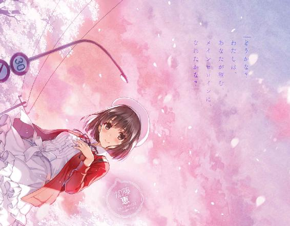
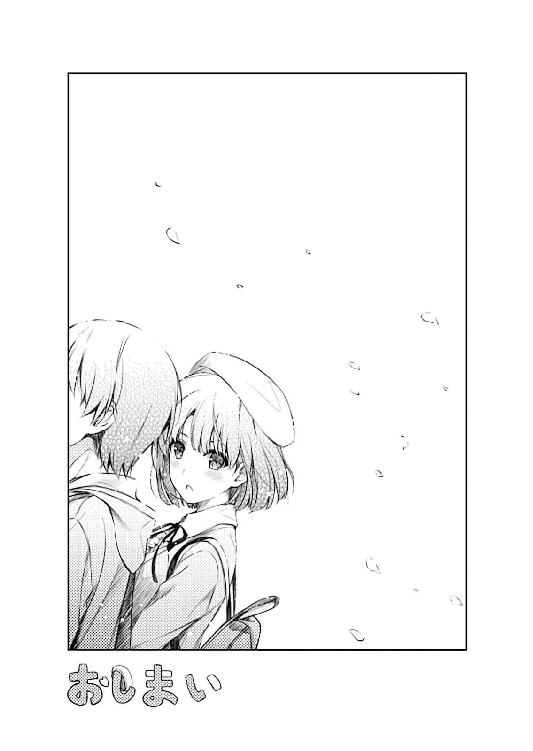

| 冴えない彼女の育てかた13 (富士見ファンタジア文庫) | |
| 丸戸 史明 | |
| Kadokawa / 富士見書房 (2017) | |


冴えない彼女の育てかた13
丸戸史明

富士見ファンタジア文庫
本作品の全部または一部を無断で複製、転載、配信、送信すること、あるいはウェブサイトへの転載等を禁止します。また、本作品の内容を無断で改変、改ざん等を行うことも禁止します。
本作品購入時にご承諾いただいた規約により、有償・無償にかかわらず本作品を第三者に譲渡することはできません。
本作品を示すサムネイルなどのイメージ画像は、再ダウンロード時に予告なく変更される場合があります。
本作品の内容は、底本発行時の取材・執筆内容にもとづきます。
本作品は縦書きでレイアウトされています。
また、ご覧になるリーディングシステムにより、表示の差が認められることがあります。
第一章 ガチで○○する三一ページ前
「俺......恵が好きだ！ 三次元のお前が好きだ！」
「その『リアルの』っての、いらなくない？」
「............ぉぃ」
......と、まぁ、まるで半年の長さにも感じられるくらいの一大決心にて発せられた俺の告白に。
された方の彼女──豊ヶ崎学園三年Ａ組、ゲーム制作サークル『blessing software』副代表、そして、俺、安芸倫也にとってのメインヒロイン、加藤恵──は、それはもうなんというか、とてもとてもとてもリラックスした、どうでもいいや的なリアクションで応えてくれやがりましたとさ。
「えっと、倫也くん？ そんな情けない顔で見られても困るんだけど」
「いや、だってさ......」
しかも返事しやがらねぇし......
「ま、とりあえず内容に関してはちゃんと理解したから安心していいよ」
「理解......って」
「つまり、『倫也くんはわたしが好き』ってことだよね？ メインヒロインとか、サークル仲間とかいうのだけじゃなくて、女子としても意識してるって、そういうことだよね？」
「........................ぉぃ」
さらに蒸し返しやがるし......
「そんな風に睨まれても......他に何か言うことあったっけ？」
「返事だよ返事！ ていうか絶対はぐらかしてるだろお前！」
「あ～、それはほら、だったら『返事ください』的な言葉を添えてくれないとこっちも対応のしようが」
「なんでそんなフラットなのなんでそんないつも通りなの？ オタクが女子に告白する恐ろしさを知っててやってんの俺のこと殺したいの!?」
あ、言い忘れたけど、今は夜八時過ぎの、ここは家の近所の探偵坂のど真ん中。
そんな住宅街の静かな夜に、俺と恵の（特に俺の）妙に甲高い声が響いている訳でご近所さん申し訳ございません。
「でもさぁ、ここで急に泣き出したり抱きしめたりするドラマチックな展開ってのもなんか違くないかな？ だって、相手倫也くんだよ？」
「ねぇ俺の今までの態度の何が悪かったの？ 全部？ もう取り返しつかないって言ってる!?」
「あ～、え～と、まぁ、そうかも」
「肯定していいなんて言ってないから！」
「ま、それはともかくさ、ここで『わたしも好きだったの～』なんてあまりにベタだよ。ゲームの方でも、こんなありきたりな展開の告白シーンにしちゃうつもりなのかな倫也くんは？」
「するに決まってんだろメインヒロインだぞ!?」
「でもさぁ、意外性ってのも必要なんじゃないかな？ 例えば何事もなかったかのようにスルーされるとか、返事もらうのに半年待たされてその間モヤモヤしっぱなしとか」
「いいかよく聞け恵！ ベタというものは、王道というものはだな......」
「はいはい。多くのユーザーが面白いと感じるからこそ、躊躇なく使うべきなんだよね？」
「わかってんじゃんお前わかってんじゃん！」
でも、でも、それもね......
目の前の、完全に主導権を握りつつ、俺を超見下してるこの女子が悪いんだよ......？
「いやマジで勘弁してよ恵。お願いだから気を揉ませないでよ......」
目の前の恵に、今の情けなさすぎる顔を見せたくなくて......
けれど諸事情により、両手で隠すことも、背を向けることもできないため、俺は恵から半分顔を背け、もう半分を片手で隠しつつ......
けれど、とてつもなく情けない声だけは隠しきれずに絞り出す。
「俺、俺さぁ......今回ばっかりは、いつも以上に勝算あると思ってんだよ......っ」
ただ、その言葉の内容に関してだけは、少しだけ見栄を張りつつ。
「へ～、勝算ありって思ってるんだ。この前思いっきり裏切っておいて、あんなに泣かせておいて、それでもわたしがＯＫするって期待しちゃってるんだ～」
「そうだよ！ だって泣いたもん恵！ 俺のせいで泣いたんだもん！」
「ぅ......」
で、そんな俺の逆ギレ気味の開き直りは......
でも、少しは恵の調子を削ぐのに成功したようで。
「俺、恵の信頼を裏切ったのに、そのせいで、めちゃくちゃ悲しませたのに......それでも、こうしてさぁ、サークルに戻ってきてくれて......」
「それは......倫也くんのためじゃなくて、氷堂さんや出海ちゃんのためだし」
「それでも嬉しかったんだよ俺は！」
「ぅぅ......」
だから俺は、ここぞとばかりに畳み掛ける。
「たとえ、それが俺の勘違いだったとしても、勘違いしたって仕方ないじゃん。そんくらい恵、俺に向き合ってくれてたじゃん！」
痛々しい勘違いをさらに極め、恵を思いっきりいたたまれなくさせて......
そして、俺の求める答えを引き出せたらって。
「じゃ、じゃあ......倫也くんは、さぁ」
「......うん？」
「成功率、どのくらいだと思ってる？」
......今度はそう来ましたか。
つまり、何と言われても返事しないし、けれど意地でも脈なしとも言わないつもりなのか。
それって余裕なのか、意地なのか......？
「え、えっと、えっと......そうだなぁ、だいたい、ご、五○パーセント？」
「半々かぁ、根拠は？」
で、その数字が大きいとも小さいとも評価しないのも、余裕なのか意地なのか......
「いや、だって......今だって恵、俺の手、握ってくれてるし......」
「........................おっとぉ」
「慌てて離すな！」
「いやほら、だって、握って離さなかったの倫也くんの方だし」
「違うよ離さなかったのそっちだよ！ ほら見てよこの深い爪の跡！ これ恵がつけたんだからな！」
「いや～、おかしいね～、これはありえないね～」
......いやまぁ、さすがに余裕しゃくしゃくという訳でもなさそうだというのは、俺の手のひらに強く残った赤いしるしが語っていた。
「もういい！ とにかく俺は恵のことが好きだ。逃げも隠れもしない。それでお前は!?」
それは、今でも結構痛くて、今でもかなり熱くて、そして今でも、俺に勇気を与えてくれていて。
「う～ん......」
「......まだ迷うんだ」
でも、そんな俺の鋭い踏み込みを、やっぱり恵は見事なまでにさらりと......いやぐだりとかわす。
「というかさぁ、答えは決まってるんだけど、迷ってるのは、答えるタイミングの方で」
「なにそれ......」
いやもう『ならさっさと返事してよ!?』ってキレてもいいよね......？
俺、かなり我慢してるよね......？
「だってほら、もしわたしがＯＫだったらさ、さすがに『よかった～、じゃ、終電もうすぐだからバイバイ～』って訳にはいかないよね？」
「お、おおおおお......っ？」
「いやＯＫって言ってないよわたし？ あくまで喩えだよ？」
「た、喩え......？」
でも、でも、もしＮＧだったら、『ざんねん～、じゃ、終電もうすぐだからバイバイ～』って訳に、いくんじゃ......？
ということは、そういう訳にいかないってことは、つまり、恵の答えは......
「もしも、わたしが、その、............って、言ったら、やっぱり、そういう雰囲気になっちゃう、よね？」
「な、なっちゃうの!?」
「......ならないの？」
「そんな風に睨まれても......」
選択肢の結果ばかり気になって、選択後の展開になど思いもよらない俺を、恵は、『わかってないなぁ』な黒い視線で睨みつけてくる。
というか、選択後の展開に思いを馳せることができるのは、選択権を持ってる奴に限ると思うんだけどどうだろう。
そう考えると本当、ギャルゲーのヒロインって、あんな勝手な主人公に振り回されて不憫だよなぁ......
「い、いや、そりゃ......ならないと保証するほど俺に自制心があるかを保証することは、え～と......」
などと、俺の分身のつもりで書いている主人公にヘイトを向けても不毛なだけなので、とりあえず俺は、まだ開いてもいないルートの展開に頭を悩ませる。
いや、そりゃギャルゲーなら、もちろん『よかった～、じゃ、終電もうすぐだからバイバイ～』ってことになるはずないんだけど。
ていうか、間違いなく、簡単にバイバイなんて言える訳もなくて、きっと駅での別れ際にグダグダしつつ、最終的には......
「ほら、という訳だから、一度、倫也くんの家に戻ろう？」
「............は？」
そう、それはあくまでこちらの最終的な決断であって、こうしていますぐ相手から求められる提案ではなかったはずなんだけど......
「戻って、お互いお風呂に入って、さっぱりしてからこの話の続きしよう？」
「ちょっと待ってちょっと待ってちょっと待って～！」
しかも、なんかこっちからじゃ絶対に言えないような前向き過ぎる提案まで盛り込まれてるし。
「......言っとくけど一緒に入らないよ別々だよ？」
「そこ気にしてるんじゃないから！」
「それこそ考え過ぎだよ倫也くん。だいたいわたしたち、昨夜お風呂に入って以来、まる一日入ってないんだよ？」
「それが何なの!?」
「だから、その状態で、初めて......しちゃうのって、さすがにちょっと、じゃないかな？」
「だからちょっと待ってちょっと待ってちょっと待って～！ お前どこまで許す気だよ！ えっと、もしＯＫだった場合に限るけど！」
「あ、えっと......さすがに、キスまでだけど......もし、ＯＫだった場合に限るけど」
「 っっっっっっっっ」
っっっっっっっっ」
それは〝まで〟とは言わない......言わないんだよ俺にとっては......
ちなみに......ちなみに言っておきますが......今、恵、俺の手をにぎにぎしています。
指と指が一本ずつ絡まって、とても外せそうにない状況に陥っています。
その上で、こんなこと言いやがっているのです、こいつ......じゃなくてこのひと......
「あ、でも、キスだけだったら倫也くんは初めてじゃなかったね。初めてなのわたしだけだね。ごめん紛らわしいこと言っちゃって」
「あ～、あ～、ああああぁぁぁぁぁぁ」
さらにその上で、こんな嫌味まで言いやがっているのです、この野郎......じゃなくてこの女子......
「いや、いや、いやいやいや恵。キスだけだったらわざわざ風呂に入る必要なんて......」
「う～ん、でも二人とも徹夜明けだし、ちょっと嫌だなぁ......まぁ、歯を磨けばマシかもしれないけど、でも......」
「だ、だいたいお前、今から俺んち戻ってしかも風呂まで入ったら泊まり確定じゃん？」
「でもそれって、二泊が三泊になるだけだし。始発で朝帰りして、着替えて学校行けばなんとか」
「さすがにそれについてはちょっとだけ言わせてくれこの不良娘！」
一体俺たち、なんの話をしてんだろ......
もう、かっ飛ばし過ぎだろ、色々と。
「そ、それに、だいたい、風呂入って、泊まって、しかも......したら、本当にそこで止まれるとでも思ってんの？ えっと、もしＯＫだった場合に限るけど」
「そこはまぁ、倫也くんだし、その辺の安心感はあるよね。まぁ、もしＯＫだった場合の話でしかないけど」
ていうか、さすがにもうこれ、『もしＯＫだったら』って前提いらなくない？
「......ちなみに、今から戻ると、さすがに親にやましい言い訳をすることになるけど」
「仕方ないんじゃないかな？ 今回ばかりは本当にやましいんだし。結構」
「......ぅぅ」
もう、突っ込むのも疲れた......
というより、どんどん俺の望まない方向と一八○度ずれていくこの感覚なんなの。
「それに、やましいと言えば、どっちかっていうと、わたしが親にする言い訳の方だと思うけど」
「それ！ ずっと前から心配してたけど恵んち本当に大丈夫なの!?」
「まぁ、さすがに途中で倫也くんかお母さんに代わってもらった方がいいかもね」
「母さんはともかく、俺がアリバイ証明するのって加藤家的にはＯＫなの......？」
なぁ、本当にこいつ、なんなの？
これ、本当にまだＯＫしてないの？
「じゃ、戻ろっか」
「......ぉぅ」
そして、やっぱり恵は、握ったままの手を引いて、俺より先に、坂を上り始めた。
握り合った手は、どっちのせいかわからないけど、熱くて、汗ばんでいて、どくどく、鳴っていた。
※ ※ ※
「それで結局、家にはなんて言い訳したんだ？」
『ん～、「マスターアップ直前に重大なバグが見つかって、どうしても徹夜で作業しなくちゃならなくなった」って......』
「すいませんマスターアップまだ一月以上先なんでそんな心臓止まるような噓やめてください恵さん」
窓枠のところに置いたスマホのスピーカーから、恵の声とともに、ドライヤーの音が聞こえてくる。
先に風呂から上がった恵は、俺の部屋で髪を乾かしつつ、今まさに交代で入浴中の俺と、こうしてたった一○メートルの距離を、スマホで繫いで密談の真っ最中だった。
『で、倫也くんはなんて言ったの？』
「えっと、『恵の方向の電車だけ車両故障で止まってたから』って......」
『ん～、微妙に内容違うなぁ......最初から口裏合わせておけばよかったね』
「あ～、それなら大丈夫。ウチの親にそこまで気を遣う必要ないから」
『そう？ ならいいけど』
「うん、問題ないよ......」
そう、言い訳に関しては、完全に問題なかった。
何故なら、さすがに今回に限っては、親も俺の言い訳をまるっきり信用していないみたいだったから......
『それはともかく、浸かっただけですぐ出てくるとか駄目だよ？ ちゃんと顔洗って、髪洗って、体洗って......』
「んなの毎日洗ってるわ！」
『あ、そういえば倫也くん髭って剃ってる？ ていうか、もう生えてたっけ？』
「......それ今聞いてどうしようっての？」
『ほら、まぁ、剃り残しが頰に当たってじょりじょりしないかなって』
「あぁぁぁぁぁぁぁぁぁぁぁぁ......」
で、そんな謎の儀式の最中も、恵は、えらく吞気で、かなりリラックスした様子で、俺の第二次性徴の様子なんかにまで探りを入れてくる。
こっちが気持ちを鎮めるために冷水シャワーを浴びているのとは対照的だ。
まぁ、最近一年のうち一月近くはここに泊まってる気もするし妥当な線なのかもしれないけど、だとしたら一年のうち一年近く泊まっている俺がここまでガチガチになっているのは何故なのだろうか。
※ ※ ※
「さ、さて、えっと、じゃあ......っ」
そして一五分後。
いつもと違う場所も念入りに洗い、肩まで浸かって一○○数えて、ようやく風呂を出て。
部屋に戻ったら恵にドライヤーを渡され、髪もサラサラになり、その後に何故か乳液まで渡され、なんか顔もしっとりして。
「はい、じゃあ、準備もできたことだし、ちょっと巻き戻って倫也くんの告白のプレイバックから......」
「いい加減にしひょぉぉぉ！」
で、で、やっと、元の雰囲気に戻れると思った途端にこれだよ！
「だって、さっきの倫也くんの告白について、色々と確かめたいことが......」
「もう寝る！ 何もしないでさっさと寝る！ おやすみなさい！」
「え、それは困る。今夜は絶対に寝かさないよ」
「お前、俺を心臓発作で殺したいの!?」
「あ、そういう意味じゃなくて、わたしが納得するまでって意味で......」
「あああああ～、もうっ！」
もう今の恵、超めんどくさくて、心拍数の落としどころがない......
「俺は恵のことが好きなの！ それだけじゃ駄目なの!?」
「それは、まぁ、どうやら間違いないって納得してるけど......」
「じゃあ、何だよ確かめたいことって？」
「それは......だから、倫也くんの、色々な想い。一つじゃない答えの全部」
「それって......」
俺たちは、いつの間にか座っていた。
それも、恵のために敷いた布団の上に。
ぺたんと、座って、見つめ合っていた。
「英梨々と、霞ヶ丘先輩に対する、気持ち」
「......やっぱ寝ていい？」
「駄目」
ついでに言えば、恵は、俺の手を、両手で握ってて。
その握った手を、しみじみと見つめてて。
「駄目だよ......だって、一応、こっちも覚悟決めないといけないし」
「覚悟って、どういう......」
「倫也くんは知らなくていいこと」
かと思えば、握ってたはずの俺の手の甲をぺちぺちと叩いて、何かを訴えかけてきて。
「そんなの、好きに決まってる」
「......どういう意味で？」
だから俺は、そんな恵の行ったり来たりする気持ちに正面から向き合うために、全力で右往左往するしかできなくて。
「一つは、尊敬できる、クリエイターとして」
「他には？」
「一緒に夢を追いかける......追いかけた、仲間として」
「それから？」
「最強のギャルゲーのヒロインにもなりうる、魅力的なキャラクターとして」
「後は？」
「............手の届かない、女の子として」
「............」
俺が、その言葉を放った瞬間......
恵は、苦しそうに表情を歪ませた。
「手が届かないって、どうして思ったの？」
けれど、その反応だけは、彼女自身のもののようには思えなくて。
「それって、最初から決めつけてたんじゃない？ 相手が絶対に応えてくれないって、思い込んでただけなんじゃない？」
「だったら、何だよ......」
だから俺は、その、今は誰ともわからない、けれど間違いなく恵のものである手を、ぎゅっと、握り返す。
「怖いものは怖いんだよ......わかれよ、そんくらい」
「わかんないって......そんなの、あのひとたちに、わかるわけないって」
「だから、だよ......」
そう、そんな俺のひねくれた気持ちなんて、普通、わかるわけがない。
でも、わかってくれないからこそ......わかってくれないって、わかってしまっているからこそ、怖くって。
自分とは、絶対に釣り合わないとか。
負けたままの立ち位置で、そういう関係になりたくないとか。
あの凄いひとを、自分が壊してしまいたくないとか。
それこそ単純に、見下されるのが嫌だとか。
そんな、色々な......
多分、彼女たちには思いもよらない、低レベルの感情が......
コンプレックスとか恐怖とか、それに似たたくさんの種類の卑しい想いが、ずっと自分の中に渦巻いていて。
「霞ヶ丘先輩は......理解はできても、納得、してくれないと思うよ？」
「うん......」
そう、詩羽先輩は......いいや、霞詩子は、心情描写の天才だから。
だから、きっと、俺の愚かなメンタリティにも辿り着いただろう。
わかった上で、俺のそのヘタレな思考を、駄目主人公のそれだと嘆くだろう。
けれど、そうやって、俺が駄目な奴だってわかってくれるだけでもいい。
「でも英梨々は......理解すら、できてないと思う」
「そっかな......そうかも」
俺が英梨々に抱く想いは......俺にすら、全部理解できてる訳じゃない。
自分よりよっぽど凄いのに、俺の評価じゃ凄くないって見下したり。
誰よりも凄くなって欲しいのに、ずっと俺の子分でいて欲しかったり。
スランプに陥るたびに心配したり、そのせいで停滞することに安堵したり。
殻を破って成長した姿に高揚したり、置いていかれる焦燥感に歯嚙みしたり。
......生まれて初めて恋したり、生まれて初めて憎んだり。
「でもさ、でも......」
「ん？」
「いつか、英梨々にも、整理をつけて、ちゃんと話さないとって思ってる......」
でも、今は、そんな歪な想いも。
他の女の子に話すべきじゃない想いも、全部、さらけ出す。
目の前の、加藤恵という、女の子にだけは。
俺の手を包んだ両手を、自らの頰に当て......
自分の顔の熱さを、俺に伝えてくれる、女の子にだけは。
「いつかって、いつ？」
「それは......」
「期限、切らないと、やらないよね？ 締め切りと一緒で」
「それは、それは......えっと、今年中、かな？」
「うん、うん......そのくらい、かもね」
それは、冬コミの頃。
つまり、俺たちの魂の作品が、世に出る頃。
そして、年末商戦の頃。
つまり、英梨々と詩羽先輩の魂の作品が、世間を賑わす頃。
「納得、した？」
「とりあえず......二人については、ね」
「んじゃ......今度こそ、ラストだぞ？」
「ん......」
その、俺の、『さすがにわかってるよ』な口調に......
恵が、額をこつんとぶつけて、『うん、正解だよ』と教えてくれる。
「恵は......怖くなかった」
「そう、なんだ」
恵が最後に、俺にねだったもの。
それは、彼女が、本当に、心の底から納得するための言葉。
自分が、俺にとって特別な理由の、詳細。
「いや、怒らせるとめっちゃ怖いけどさ。こじらせると、誰よりもめんどくさいけどさ」
「......そうなんだ～」
「てっ」
......まぁ、その俺の『あ～、わかってるから～』な口調には、額をごつんとぶつけてきたけれど。
「でも、どれだけ怖くても、どれだけめんどくさくても......お前のことなら、『頑張ればなんとかなる』って、思えたんだよなぁ」
「何、それ......」
こじらせると大変だけど、取り返しがつかなくなることは、絶対にない。
わかってくれてる訳じゃないけど、いつかわかってくれるに違いない。
全部理解できてる訳じゃないけど、そのうち必ず、理解できる自信が、少しはある。
釣り合っていないかもしれないけれど、努力次第でなんとかなる、かもしれない。
負けてるところもたくさんあるけれど、勝ってるところだって少しはある、よね？
俺のせいで壊れたりなんかしないけど、俺が少しも影響を与えない訳じゃない、はず。
だから、告白したら、一度くらいは失敗するかもしれないけど......
それでも諦めず、二度、三度とリトライすれば、いずれは根負けして受け入れてくれる。
......ような気がしないでもない。
「そんな訳で俺......恵にしか、告白できない」
「それ......選択肢が『最初からわたししかなかった』ってこと？」
「そうだよ......お前は、消去法で選んだ、俺の、世界で一番、大切な彼女なんだ」
と、恵は、しばらく絶句して......
いや、その間にも、俺の頰を少し強めにつねっていたりはしたけれど。
「......そんなこと言われて、喜ぶ女の子、いると思ってるのかなぁ？」
「いないだろうなぁ......」
けれど、それから数秒後に放った言葉は......
「でも、それでも恵ならさ、許してくれるんじゃないかって期待があったんだよなぁ」
「どれだけちょろいの？ あなたの中にいるわたし......」
内容はともかく、その吐息の温かさを、俺の顔に届けてくれた。
「という訳で、返事は？」
「なんか今の聞いて、真面目に答える気なくしたよ......」
「それは約束が違う」
そんな、のらりくらりな会話が交わされている距離は、だいたい三センチくらい。
「あ～、でも、ここまで話が進んだら、答えも何もないんじゃないかなぁ？」
「それでも聞きたいの、俺は」
額はぴったりくっついて、鼻の先も少し触れて、互いの息はかかりっぱなしで。
「だからさぁ......わたし、今、ここにいるよ？」
「それで？」
「嫌なら帰ってもよかったのに、わざわざ駄々こねて、いちいち戻ってきて、ここにいるんだよ？」
「返事は？」
「あ～もうっ、なんだかなぁ～」
「それはいいから、返事」
「まぁほら、わたしって、倫也くんが言うには、投げやりだし、適当だし～」
「だから何だよ？」
「だから、何度も諦めずに告白され続けたら、めんどくさくなって、許しちゃうんじゃないかなぁ？」
「......それが答えってこと？ 信じるぞ？ 俺」
「知～らないよ～、そんなの」
「もしここで手のひら返しされたら、一生女性不信になっちゃうぞ？」
「だからぁ、そんなの、自分で試してみればいいじゃない」
「じゃ............試す、ぞ？」
「ご勝手に～」
と、恵が挑発するように唇を突き出した瞬間......
「あ......」
「どしたの？」
「今、お前......」
「え、なに？」
「ちょっと、触れた......」
「ぁ......」
そう、恵の尖らせた唇が、俺の、ぶつくさ呟いていた唇に、一瞬触れた。
『何度も諦めずに告白』を試す前に、それが、成就されてしまった、ような......
「それは......ノーカウント」
けれど恵は、そんな偶然のアクシデントを、甘い声ながらも、強硬に否定する。
「そ、そっか......ノーカンか」
「もっと、すっごくくっつかないと、キスっていわないよ」
嫌なら、そこで終わらせてもよかったのに、終わらせようとする気配さえなかった。
「すごくって......どんくらい？」
「そうだね......えっと、三秒以上、かな？」
「落とした食い物かよ......」
「あ～、そういえばあったね～、三秒ルール」
それどころか、俺たちの、初めての儀式のハードルを、逆に上げてきやがった。
「じゃ、じゃあ......改めて......チャレンジするぞ？」
「ん......」
そう、だから今度こそ......
今度こそ、俺たちの、今日の、最後に辿り着く場所、まで......
「えっと、その、恵......」
「なに？」
「好き、だ」
「知～らない」
「好きだ」
「駄～目」
「好き」
「い～や」
「好きなんだってば」
「あ～そう、よかったね～」
「......なぁ、恵」
「......何？」
「これ、何度目くらいでＯＫくれんの？」
「告白、続けなかったらリセットだよ？」
「うわまた一からかよ～」
「頑張ってね～」
「だからぁ、好きだっつ～の」
「なんだか飽きてきてない？ 倫也くん」
「んなこと......ああ好きです好きです！」
「......まぁ、今のはセーフ。ちゃんとカウントされたよ」
「もういい加減に......好きだ」
「ぁ......」
「な、なんだよ？」
「そういえば倫也くん、髭、まだだね、つるつるだね」
「って、なんで今そんな......ああっ!?」
「あ～、残念、またリセットだね～」
なんて、吞気にとぼける恵の顔は......もう、俺には見えない。
だって今、恵と俺の距離は、俺の顔にまだ硬い髭がないことを、恵の頰で直接感じられるくらいの近さ、だったから。
「もう、本当、好きだって言ってんだろ」
「言葉が軽いよね～」
「好きだ好きだ好きだ、好きだ～」
「何度も言えばいいってものじゃないよね～」
「恵が好きだ」
「そろそろ、わたしの方が飽きてきたかな～」
「本気で好きだ」
「別に、本気とか言わなくてもわかってるんだけどなぁ」
「好きだ」
「........................うん、好き」
「んっ......」
その恵の、一瞬の好き......いや、一瞬の隙を。
もう、逃す訳にはいかなかった......
「ん、ん......」
「......っ」
一秒、二秒......
「んぷ......」
「はぁ......」
そして、三秒......
「............」
「............」
さらに、それから、その十倍を超える時を......
俺たちは、唇を離すことも忘れ、色んなところを、絡めあった。
それはなんか......ウチのシャンプーと、ウチのハミガキ粉の香りがした。
※ ※ ※
で、まぁ......
その出来事は......その夜のその後について、様々な〝その先〟を想起させる内容ではあったけれど......
でも結局、オタク的チキンな俺と、そんな俺のチキンさを信頼しきっている恵の間には、〝今日に限っては〟それ以上の進展もあるはずはなく。
しばらく余韻に浸った後、いつも通り、別々の布団に入り、電気を消して、少し語り合った後、きちんと『おやすみ』の挨拶と共に、眠りについて。
そして、朝の五時にかけたアラームとともに目を覚まし、恵は学校に行くために、一度家に帰った。
......ああ、そういえば、出て行く前に、二度だけ、またキスしたっけ。
一度は俺から、
そしてもう一度は、恵から。
第二章 ここからエピローグと言っても何の支障もありません
一一月二×日（金）午前九時 第一回ミーティング（合宿前オリエンテーション）
『やあ、おはよう「blessing software」のみんな。昨日はしっかり眠れたかな？』
日時は最初の行を参照していただくとして、ここは俺の部屋。
秋晴れの爽やかで冷たい空気とは関係ない、高めの人口密度によって醸し出される熱気が、この場所に満ちていた。
『もし、よく眠れなかったというのなら、体調には気をつけてくれよ？ 何しろ今日からの合宿は、今までのそれとは桁違いの、地獄の三日間になるからね』
けれど今、部屋に響く声の持ち主は、その部屋の室温を上げることに寄与している訳ではなく......
まぁ要するに、テーブルに置かれたノートＰＣのディスプレイから顔を、スピーカーから声を出していた。
『それじゃまず、今回の合宿の最終目標についてコンセンサスを取っておこうか......合宿のゴールは、シナリオ、グラフィック、演出、音楽等、全素材の完パケ。そして、それらを一つのゲームとしてまとめ上げること』
ディスプレイに映っている顔は茶髪パーマのリア充イケメン野郎にしか見えない上に、スピーカーから出ている声も不自然なまでの爽やかさに満ちていて、男子をイラっとさせる天賦の才に恵まれたその男の名は、波島伊織。
『マスターアップを二週間後と想定して、週明け以降はデバッグに集中するためにも、最低でも今週末に全ルートがちゃんと最後まで動くくらいの完成度にはしておきたい......ここまでで質問は？』
俺の通う豊ヶ崎ではなく、都立の桜遼高校に通う、俺と同じ三年生。
そして、俺たちのサークル『blessing software』の、プロデューサー＆ディレクター＆フィクサー。
『よし、それじゃ次は、各パートの現在の進捗状況を確認......』
「はいプロデューサーお疲れ様。後はわたしたちに任せてさっさと登校してください」
「いや、恵、さすがにそれは......」
......なんだけど、こうして大事なことを話している最中にスカイプ通話を強制的に切られてしまうくらいには、（一部の）メンバーに対して信望がない。
「だってほら、あのプロデューサーの言う通り、今日からの三日間はすごく忙しくなるんだし。挨拶なんかそこそこに、さっさと作業に入らなくちゃ」
「ま、まぁ、そりゃそうかもしんないけど......」
まぁ、それはともかくとして、伊織の言った通り、今日から、史上最大の合宿が始まる。
「それじゃ、各パートの現在の進捗状況を確認しよっか。まず原画はどんな状況かな？ 出海ちゃん」
今ここに集結しているメンバーは、ここ最近、すっかりサークル内で猛威をふるって......存在感を増しているサークル副代表、加藤恵と......
「は～い、立ち絵は全部終了。イベントＣＧも、今まで指示のあったモノは全部上がってま～す。後は今日のシナリオにどれだけ新規イベントが盛り込まれているかドキドキしながら待ってま～す！」
そして、ここ最近、『blessing software』のスーパーエースとしてすっかり定着した感のあるキャラクターデザイン・原画担当にして、俺と同じ豊ヶ崎学園の一年生にして、ついでに伊織の妹、波島出海ちゃんと......
「音楽の方はどうかな？ 氷堂さん？」
「ん～、ＢＧＭは全部打ち込みまで終わったし、ボーカル曲の方もほとんど収録終わってるよ。後は今日上がってきたシナリオに合わせてメインヒロインのエンディング曲を調整するだけ～」
そして、ここ最近、ガールズバンド『icy tail』の歌姫として都内のライブハウスを席巻しつつある、『blessing software』の音楽担当にして、椿姫女子高校の三年生にして、ついでに俺のイトコ、氷堂美智留と......
「......どうやらそんな感じで、皆シナリオの完成待ちみたいだけど倫也くん？」
「今朝がた完成いたしました遅くなりまして申し訳ありませんでしたぁっ！」
そして、ここ最近、『自分のサークルほっぽり出して商業ゲーム制作にうつつを抜かす裏切り者』としてすっかり株を落とした感のある、『blessing software』の代表兼シナリオライター、安芸倫也の計四名となっております。
「今朝がたって......それって徹夜明けってこと？ 大丈夫？ 倫也くん」
「いやそれよりもシナリオが今日までに上がってこなくて皆の作業が滞る方が大丈夫じゃないし......」
「ま～確かに、せっかく学校サボってまで合宿に参加したのに、肝心のシナリオが上がってなくちゃ話になんないよね～」
「いや美智留は授業が終わってから参加でもよかったんだけど......」
ちなみに美智留以外の豊ヶ崎組が、平日にもかかわらず堂々と学校に行かずにここに集結している理由は、今日が毎年晩秋の恒例行事、豊ヶ崎学園祭の初日だからであり......
いや本来はちゃんと学園祭にも参加しなくちゃいけないんだけど授業をサボるよりは罪悪感が薄いというか、そもそも去年もうちのサークルメンバーほとんど参加してなかったというか。
「ま、とにかく、どうやら皆シナリオ待ちだったみたいだし、午前中は、各自作業に入る前に、全員、上がってきたシナリオのチェックってことでいいかな？」
「了解で～す！ それじゃわたしは、イベントＣＧの枚数と構図を洗い出しておきますね～」
「んじゃあたしは、追加のＢＧＭが必要になるかどうか見とくよ」
と、まぁ、そんな訳で、本業勉学な高校生たちの罪深きサボタージュを誰も気にする様子もなく、てきぱきと作業分担が決まっていく。
「うう、すまないねぇ......俺がシナリオ遅らせたばかりに」
「うん、という訳で倫也くんは心から罪悪感に苛まれつつ、皆の邪魔にならないように隅っこで大人しくしてて」
「......それは言わない約束なんじゃなかったの？」
「なんでそこまで気を遣わなくちゃいけないのかな？ 仕事の遅いシナリオライターに」
「それは言わない約束なんじゃなかったの!?」
そして、その中心で、皆にてきぱきと指示を送っているのは、プロデューサーのいないこの中では一番偉い、サブディレクターで。
「ほら、そんなどうでもいいツッコミを入れてる暇があったら、さっさとベッドに潜って、早く寝ちゃって」
「え......」
「徹夜明けの人が、今日からの地獄の三日間を耐えきれる訳ないよね？ だから、今のうちに少しでも体力を回復させておくこと」
「恵......」
ついでに、何だかんだで、代表の、シナリオライターの、そして......俺のことをきちんとケアしてくれていて。
「という訳で氷堂さん、しばらく倫也くん起こしたら駄目だよ？ ギター弾くならヘッドフォンで。あとお昼までベッドに忍び込むのも厳禁」
「え～なにそれ、加藤ちゃん横暴～、独裁者～、鬼嫁～」
「その抵抗の仕方、小姑っぽくて負け感漂ってますよ美智留先輩......」
ていうか、昼過ぎたらＯＫなんだ......
※ ※ ※
一一月二×日（金）正午 第二回ミーティング（シナリオ会議）
「『巡璃27』、ＮＧ、総没、書き直し」
「何が駄目なんだよぅ!?」
と、盛大にサブディレクターを持ち上げてから、わずか三時間後......
「何がって......説明したくないくらいに全部が駄目だよ。書いててそんなことにも気づかなかったのかな、倫也くんは？」
「気づかなかったよそれどころか今も全然気づいてないよ！ だって昨夜ずっと泣きながら書いてた魂のシナリオなんだよ!?」
仮眠から目覚め、完全に回復した俺を待っていたのは、そんな有能で優しい彼女からの、思いもよらない、駄目出しという名の全否定だった。
「い、出海ちゃんも美智留も同意見？ 俺のこのシナリオ、そんなに酷かった？」
「え？ い、いえ、わたしは素敵なエンディングだな～って思ったんですけど......」
「そうそう、あたしもいい感じにイメージ浮かんだよ？ けど加藤ちゃんが〝これは絶対に表に出せない〟って......」
「何でぇ!?」
しかも、どうやらほぼ独断の......
まぁ、口で『魂のシナリオ』とか言っただけじゃその良し悪しはちっともわからないだろうから補足しておくと......
彼女たちがチェックした......つまり俺が今日提出したシナリオは、メインヒロイン『叶巡璃』ルートの、最終イベント『巡璃27』だった。
前回までに提出したシナリオの中で、なんとなく付き合い始めて、イチャイチャして、けれどある出来事のせいですれ違って、巡璃は主人公の勝手な行動に涙して別れを告げ、主人公はそんな彼女を諦めきれずにメールで想いを伝え続け......
そして今回のシナリオで、その、停滞した関係にやっと終わりが訪れる。
主人公のことをやっと許した巡璃。
しかし〝許さない〟から〝許す〟へと心が変わるまでの間には、長くて、めんどくさくて、そして情熱的な儀式が必要だった。
彼女は、彼と離れた間の辛さ、悲しさ、そして愛おしさを、逐一、水も漏らさないほど詳細に彼に伝え。
そして彼に、その一つ一つに、言い訳......ではなく情熱のこもった謝罪と、仲直りのキスを要求した。
......『巡璃27』に関しては、こんな感じで。
まぁ、あらすじだけをこうして読んでみても、思いっきりありきたりで、これがどうして面白いと自信を持って言えるのか、さっぱり理解できないかもしれない。
けれど、それでも俺は......
「魂のイチャイチャシナリオなんだよ!? 現時点ではこれ以上のものは書けないって言いきれるくらいの絶対的な自信作なんだよ!?」
「あ～......それでも、なんか嫌」
「だからぁ～、何でぇぇぇぇぇ～!?」
どうしても、この『巡璃27』は面白いと自信を持っていたし、恵がどうして否定するのかさっぱり理解できなかった。
「何でって言われても......説明しないとわからないかなぁ？」
そして恵の方は、何故だか、自分がどうして否定するのかを具体的に提示したくなさそうで。
「やっぱ〝転〟が結構こじれるところが不満なのか？ でもやっぱ、この方が二人の絆が深まると思うんだけど......」
「あ～、そこはもう諦めたから、別にいい」
「じゃあ逆に、巡璃が主人公をあっさり許しちゃうのが気に入らない？ もっとこじれまくって、泥沼化した方が良かった？」
「そこに関しては、そう思わないでもないこともないでもないけど、でも、まぁ、本質じゃない」
「......えっとそれって、そこに関しては少しは気に入らないってこと？」
などと恵は、のらりくらりと追及をかわしつつ、けれど明らかに否定的なオーラを漂わせて俺を睨みつけてくる。
まさにこれは『言ってくれなきゃわかんねえよ！』とキレたら、すっごい逆ギレされそうな一触即発の雰囲気だ。
「う～ん、加藤ちゃんが言うほど駄目かなぁ？ あたしは結構いいな～って思っちゃったけど？」
「み、美智留......？」
「そうそうっ、最後の仲直りシーンなんて、わたし、めっちゃキュンキュンしちゃいましたよっ」
「い、出海ちゃん......っ」
そして実のところ、メンバー内では結構、恵よりも俺を支持する流れになっていて......
「なんてゆ～かさ、確かにトモの文章ってキモいんだけどさ......でも、これはオタクじゃなくても、ううん、誰にでも心当たりがあるキモさって感じなんだよね～」
「あ～、なんとなくわかる。主人公、見てるこっちが引くくらい巡璃が好きなんだな～って伝わってきますもん」
「ほら、すっごいハマった恋愛ソングでもさ、よくよく冷静に歌詞を眺めてみると実は頭おかしいよねこれってことあるじゃん？」
「そんな感じそんな感じ！ 逆にその狂気にあてられてますます感情移入しちゃうんですよね～」
「......をい」
多分、いや間違いなく褒めてくれてるんだろうけど、とても人を常人扱いしていない感のコメントに、多少のもにょりも感じつつ......
「えっと、そういう訳でさ、恵」
「一体、加藤ちゃんは何が気に食わないのかな？」
「やっぱり具体的に言ってくれないとわかんないですよ～」
それでも俺は、クリエイター仲間に勇気づけられて、もう一度、最後の砦......サブディレクターを見つめる。
「そ、それは......嫌なものは、嫌」
「それってもしかして、単に加藤ちゃん個人の感性の問題ってこと？」
「それだけで没にするっていうのは、いくらサブディレクターでも何か違う気がしますけど......」
「それだけじゃないんだけど......何ていうか、ここでは説明しにくいっていうか......」
そして当の、対案を出さずにひたすら反対を繰り返す最強の野党は、わずかに口ごもりながらも、何かを訴えるような視線で俺たちを睨みつける。
......いや、俺たちをというか、俺だけを？
「あのさ......俺は、恵が駄目だと感じるところはちゃんと受け止めて、ちゃんと直したいんだ......」
その、訴えるような視線をしっかりと感じ取った俺は、もう一度、真剣な表情で恵を正面から見つめる。
「だから、嫌だと感じるところは言ってほしいし、内容についてしっかり議論したい」
「いや、だからそういうことじゃなくて......」
恵の方は、そんな俺の真剣な態度に、どこか困ったような表情で顔を背ける。
「けれど聞いてくれ......俺は、本当に、心からこの『巡璃27』を最高だと信じてる！」
「あのさ、倫也くん......」
それでも俺は、今はそれが正解だとばかりに、空気を読まずに恵との距離を一気に詰め......
「だって、少なくとも俺は、リアルであんなに胸がキュンキュンしたことは今までの人生で一度たりとも......っ」
「ほらやっぱ実体験なんじゃんこのイベント」
「本人、あっさりバラしちゃってますしね～」
「わたしは何も知らないし何も心当たりないから。全部倫也くんの妄想だから......っ」
「ん？」
そして、どうやら盛大に地雷を踏み抜いたらしかった。
※ ※ ※
一一月二×日（金）午後○時三○分 第三回ミーティング（シナリオ会議・延長戦）
『なるほど......それでメンバー間での意見が割れてる、という訳かい』
「......ていうか、色々あって採決が取れない状態なんだけど、どうすればいい伊織？」
そんなこんなで、この場での最高権力者を怒らせてしまった俺たちは、もはやこうなったら、毒を以て毒を制すというか、ハブにマングースをぶつける覚悟で、絶賛在校中（但し今は昼休み）のメインディレクターに、スカイプ越しで裁定を仰ぐことにした。
「まったく、加藤ちゃんも何が気に食わないんだか......キスの描写が生っぽすぎるのが気に入らないのかねぇ」
「この〝二人の唾液が混ざり合って、唇を糸で繫ぐ〟って表現が駄目だったんでしょうか？ せっかく描写に忠実なイベントＣＧのラフまで上げたのに～」
『あ～、あ～、聞こえない。というか氷堂さんも出海ちゃんも黙っててくれないかな～』
なお現在、スカイプ越しで会議に参加しているのは伊織だけではなかったり......
「うわ～、サブディレクターの横暴だ～」
「横暴ですね～」
『......二人とも、黙っててって言ったよね？』
「......なぁ、君らの力関係、いつの間にか変わってない？ 何かあった？」
という訳で、括弧の形状を見てもらえればわかるように、恵は色々こじらせて部屋から出ていき、階下のキッチンに立て籠もり......いや、キッチンで昼食の用意をしながら、スマホで会議に参加している。
......にしても多拠点コミュニケーションがやたらと発達してるよなウチのサークルって。
人同士のコミュニケーション全然取れてないけど。
『う～ん、実は僕も、さっきシナリオを読ませてもらったけど......確かに加藤さんの言う通り、この『巡璃27』には問題があるかもしれないな』
『え......？』
「伊織？」
「お、お兄ちゃん......？」
「は、波島兄ちゃんが加藤ちゃんを援護っ？」
などと言っているうちに、一番のコミュ障......いやコミュニケーション障害ポイントであったはずの伊織─恵間で、何やら劇的な変化が起ころうとしていた。
『ああ、皆が絶賛する仲直りシーンだけど、僕の見たところ、この展開には致命的な欠陥がある。多分、加藤さんも同じところに気づいたんだと思う』
「致命的な......欠陥だと？」
「そんなのあったっけ？ 波島ちゃん？」
「さあ？ わたしには全然......」
今まで、様々な方針において一度たりとも意見の合ったことがないディレクターとサブディレクターの、ここにきての初の同盟は......
いよいよマスターアップが近づく我らが『blessing software』の最後の、そして最大のクライマックスとして後世にも語り継がれ......
『それはだね......ヒロインがあまりに身勝手で自意識過剰で傲慢で、まったくユーザーの感情移入を誘えないところだよ』
「え？」
「え？」
「え？」
『............ぇ？』
......ることになるかとも思ったけれど、どうやら俺の勘違いだったようだ。
『いやぁ、メインヒロインが終盤でこんな酷い地雷女になってしまったら、これはもう炎上案件だね。今まで彼女のことを好きでいてくれた人たちでもディスクを叩き割ってサークルに返送してくるレベルだよ。あっはっは』
『......何を言ってるのかさっぱりわからないなぁ』
「お、おい、伊織......」
それは、やっぱりというか結局というか、（特定の誰かに対して）思った以上に皮肉屋なディレクターの、同盟の皮を被った高度にして低俗な煽りに他ならず。
そして、やっぱりというか結局というか、（特定の誰かに対して）思ったより煽り耐性の低いサブディレクターの、静かで劇的な反応を誘発し。
『こんな地雷ヒロインに平身低頭とか、どれだけＭなのさ倫也君の主人公。加藤さんもそう思ったからダメ出ししたんだよね？』
『どうしてそういう結論に辿り着くのか是非知りたいなぁ。想像力ないんじゃないかなぁディレクターのくせに......っ』
「お、おい、恵......？」
その、スピーカー越しの恵の声は、ほとんど聞き取れなかった。
「？ なんだろこの音？」
「さ、さあ......？」
けれどそれは、決して彼女の声が小さかったからではなく、ただ、リズミカルで大きな雑音にかき消されただけで。
そう、包丁で食材を刻む際にまな板が奏でる......にしては、明らかに力が入り過ぎているとわかるほどの騒音に......
『いやぁ、メインヒロインの地雷が誘爆する音なんじゃないかなぁ。あっはっは』
『（何かブツブツ言っているようだがもはや全く聞き取れない）』
「やめろぉぉぉお前らぁぁぁ～！」
※ ※ ※
と、まぁ、そんないつも通り（？）のメンバー同士の熱いぶつかり合いを経て。
結局、俺の提出した最終シナリオは、めでたくメンバーの総意でＯＫ......
※ ※ ※
一一月二×日（金）午後三時 第四回ミーティング（シナリオ会議・再延長戦）
「......リテイクね。とてもとてもとても気に入らない」
「えええぇぇぇぇぇ～!?」
......とは、ならなかった。
今、俺の目の前にあるのは、大量の赤ペンや付箋で装飾された分厚い紙束と。
そして、それらの注釈をいちいち指し示し、今まさに大量のダメ出しを行おうとしている、黒髪ロングの美女がまた一人。
「ようやくシナリオがアップしたというから氷堂さんに送ってもらってチェックしたけれど、どうやらまだまだ独り立ちとはいかないようね倫理君......仕方ないから私がしっかり立たせてあげるわ。そう、ちゃんと手を添えてね？」
「えっと、指導はありがたいんですけど、その相変わらずな、わざと紛らわしい表現を混ぜるテクニックやめてくれませんか詩羽先輩？」
「というか霞ヶ丘先輩、そのためにわざわざ大学からここまで......？」
早応大学一年生、霞ヶ丘詩羽。
半年前まで、俺と同じ豊ヶ崎学園に通い、この『blessing software』でシナリオを担当していた、旧サークルメンバー。
「......まぁ、澤村さんの家に行く途中でちょっと寄っただけよ。『フィールズクロニクル』のＤＬＣの打ち合わせのためにね」
さらには、高校時代からプロ作家として活動し、現在はコンシューマーゲームメーカー、マルズの大作ＲＰＧ『フィールズクロニクルⅩⅢ』のシナリオを担当している、新進気鋭のシナリオライター。
「でぃーえるしー？ 何それ？ 波島ちゃん知ってる？」
「ええ、それはですね氷堂先輩、正しくはダウンロードコンテンツっていって、ゲームの発売後にネットで配信する追加イベントとか追加キャラとかですよ」
「へ～、今のゲームって、パッケ出したら終わりってんじゃないんだね～」
「ええ、それにしても、こうして発売前から作ってるなんて随分と慌ただしいですよねぇ。それって実はマスターアップ後に発覚した致命的なバグを直すパッチなんじゃ......」
「............波島さん、厳正な品質管理のもとに出荷されているコンシューマーゲームにバグ修正パッチなどというものは存在しないわ。あなたもプロを目指すのなら覚えておくことね」
「なんでそんな睨むんですかぁ霞ヶ丘先輩!?」
だが今は、ちょっとばかり商業の闇に吞まれかけているような気がしないでもない。
と、まぁ、それはともかく......
「そ、それで詩羽先輩、俺のシナリオ、どこが駄目でした？ 言われたところ全部直しますから、遠慮なく言ってください！」
「えっと倫也くん？ ついさっき『現時点ではこれ以上のものは書けないって言いきれるくらいの絶対的な自信作』って......」
「事態は刻々と変化するものだよ恵！」
何しろ詩羽先輩の指導だ。
プロの......というか、師匠の薫陶を受けられるせっかくのチャンスを逃すことはありえない。
「......ふぅぅぅぅ～ん」
「......魂のシナリオが神のシナリオになるかもしれないんだよぅわかってよぅ」
......まぁ、今、俺の横顔をフラットに睨んでいる恵に対するフォローは必須ではあるけれど。
「実のところ、『巡璃27』の仲直りシーンについては問題ないわ。キスシーンの描写も文句ない。さすがは経験者ね倫理君」
「そういう余計な前振りはいいですから結論をですねぇ！」
その後、詩羽先輩は、シナリオのプリントをテーブルの上に広げると、チェックの入った箇所を指し示しながら、具体的なダメ出しを始める。
......位置的には、俺の隣にぴたりと寄り添って。
「............」
「ねぇ波島ちゃん？ 今のって、誰とのこと言ってるのかねぇ？」
「わたしに聞かないでくださいよぅ!?」
そして、詩羽先輩に押し出された形になった他の三人は、とりあえずテーブルから少し離れた位置で、俺と先輩の壮絶なイチャイ......本読みバトルを遠巻きに眺めていた。
「それよりも問題なのは、『巡璃エピローグ』よ......」
「え......？」
「エピローグ......」
「『巡璃エピローグ』？ そんなのあったっけ波島ちゃん？」
「ありましたよぅ......ほら、エンディング後の、『それから半年後』ってシーンから始まるやつですよ」
「あ、あ～、なんかあったような、なかったような、読み飛ばしたような、流し読みしたような......」
「まぁ、『巡璃27』の一割くらいしか分量はなかったし、ギャルゲーでもお馴染みの展開だしで、あまり印象に残らないのも仕方ないかもですけどね」
「そんな意識では駄目なのよ波島さん......いいえ、倫理君」
けれど詩羽先輩は、そんな挑発的な体勢になっておきながらも、どうやら決して茶化したアドバイスでお茶を濁すつもりはないようだった。
「『終わり良ければ全て良し』での『終わり』というのは、クライマックスシーンだと誤解している人もいるかもしれない......」
すぐに唇が触れてしまいそうな至近距離で見つめてきておきながら、その目は真剣そのもので、その口調も態度も、ガチなまでにシビアで。
「けれど本当に物語が終わるのは、エピローグ......ここで手を抜いてしまっては、今まで頑張ってきたことが全て無駄になりかねない。そう、『終わり悪ければ全て悪し』となってしまう」
「い、いや、けど、別に手を抜いてるとも思ってないんだけど......」
「なら本気で魂を込めたと言い切れる？ これが今の自分の全てを注ぎ込んだエピローグだって、胸を張って言える？」
「う、詩羽先輩......？」
「現に、氷堂さんはほとんど印象に残っていなかった......そんな、仲間にすら印象付けられないシナリオを、あなたは本当に、このまま世に出せるのかしら？」
まぁ、こちらも内容抜きじゃ、やっぱり良し悪しはわからないだろうから補足しておくと......
『巡璃27』の後、演出的にはエンディングに突入し、エンドロールの最後でサークルロゴが表示された時に、もう一度画面をクリックすると始まるのが『巡璃エピローグ』で。
それは『巡璃27』から半年後......
手を繫ぎ、桜舞う坂道を歩く巡璃と主人公。
二人は、その季節とその場所が、自分たちの出会いの場所であったことを懐かしそうに語りあい、それからも色々あったことを笑いあい。
そして最後に、『これからもずっと一緒だよ』と、未来への誓いを交わしあう......
「で、でも......だって、エピローグだよ？ 物語が終わった後の付け足しだよ？」
「だからって、こんな毒にも薬にもならない展開に何の価値があるのかしら？」
「価値って......そりゃ、二人の幸せは、これからも続くっていう安心感というか......」
「そこよ！ どうしてこの主人公は彼女ができただけでなく、彼女と同じ大学に合格して、これからの人生の成功が約束されたかのような描写になっているのよ？ 今までメインヒロインのお尻を追いかけまくってただけで、それ以外は何の努力もしてこなかったじゃない！」
「ええっ！ ギャルゲーでそれ言う？ 言っちゃう!?」
「恋愛物語は終わっても、人生の物語はそれからも続くのよ？ このシナリオには、そういった深みが感じられない。どうしても絵空事に感じてしまうわ」
「深みがなくてあっさりしてるのがギャルゲーの良さじゃん！ 絵空事だからこそ安心して萌えられるんじゃん!?」
「いいえ駄目......もっと苦しみ、挫折を重ね、深く悩むべきなのよこの主人公は......っ」
「そ、それじゃどうすりゃいいのさ？」
「そうねぇ......例えばエピローグで、過去に色々あった昔の恋人と再会して、そこから二転三転のドロドロの三角関係に......」
「それもうエピローグって言わないです最終章です！」
と、そんな詩羽先輩の有難くも深い教えは......
まぁ、半分は本当に感じた不満点だったのかもしれないけど、でもまぁ残り半分は、ギャルゲーの法則を敢えてガン無視した、ネタ風味の言いがかりにしか過ぎず。
だからまぁ、お互い最終的には『はいはいわかりました参考にさせていただきます～』とかお茶を濁して解散～みたいに考えていたはずで。
なのに......
「〝転〟はいらないって何度言ったらわかるんですか霞ヶ丘先輩......」
「私も何度も言ったでしょう加藤さん？ 〝転〟は、物語の神様の勝手だって」
「なら、その神様が決めた、〝転〟のないエピローグをひっくり返そうとするあなたは何様なんですか......？」
「お、おい、恵......？」
「さあ、何者かしらね？ もしかしたら、神様さえも惑わせる、悪魔だったりして」
「っ、サークルＯＢとして、助言をくれるのは感謝してます......でもそれって、あくまで助言であって、ストーリーの方向性にまで口出して欲しいなんて一言も言ってないんですけど？」
「もちろん、私もただの助言に留めているつもりよ？ けれどそれを採用して方向性を変える判断をするのは、あくまでも神様でしょう？」
「......っ」
「......っ」
「ちょっとちょっとちょっとぉ！ あの二人、いつの間にこんなギスギスしちゃってんの!?」
「いやぁ......そりゃ、ねぇ？ 波島ちゃん」
「まぁ、あれですよねぇ、美智留先輩......」
いつの間にか、俺の知らないところで、そんな笑い話では済まされない人間関係が形成されているようだったりして......
※ ※ ※
そして、そんなドロドロの人間関係のもつれ......いや熱い議論を経て、最終的に俺のシナリオは、その場での微修正を挟んだものの、今度こそめでたく完パケとなり......
やがて外が夕陽で赤く染まりかけた頃、詩羽先輩は当初の予定通り英梨々の家へと移動し、残ったメンバーは、それぞれのパートの作業に戻ることとなった。
恵は、ブツブツ呟きながらも、スクリプトを組み始めた。
なんか、時おりテキストを小声で音読しては、頭をテーブルにぶつけたり、頰をぺちぺち叩いたり、死んだ魚の目になって休憩に立ったり、様々な仕草が怖いやら可愛いやらで不気味だったけれど。
美智留は、ふたたび作曲に没頭し始めた。
こちらも時おり、シナリオを読み返しては、『くっくっく』とニヤけたり、一心不乱に弦を爪弾いたり、目頭を押さえて頭を抱えたり、やっぱり不気味にも程があり。
......いやまぁ、俺がシナリオ書いている時も、傍から見ればきっと同じ感想を抱かれていたと思えば、皆のことをとやかく言う筋合いはない、というか、彼女たちがその奇行の裏でどんな凄いアイデアを思いついたのかを考えると、逆にワクワクもしてしまう訳で。
けれど、そんなふうに皆が荒ぶる中......
ただ一人、対照的に静まり返っていた、サークル最年少にして、サークル最重要ポジションの出海ちゃんは......
一度シナリオを読み終えると、スケッチブックを取り出し、けれど開かず。目を閉じて、けれど眠るでもなく。
瞑想しているのか、妄想にふけっているのかを周囲に悟らせないまま、ただ、静かな時間を過ごし......
※ ※ ※
一一月二×日（金）午後八時 第五回ミーティング（イベントＣＧ方針会議）
「七枚......だってぇ!?」
「はいっ！ それが、この最終シナリオとエピローグで必要なイベント枚数ですっ！」
そして数時間後、何かを見切ったかのようにカっと目を見開き、いよいよここからの、自分の作業ボリュームを宣言した。
「喧嘩シーンで一枚、泣きシーンで一枚、仲直りからイチャイチャの流れで三枚！ エピローグは全員集合絵と巡璃のアップで二枚！ それで計七枚ですっ！」
「七枚って......出海ちゃん」
「そっかぁ、いよいよラストスパートだねぇ波島ちゃん！」
「いや、残り七枚の時点でスパートかけたら、いくら出海でも途中で力尽きるよ......」
これには他のメンバーも大半が......そう、さっき合流した、出海ちゃんの兄の伊織でさえも、我がサークルのエースの暴走に呆れるしかなかった。
「そんな訳で、今からラフに入りますっ！ 構図一緒に考えてくださいね倫也先輩っ♪」
「だからちょっと待って出海ちゃん......いくらなんでも七枚は無理だろ......」
何しろ、さっきからの状況を見ていればわかる通り、出海ちゃんの主張する七枚というのは、全て新規イベントＣＧで。
つまり、今からラフを描いて、クリンナップして、塗る訳で......
それは、今までの出海ちゃんのペースですら、一枚仕上げるだけでも〝早くて〟一日はかかりそうな作業ボリュームで。
「でも、でもっ、これ以上枚数減らすのは無理ですよぅ！」
「で、でも、今までのヒロインとの配分から考えても、だいたい三枚......」
「駄目ですそんなのっ！ だって、だって......巡璃は、メインヒロインじゃないですかっ！」
「ぁ......」
「っ......」
そんな、ワガママとも取れる、出海ちゃんの暴走をなんとかたしなめようとしていた俺と恵だったけれど......
それでも、彼女のその、魂の叫びに、同時に息を吞んだ。
「それに、それにっ、ここにきて巡璃の可愛いのなんのっ！ もう最後のイチャイチャシーンなんか、脳内でゴロゴロ転がっちゃいましたよ～！」
「そ、そう......？」
「............」
「ええもうっ、これこそ至高のエンタメですよっ！ もうこの展開がフィクションであろうがノンフィクションであろうが関係ありませんっ！」
「フィクションだから完全に想像の産物だから！」
「っ」
そして今度は、彼女のその、最後の余計な一言に、同時に超羞恥にまみれたリアクションを返したり。
「とにかくっ、そんな訳ですので、あと七枚は譲れません！ だいたいこうして原画作業が追い込まれたのは、そもそも最終シナリオのスケジュールが大幅に遅れて......」
「ああもうやめてやめてやめて！」
そんなふうに、ナチュラルに刺したり蒸し返したりしてくる我がサークルの原画家様を、サークル代表もサブディレクターも止めることができず、音楽担当はそもそも止める気がなく、ついでにプロデューサー兼兄貴も、苦笑とともにやれやれポーズで決めて周囲をイラっとさせ。
そして結局、最終的に原画家のワガママ......いやモチベーションを優先させて『まぁとりあえず優先度だけ付けてやってみよう』という、スケジュール的には最悪の判断に落ち着くことになった。
けれど俺には、この時点で、この問題がこれで解決したとは思えなかった。
特に心に引っかかっていたのは、『締め切りまで、あと七枚』という、どこかで聞いたことのある、その枚数で......
※ ※ ※
一一月二×日（金）午後九時 第六回ミーティング（イベントＣＧ方針会議・延長戦）
「あと二日で七枚？ 無理無理無理！ ありえない！ 人間業じゃないっ！」
「そんなのやってみないとわからないじゃないですか澤村先輩っ！」
「てか、その判断は一年前にして欲しかったぞ英梨々......」
そして、なぜその枚数が心に引っかかっていたのかを、今、目の前でぶんぶん揺れる金髪ツインテールを見て思い出した。
「あの時マスターアップできなかったからこそ、こうして心から忠告してるんじゃないのよ......まぁ実際に上がった絵自体は、自分でも神って言い切れるくらいにキレッキレだったけど。やっぱり逆境って人を成長させるものなのよね」
「......すいませんやっぱり挑戦させてもらっていいでしょうか倫也先輩？」
「だから止めてる振りして煽らないでよ!?」
その金髪の持ち主こそ、豊ヶ崎学園三年生、澤村・スペンサー・英梨々。
小学生時代からの幼なじみにして、半年前まで、この『blessing software』で原画を担当していた、旧サークルメンバー。
「恵から状況聞いて気になってたんだけど、やっぱり来てみてよかった......代表のくせにスタッフの暴走を止められないなんて、一年前から何も成長してないわねあんた」
「いやだからさ、それについては確かに返す言葉もないけど、一年前暴走した当事者に言われる俺の身にもなって欲しいとも思うんだ......」
さらには、サークルでの暴走......いや活躍を買われ、現在はコンシューマーゲームメーカー、マルズの大作ＲＰＧ『フィールズクロニクルⅩⅢ』のキャラクターデザインを担当している、ジャパニーズオタクドリームを体現してみせた急成長中のイラストレーター。
「だいたいねぇ波島出海、自分の限界を超えるなんて、一朝一夕でできることじゃないのよ？ あたしだって、長い長い間スランプに悩まされ、ずっと眠れない日々を過ごして、なのに頼るべきディレクターは何のヒントも与えてくれなくて......」
「もう突っ込むの疲れたよ最低最悪駄目ディレクターでいいよ俺......」
「とにかく、そんなこんなで、カンヅメになって自分をとことん追い込んで、やっと辿り着いた境地なのよ？ こんな、皆が寄ってたかってチヤホヤしてくれる場所でワイワイ楽しく描いてて自分の殻を破れる訳が......」
「すいませんわたし今から那須高原に行きます！ 別荘お貸しいただけないでしょうか澤村先輩！」
「絶対に行かせないからお願いだからカンヅメだけはやめてぇぇぇぇぇ～！」
ついでに、そんな特大プロジェクトに招聘されてサークルを抜けたにもかかわらず、未だにこうして顔を出しては、ウチの現エース原画家を煽ることを忘れない、大人げない女の子。
にしても、朝からミーティングばっかりだなぁ、この合宿。
「でもさ出海ちゃん、確かに英梨々の言い方は大人気ないし喧嘩売ってるし私情込み込みだけど、言ってる内容はもっともだと思うよ？ わたしも今から七枚は流石にキツいと思うけどなぁ」
「......あんた本当に援護するふりして背中から刺す芸風に磨きがかかってきたわね恵」
「で、でもっ、わたしのこの、盛り上がってしまったモチベーションはどうしたら......」
と、サブディレクターの恵でさえ、英梨々の肩を持つこの状況に至っても、出海ちゃんは素直に首を縦に振ろうとはしなかった。
「ねぇ波島出海、あんたの七枚分の字コンテだけど、あたしから見たら、少なくとも三枚は削れるわ」
「三枚も......ですか？」
「ええ、喧嘩シーンと、イチャイチャシーンのうちの前半一枚と、エピローグの全員集合絵。特に最後のは、キャラ数が多いせいで実質三枚分くらいの手数がかかる。とても今からじゃ間に合わない」
けれど英梨々は、今度は一転して真摯に出海ちゃんに向かい合う。
「あんたは、今はまだアマチュアだけど、でも、サークルの運命を背負ってる。いわば『blessing software』の生命線なのよ？」
「さ、澤村先輩......？」
「だからこそ、その生命線のあんたが、ここで皆を不幸にする選択をすべきじゃない......一年前、それをしてしまったあたしだからこそ、言えるのよ」
正面から真剣な表情で見つめ、大きくはないけれど力のこもった声で語りかけ、自分の言葉が噓でもまやかしでもないことを、その態度で証明する。
「じゃ、じゃあ、澤村先輩は......」
そんな英梨々の、憧れにして目標であるイラストレーターの魂の言葉を受けて、出海ちゃんの方も、真剣に、そして素直にその言葉を受け入れる態度を見せ......
「その三枚を削った方が、いいものができると言えますか？ 絵を減らしてすっきりまとめた方が、完成度が高いって言えますか？」
「......................................................」
「......何故そこで黙る？」
......たように見えたのだけど、その、出海ちゃんが求めた最後の答えが出てこなかったことで、なんだか微妙に雲行きが変わっていく。
「ねぇ、波島出海......」
「何ですか澤村先輩......いいえ、柏木エリ先生」
「あんた、あたしを使う気がある？」
「......何故そこでその提案をする!?」
そして、空が一天にわかにかき曇り、今にもゲリラ豪雨が襲ってきそうな雰囲気を漂わせる。
ちなみに現実の空の方は時間的にも真っ暗でよくわからない。
「この作品は、最初から最後まであんたの絵でなくちゃならない......けれど、今からあんた一人で七枚は、やっぱり物理的に無理」
「じゃあ、どうすればいいと思いますか？ 柏木先生......」
「ラフのクリンナップや、仮塗りみたいな手間のかかる作業はあたしがやる。ラフや線修正、仕上げみたいな、絵の方向性を決める作業はあんたがやる......」
「え、英梨々？ 出海ちゃん？」
「なに覚悟決めたような会話してんだよ二人とも!?」
そしてとうとう 一撃の雷鳴が激しく響き......
「倫也のシナリオが......イチャイチャに全振りしているのが悪い」
「それ悪いの？ 作品のコンセプトを守っちゃいけなかったの!?」
「巡璃が、本当に、とことんまで可愛くなっているのがいけない......」
「え？ なに？ どうしてわたしの方まで睨むの英梨々？」
我が『blessing software』のマスターアップは、いきなり暗礁に乗り上げる。
「という訳で、ついてこれるかしら？ 波島出海......」
「お願いします柏木先生......わたし、この作品を、前作を超えるものにしたいんです！ 柏木エリ原画作品よりも上に行きたいんです！」
「......いちいちムカつく目標を立てるところがあんたらしいけど、わかった。それじゃ行くわよ波島出海！」
「お願いします！ 柏木エリ先生！」
そして結局、そうやってガッチリと手を取り合う二人を、サークル代表もディレクターもサブディレクターも制御することができず......
そして我がサークルは、ゲーム完成まで残り二日にして、嵐の中、岩礁だらけの海に漕ぎ出すことになる。
「あ、でも、わたしの指示と判断には一○○パーセント従ってくださいね柏木先生？ 何しろこの作品のグラフィックチーフはわたしなんですから」
「ほんっとアンタのそのナチュラルに傲慢なところ何とかならないの!?」
※ ※ ※
「いやぁ、妙なことになっちゃったねぇ倫也君、あっはっは」
「笑ってる場合じゃないだろ伊織！ お前後半何も発言してなかっただろ！ なんとかしろよプロデューサー！」
「最後に決めるのは君だよ？ サークル代表」
「......あ、その言い回しやめろ。なんかイラっときた」
という訳で、合宿一日目も無事......とは言わないまでも、時間的に過ぎ去り、今は土曜日に突入して一時間が経過したところ。
俺の部屋......ならぬ俺の家のリビングで、ソファーに座って昨日一日の出来事を振り返っているのは、俺と伊織の二人。
さすがに、深夜になってまで一つの部屋に男女とも複数入り乱れるのはなんだかなぁということで（男子一人に女子複数は何故良かったのかという疑問はさておき）、こうして男連中は、二階に呼ばれるまではここで待機という体制とあいなった。
英梨々は自宅に戻り、今は詩羽先輩と本業の方をこなしつつ、出海ちゃんからの連絡待ち状態だ。
あと、これが一番重要なことなのだが、両親はいつも通り......いや、珍しく泊まりで旅行中だったりする。
「にしても、七枚かぁ......」
「七枚になっちゃったねぇ」
まぁ、それはそうと、こうしてリビングに追いやられた代表とプロデューサーは、ノートＰＣでちまちま作業しつつも、こうして合宿一日目の反省会に花を咲かせる（というほど華のある風景ではない）。
「本当に間に合うと思うか？ 伊織」
「今までの出海の実績からしたら無理だろうねぇ。線画まではできても、塗りが追いつかない」
「まぁ、そりゃなぁ......」
出海ちゃんの描くスピードは確かに驚異的だ。
ほんの一、二時間で、三桁に届くスケッチを上げたりと、ノってきた時の彼女の筆は、一度たりとも止まらずに紙の上を駆け回る。
けれど、こうしてゲームのグラフィックを任せてみてわかったことだけど（というか当たり前の話だけど）、色塗り作業となると、その速さは俺の知っている標準的なスピードとさほど変わらない。
「けれど、去年のこのサークルの実績からしたら、無理とは言えない」
「でもあれは、英梨々が倒れるまで無理した結果で......」
それに、去年の、あの無茶と無念と無力感を体験している身からしたら、同じことを出海ちゃんに強いるなんて、とてもそんな判断はできない。
「ま、とにかく、僕たちは自分のやるべきことを進めていくしかないよ」
「やるべきことって......何だよ？」
「そうだなぁ......とりあえずマスターアップと偽って、冬コミ当日にはイベントＣＧの抜けた製品をしれっと発売しておいて、後から『演出強化のため』と詐称して何故かギガ単位の新素材を含んだパッチをウェブ配布......」
「詐称とか言うな！ ちゃんと演出強化〝も〟してんだよぅ！」
そう、肝心なところにＣＧが入っていなかったり、フルボイス仕様のはずなのにところどころ音声が抜けていたり、逆に余計かつ致命的なバグがたくさん入っていたりするのは初回限定版の仕様であり、決して間に合わなかったからじゃないんだからね（表面上は）。
「ま、それはネタにしても、シナリオの上がった倫也君は、スクリプトのヘルプに回ってもらう。もし奇跡的に絵が上がった時に、ゲーム本体が動かなかったらお笑いだからね」
「だからやってんだろ......」
と、俺は、膝の上のノートパソコンのキーボードを不機嫌そうに叩く。
いや、不機嫌そうにしたのは、伊織のその言い方が気に喰わなかったからじゃなく、ただ画面に『システムが停止しました』という恐怖のダイアログを見てしまったからだったのだけれど。
しかし......
「そういうプロデューサーはどうなのかなぁ......」
「あ......」
と、そんな俺たちの会話に、基本フラットで微妙にウェットな声が割り込んでくる。
「出海ちゃんや氷堂さんが頑張ってて、倫也くんだってシナリオ上がった後も作業してるのに、なんだか一人だけ手が動いてない人がいるように見えるんだけど」
ついでにテーブルに、大皿に盛られたサンドイッチとスパゲティ、それに眠気覚ましのコーヒーが置かれていく。
......つい今しがた、キッチンで一番テキパキ手を動かしていた人物の手によって。
「いやぁ、僕の仕事はプロデュースだからね。クリエイターたちが動き出したら、後はもうどっしり構えて見守るだけさ」
「確かディレクターも兼任してた筈だけど？ なのにスクリプト組んでるの見たことないけど？」
「お、おい、恵......」
「いいかい加藤さん？ スクリプトを組むのは本来、スクリプターとかプログラマーとか演出担当とかいうポジションだよ。ウチは人が少ないから、サブディレクターやシナリオライターが兼任してるけどね」
「そうだね人少ないよね。だからこそ、プロデューサーもディレクターも、一緒に手を動かして頑張るべきじゃないのかなぁ」
まぁ、今は一番ギスギス口を動かしている人物になっちゃってるけど。
「残念ながら僕の役目は、口を出すことであって手を出すことじゃないからねぇ」
「............」
「いや、だからな恵、伊織はさ......」
まぁ、恵の言いたいこともわかるし、伊織の態度もどうかと思うけど、それでも俺は、こと今の論争だけに限っては、実は伊織の言い分に軍配を上げていた。
だって、恵が知っているかどうかはともかく、俺は知っていたから。
伊織が毎週末、いや平日も含め、ショップ回りや広報活動で、どれだけ外を駆けずり回っているのかを。
そしてそれが、俺たちの新作の前評判にどれだけ貢献しているのかを。
なのに......
「いや～、なんだか『招かざる来客に超不機嫌になりながらも、仕方なく旦那の顔を立てて一生懸命手料理を振る舞う若妻』っぷりが板についてきたねぇ加藤さん」
「っっっ！！！」
「あ......」
俺がそう説明して二人をなだめようとした直前に、伊織の最強の挑発が、恵をリビングからキッチンに瞬間移動させた。
......そしてすぐ、なんかすごい激しい洗い物の音がし始める。
「おい、伊織、お前いい加減に......」
「加藤さんの前で僕を庇おうとされたら困るよ倫也君......」
「え......？」
で、俺がそんな伊織の、火に油を注ぐ言動をたしなめようとすると......
「君が今僕の味方をしちゃったら、僕がどれだけ彼女に恨まれるかわかるかい？」
伊織の方は逆に安堵の表情を浮かべつつも、恵ではなく、俺の態度を非難する。
「いや今のお前の言動だって十分恨まれただろ？」
「はぁ......」
と、そんな俺のもっともな（はずの）問いかけに、けれど伊織は反論しようともせず、なんだか憐れみに満ちた表情で俺の肩をぽんぽんと叩く。
「ちょっと待って何なのその憐れみに満ちた表情！ 俺そこまで難聴鈍感最低主人公みたいなことしちゃってる!?」
そして伊織は、その憐れみの表情を少しだけ改め、けれど今度はニヤニヤと嫌らしい笑みに切り替えていく。
「だって倫也君、正式に付き合い始めただろ？ 彼女と」
「..................................................................ぇ？」
......ついでに言動も、相当に嫌らしく核心を突いてきちゃったりなんかしたりして。
「なるほど、君は隠してるつもりだったのか。なら今の、間違いだらけのやり方もわからないでも......」
「ちょ、ちょっと待って？ バレてる？ もしかしてみんなにバレちゃってる!?」
「......まぁ、バレていようがいまいが、カミングアウトは必要だろうねぇ」
で、そんなふうに嫌らしく核心を突いておきながら、最後の問いにだけは、わざとらしく答えをはぐらかすこの男は、心の底から意地が悪いと思うのだがどうだろう。
「......なぁ、伊織」
「なんだい倫也君」
キッチンからの水音は、いつの間にか止んでいた。
ついでに、俺がノートＰＣを叩く手を止めてしまったせいで、リビングには俺たちの会話の音しか響かない。
「サークル内恋愛って、仲間内に亀裂入ったりする？ 今まで散々サークル壊してきた伊織なら、経験上わかるだろ？」
「......とてもアドバイスしたくなくなる頼み方なのはさておき、まぁ、亀裂が入る理由は、浮気とか二股とかレイヤーとの過ちとかだから、君が今後、ハーレム主人公に目覚めないことが重要なんじゃないかな？」
「そ、そっか......」
まぁ、三番目の理由が妙に限定的なのが少し気になったけど、それでも、伊織のその答えはそこそこ現実的で。
そして、今の俺なら、きっと大丈夫だと信じられる......
「ただ、必要以上に公然とイチャイチャするのも問題だ。例えばイベント中にヒロインのコスプレをさせた彼女を物陰に連れ込んでエッチしているところを偶然カメラ小僧に盗撮され、その画像をネットにばら撒くと脅迫された彼女は君に相談することもできず、一人、男たちの欲望を次々と受け入れて......」
「そういう同人ゲーは作らないからこのサークルじゃ絶対作らないから！ てかお前コスプレイヤーと何かあったの!?」
※ ※ ※
「くかぁぁぁ......すぅぅぅぅ～」
「............」
「これだぁぁぁぁぁぁぁぁぁぁぁぁぁ～！」
「......ふあぁぁぁ～？」
「ん、ん～？」
俺と伊織が、リビングのソファと床で同時に目覚めたのは、カーテンの隙間から差し込んでくる、ほんの少しだけ明るい光のせいではなく......
「やったぁぁぁぁぁ～、完成だぁぁぁぁぁぁ～！」
そう、家の奥の方から響いてきた、その、えらく勢いのある叫び声のせいだった。
「なんだぁ？ 朝っぱらから......」
「ろ、六時......？」
まともに開かない目を無理やりこじ開け、声のした方を見ると、それは扉を隔てた廊下の方。
さらにその声は、キッチンからは近すぎて、二階からだと遠すぎて。
つまり消去法でいくと、その声が響いたのは洗面所......
「トモぉぉぉ～！ とうとう浮かんだよぉぉぉ～！」
「って、みっちゃぁぁぁぁぁ～ん!?」
「......おっとぉ」
などと逡巡する間もなく、声の正体が、あっという間に扉を蹴破って......いや押し開いて飛び込んできた。
「やったやったやったぁぁぁ～！ 完璧だよトモ！ やっぱあたしってすっごいよ～！」
「す、すごっ、凄......っ！」
さらにまぁ、一瞬のうちに寝起きの俺に迫り、ル○ンダイブで覆い被さってきた。
......それはもう、本当に凄かった。
「や～、一晩中考えてたんだけどさ～、どうしてもサビの部分が浮かばなくてさ～！」
「おまっ、おまっ、お前っ！ おいぃ～！」
「だから気分転換にシャワー浴びてたらさ～、いきなり頭の中にカチーンってハマるメロディが浮かんできてさ～！」
「そうだよなお前シャワー浴びてたんだよな!? だからどいてぇぇぇ～!?」
何しろびしょ濡れだわバスタオル一枚だわで冷たいやら柔らかいやら......
「って伊織助けろ......って、お前どこだ～!?」
「いや～、僕は何も見てないからね倫也君？」
と、手近なところにいたはずの伊織に助けを求めようとしたところ、いつの間にか奴はキッチンへと逃げ込み、こちらへの介入を拒絶していた。
「そんなことよりこいつを引き剝がしてよ!?」
「何を言っているんだい倫也君、主人公以外の男キャラがそんな役得を受けていい訳がないだろう？ いくら僕でもそっち方面で読者のヘイトを集めたくはないよ」
「裏切りもぎゅぅぅぅぅぅぅぅぅぅぅぅぅ～！」
結局それからも、徹夜明けでしかも興奮状態の美智留を落ち着かせることは叶わず......
最終的に、騒ぎを聞きつけて起き出してきた恵に引き剝がしてもらうこととなった。
......もちろんめっちゃ睨まれた。
※ ※ ※
一一月二△日（土）午前八時 第七回ミーティング（エンディングテーマ会議）
「メインヒロインルートのエンディング曲？」
「できたの？」
「うわぁ、とうとう完成したんですね？ 聴きたいです！」
......と、そんな早朝の騒動から二時間後。
騒ぎの間も一人部屋で力尽きていた出海ちゃんを起こし、恵の作ったおにぎりと卵焼きとウインナーの定番朝食を皆で食べ、それから澤村家で作業中だった英梨々と詩羽先輩を呼び出し、徒歩五分で二人が到着するというイベントを全てこなした後......
「ま、まだ未完成だけどね～」
俺たちギャラリーの前で、ギターを手にベッドに腰掛け、美智留は自信満々の表情で、この合宿での彼女の最大の成果をアピールしてみせた。
あ、ちなみに、さっきの台詞を誰が喋ったかについては、まぁ口調から判断してくださいってことで。
「いやぁ、今回のは結構難産だったんだよね～。一月くらい前から巡璃シナリオ読みながらああでもない、こうでもないって考えてたんだけど、何しろエンディング部分がいつまで経っても上がってこなくてさ～」
「誠に申し訳ございませんっ！」
出海ちゃんの七枚といい、美智留の最後の一曲といい、やはり前工程の遅れというものは全ての工程に影響を及ぼすものだということをライター諸氏はもっと自覚して欲しい。
いや俺も含め。
「ま、でも、今回ばっかりは悩みに悩んだ結果、相当なモノに仕上がってる自信あるんだよね～。ほら、あたしって基本的に天才だから、いっつもはパァ～っと思い浮かんだのをガ～って言葉にしてジャ～ンって作るんだけどさ～」
「......才能豊かなのは結構だけれどもう少し語彙も豊かにした方がいいわよ氷堂さん」
と、そんな詩羽先輩のごもっともな皮肉にも、美智留はギターを一度かき鳴らし余裕の表情で応える。
「ま、語彙豊かな批評は、とりあえず聴いてみてからにしてよってことで～」
「また泣かせに来るつもりだな美智留......いいよ！ 来いよ！」
その態度からは......いや、こういう自信満々な態度はこいつの平常運転なんだけど、それでも俺にとっては、やっぱり今回の曲も超絶期待せざるを得ないという結論に辿り着く訳で。
「そうやって泣く準備万端で来られると、逆にプレッシャーだけどね～」
そんなおどけた態度で応えつつも、やっぱり美智留は、プレッシャーなんか微塵も感じていない表情で、目を閉じて弦に指をかける。
「って、氷堂さん、そういえば譜面は？」
「そんなのないよ？ さっき『浮かんだ』って言ったじゃん？」
だから、恵のその問いかけにも、やっぱり当然のように余裕をまき散らす。
「だからもう、完成形はここにあるよ......」
ただそこで、頭を指差すのではなく、自分の両手の指を掲げてみせるところが、野生のミュージシャンの面目躍如というかどうしようもなさというか......
「じゃ行くよ、しっかり聴いてね？ ......そして、泣けっ！」
そしてとうとう、美智留のギターが、音を奏でた。
イントロは、想像したものとはちょっとだけ違ってた。
なんていうか、想像したより切なげな感じは抑えられていて、思ったより前向きで。
それは、物語の終焉というよりは、始まりのような。
いや、これは......
「............」
「......へぇ」
「あ......」
「......ん？」
「......あれ？」
「これって......」
感嘆の声やため息の中、俺と同様に、ちょっとした疑問のような声や反応もいくつか上がる。
ついでにいえば、その反応は、はっきりと二対四に分かれていて。
「これって......主人公と、ヒロインの」
「出会いの曲、ですよね......？」
「......あ～」
と、しばらくして、四の方に分類される恵と出海ちゃんが、俺の喉の奥に刺さった骨の正体を正確に言い当てる。
「あったり～......ま、少しアレンジしてあるけどね～」
そうだ、これは『巡璃01』だ......
といっても、シナリオの『巡璃01.txt』でも、イベントＣＧの『巡璃01.jpg』でもない、ＢＧＭの『巡璃01.mp3』の......
「えっと、つまり、どういうこと？」
「エンディングを、プロローグのアレンジバージョンにしたということかしら？」
『巡璃01.mp3』を聴いたことのない英梨々と詩羽先輩だけが、俺たちの感覚に少しだけついていけずに戸惑いの声を上げる。
「そんな手抜きなんかじゃないよ？ ほら......っ」
「......えっ？」
「あ、あれぇ？」
「こう来るのか......」
「お、おい、美智留......」
けれど、英梨々と詩羽先輩の疑問に対する美智留の答えは、やっぱり二人じゃなくて、残りの四人に最初に届いてしまう。
......何故なら、Ａメロが始まると、その曲は『巡璃03.mp3』に変化したから。
『巡璃03.mp3』は、主人公と巡璃との、序盤のイベントでよく使われる日常曲。
二人の会話が嚙み合わず、なんかグダったオチがつき、巡璃の好感度が上がったのか下がったのかよくわからない、そんな『積み重ね』のときに流れる曲で。
だから、イベントの傾向に合わせてコメディタッチで、アップテンポで。
......まぁ、こちらもイントロに合わせて微妙にテンポを下げたアレンジを施してあったけれど。
「なに？ どういうこと倫也？」
「要するに、メドレーみたいなものかしら？」
「......っ」
そして、詩羽先輩が〝メドレー〟という言葉を出した瞬間、俺の中で、一気にすとんと腑に落ちた。
......だって、Ｂメロで、今度は『巡璃06.mp3』に変化したのだから。
『巡璃06.mp3』は......巡璃の個別ルート、要するにあの、俺が散々悩み、何度も筆を止め、最後にメインヒロイン本人と相談までしてようやく書き上げた、あの『巡璃15.txt』のイベントで初めて流れるＢＧＭ。
巡璃が、やっと、やっと、主人公のことを意識して、徐々に、徐々に、男の子として、扱ってくれるようになって。
そして、俺の脳裏にはさらに、そんな物語を作るための、あのときの打ち合わせの光景まで流れ込んできて。
「ぁ、ぁ......っ」
途端に、鼻の奥に痛みが走り始める。
もうすぐサビに辿り着くこの絶妙のタイミングで、思い切り美智留の策略にハマり、準備万端になってしまう。
「倫也......？」
「倫理君？」
「............」
「............」
そして、俺のその反応への反応は......まぁ、伊織を除いて、四者二様だった。
英梨々と詩羽先輩は、相変わらず怪訝な表情を。
そして恵と出海ちゃんは、〝わかってる〟表情を。
というか、自分たちも相当〝キテる〟表情を見せた。
『さあ......泣けっ、トモ！』
『こ、この......ずり～ぞ？』
サビに入る一瞬前......
美智留が俺の方を見て、思いっきり勝ち誇った顔で、ニヤリと笑った。
そして、そこからやっと、未知の領域に......
この、エンディング曲の、オリジナル部分に突入する。
その、サビのメロディは、まさに今までの巡璃との物語を総括するような、優しげで、けれど切なげで、幸せに満ちていながらも物寂しくて。
自分の後ろをついてくるような、横に寄り添ってくるような、そして前から、手を差し伸べてくれるような、めちゃくちゃ盛りだくさんのメロディで。
ほとんどの人間に何か温かいものを感じさせてくれる、単体で聴いても素晴らしいもので......まぁ、個人の感想でしかないけど。
「っ！」
けれどもう、涙腺が十分に刺激されていた俺は、そんな個人の感想に抗うことなんかできる訳がなくて......
みっともなく、けれど恥ずかしげもなく......
思いっきり、美智留の罠にはまってやった。
「あ......」
「............」
「......っ」
「......っ」
やっぱり、その俺に対する反応も、四者二様で。
完全についていけていない英梨々と詩羽先輩は、なんだか悔しそうに。
そして、俺の劇的すぎる反応に微妙に引き気味な恵と出海ちゃんは、けれど優しげに、寄り添うように、目を潤ませた。
だって、間違いなく、このゲームを最初からプレイしていた人間にとって、このエンディング曲は最凶の涙腺破壊兵器になる。
......それだけは、保証する。
「っ、ぅ、ぅぅ......くっそぉぉぉ～」
皆が、弾いている美智留ではなく、俺のみっともない泣き顔を見ている。
けれど、今ここに至って、誰もが、俺がここまで号泣していることを滑稽に感じていないのは、その表情を見てもわかる。
だって、これこそが、ゲーム音楽の素晴らしい特性だ。
巡璃との出会いを、日常を、そして恋人になるまでの過程を、今時点での結末を。
物語と、絵と、音楽と一緒に過ごしてきた者だけが味わえる、至高の瞬間、だ。
逆に言えば、一緒に過ごしてこなかった者には、そこまで深く濃くは味わえなくて。
だからこそ、これは正しい劇伴で。
......悔しかったら、このゲームを最初からプレイしてみやがれってことで。
俺がみっともなく泣く中、いつの間にか、出海ちゃんの鉛筆が、激しくスケッチブックを這いまわっていて。
英梨々は、その、あっという間に仕上がっていく出海ちゃんの絵を見て、なんだか余計に悔しそうな顔になり。
詩羽先輩は、なんていうか、清々しい敗北感に満ちた表情で、美智留をじいっと見つめていて。
伊織は、スマホを操作し、しっかりと今の演奏を（俺の泣き声込みで）録音していて。
そして恵は......一番、俺に近い反応を。
思った以上に、肩を震わせて、顔を見られないように俯いていた。
※ ※ ※
一一月二△日（土）午前九時一○分 第八回ミーティング（イベントＣＧ進捗会議）
譜面もなしに、ノーミスで最後まで弾ききった美智留の神業を堪能し。
自然と沸き上がった皆の拍手に、美智留が白い歯を見せて応えたその直後に......
「よしっ！ ラフ完成ですっ！」
「え、もう!?」
出海ちゃんは、手に持っていたスケッチブックを高々と掲げた。
「どうです美智留先輩？ これが、さっきの曲が流れ終わった後の巡璃です。エピローグの、本当に最後の最後の絵です！」
「ふぅぅぅ～ん、な～るほ～どね～」
と、自分の神プレイに対しての早速のアンサーに、美智留は、具体的な賛辞の言葉ではなく、我が意を得たりというような、にぱっとした表情で応えた。
そのスケッチブックに描かれていたのは、メインヒロイン巡璃の、満面の笑みだった。
それはもう、感情表現が適当だとか、男女の緊張感がないだとか作中でさんざん言われていた、あの初期の叶巡璃の面影などどこにも......いや間違いなく巡璃なんだけど、それでも、ゲーム開始当初の彼女からは、想像もつかないくらいに深い表情をたたえていた。
「いかがですかっ、澤村先輩っ!?」
「......威張ってないで早く貸しなさい。線減らすから」
その、俺が見たら最高傑作にしか見えない出海ちゃんのラフを、英梨々は無造作にひったくってスキャナーにかける。
けれど、あの、商業の作画チームにさえ執拗なまでのリテイクを繰り返していた英梨々があっさり受け取ったところを見ると、多分、俺のその評価は、彼女たちの中でもそれほど違ってはいないんだろうって思えたりして。
「それで出海ちゃん、ラフは残り何枚？」
まぁとにかく、これでまた、今日の成果にラフが一枚追加され、俺たちのゲーム制作は、少しずつゴールに向かって......
「残りって......これが最後ですよ？」
「は......？」
いや、少しずつ、じゃなかった。
「だって、これエピローグの絵なんだから、最後に描いたに決まってるじゃないですか」
「......最後？ 七枚目？」
「それどころか、昨夜のうちに線画も四枚仕上げてるのよ？ このコ......」
「......四枚？ 線画が？」
英梨々のため息混じりの補足に、俺の呆けた反応が重なる。
「......こっちの作業が追いつかないわよ、これじゃ」
というか、そのため息は、いつもは彼女がマルズのディレクターに吐かせていたのと同種のものに思えたりして。
「さあっ！ クリンナップクリンナップ！ いよいよノってきましたよ澤村先輩～！」
「ちょ、待って、あたし、自分の方の仕事もまだ......」
「それはこっちが終わったらわたしも手伝いますから～」
「調子乗ってんじゃないわよ本当にこのっ！」
その、出海ちゃんと英梨々の仲睦まじい......いや、なんというか、ガッチガチにぶつかり合う様子に......
俺は、戸惑いと、それ以上に、期待の視線を向けざるを得なかった。
これ......下手したら、間に合っちまうのでは......？
※ ※ ※
かくして、ようやくすべての方向性......というか覚悟を決めた『blessing software』は、それからの十数時間、もはやミーティングを挟むことなく作業に没頭した。
出海ちゃんは、昼過ぎには残り七枚の線画までを全部仕上げ、今は塗りの作業に没頭していた。
その速さと、速さに影響されないクオリティは、この一年で同じ能力を飛躍的に向上させた英梨々でさえも『やっぱあんた嫌い』と、不機嫌に言い放つほどで。
その英梨々は、そんな出海ちゃんの成果物を直接弄るような直し方ではなく、ちゃんと具体的に、どこをどう直すか、辛抱強くアドバイスを送っていた。
その、相手を尊重する態度は、この半年間、英梨々がメーカーのグラフィッカーを何度も激しく追い詰めたのを見てきた詩羽先輩に『できるのなら最初からやりなさいよ』と言わせるほどで。
その詩羽先輩は、新たに提出されたシナリオだけでなく、俺が今までに上げた全シナリオの校正に没頭した。
その、とうとうチェック箇所が三桁どころか四桁に達してしまった付箋だらけの打ち出しは、吞気な美智留に『相変わらず執念深いねセンパイは～』と大笑いさせるほどで。
その美智留は、そんな大騒ぎの部屋の中で、それでも雑音など聞こえないかのように、思いついたメロディを爪弾いては、次々と新曲を完成させていき。
その、どんどん新しいシーンのイメージを湧かせる楽曲群は、絶賛作画中の出海ちゃんに『これ以上新しいネタ思いつかせないでくださいよ～！』と嘆かせるほどで。
「うあ、また誤字か......」
で、そんな激しい作業現場から数メートルだけ下に離れたリビングで、俺は一人、詩羽先輩が次々と追加してくるチェックと格闘していた。
外はとっくに闇に包まれ......というか時計を見るとすでに午後一○時を過ぎている。
さっきまでは、女子たちの（特に美智留の）歓声やら怒声やらがよく響いてきていたけれど、さすがに皆疲れたか、それとも近所への配慮か、今は静かなもので。
「お風呂上がったよ～」
「おう、お疲れ～」
で、そんな静かなリビングに久々に聞こえてきた女子の声は......
「どこまで進んだ？」
「ん～、やっと共通パート終わったところかな」
湯上がりで、至近距離で、ついでに、俺の彼女の声で......
「それって明日までに終わるの？」
「......下手したらグラフィックよりもヤバいかもな」
さらには、当然のように、湯上がり姿で俺の隣にちょこんと座ってきて......いや寝間着は着てるけど。
「ま、それじゃ、手分けしてさっさとやっちゃおうか。ちょっとプリント貸して」
「おぅ......」
ちなみに伊織は、都合の良し悪しはさておき、まだ外出先から戻ってきていない。
「それじゃ、わたしはこっちやるから、倫也くんはそれお願い」
「......なんか恵の分、随分少なくない？」
「わたしは他にも色々やることあるし。サブディレクターだし。シナリオライターに指示できる立場だし」
「あ～そうですかそうですか～」
まぁ、そんな、一歩間違えれば一歩間違えてしまうかもしれない状況の中、俺と恵は隣り合ったまま、大量のプリントを睨みながらそれぞれノートＰＣでテキスト修正を始める。
......別に示し合わせて二人きりになったんじゃないから誤解しないでよね～。
「............」
「............」
しばらくの間、リビングには紙のこすれる音とキーを叩く音だけが響いた。
何しろ詩羽先輩のチェック量はあまりに膨大だった。
それは、たった半日で書き出したとはとても信じられないボリュームと詳細さで、今までのペースを考えても、本気で明日ギリギリまでかかりそうな気配がプンプンで。
しかも結局、恵が手伝ってくれるとはいえ、それは残りの二○パーセントほどで、結局ほとんど俺が対応......
「......あれ？」
「なに？」
「いや......」
良く見てみると、俺の手元に残った八○パーセントのシナリオというのは、要するに五ヒロイン中四ヒロイン分という単純な構図になっていて。
で、そこから抜かれて、恵が持っていっているシナリオというのは、つまりその、要するに、メインヒロイン叶巡璃シナリオのみ。
「............」
「......どうしたの？ わたしの顔、なにかついてる？」
「......特には」
その選択にどんな意味があったのか。
見たかったものがあったのか。
見たくなかったものがあったのか。
......まぁ、その辺りは、こうして俺が直接確かめられない限り、永遠の謎ということになってしまう訳だけど。
「............」
「............」
で、それからまた、二人の間には、淡々と無言の時間が過ぎていく。
何しろ詩羽先輩のチェック量はあまりに詳細だった。
それは、ほぼ全ページにわたりチェックが入っていて、それも前後の会話や描写をしっかり踏まえてストーリーにまで踏み込んでいて、結局、その箇所を直すためにはその前後もしっかり読み返さなくてはならず。
結果として、シナリオをほとんど最初から読み返すことに......
「......っ」
「？ どした？」
「う、ううん......」
と、今度、怪訝な声を上げたのは、俺ではなく恵の方だった。
「ふぁっ......」
「だから、何だよ？」
「な、何でも......ないよ？」
シナリオチェック中に突如息を吞み、まるでしゃっくりを我慢するかのように口を押さえ、しばらく硬直する。
けれどすぐ、自分で言った通り、何でもなかったかのようにチェック作業に戻り。
「っ」
「......をい」
「だ、だから、大丈......ふぅっ」
そしてまた、同じ反応を繰り返す。
「はぁ......ぁ」
「............」
「......別に何でもないからね？」
「まだ何も言ってないだろが」
というか、こういうのは語弊があるかもしれないけれど......
なんだか、恵の反応が、どんどん艶めかしくなっていっていたり。
「......っ、ぅぁ」
「............」
「......な、なに倫也くん？」
「い、いや......」
で、そんなことが、それからも何度か続き......
なので俺は、その、ちょっと、というか、あまりに怪訝な恵の反応の理由を探ってみようと、さり気なく近くに体を寄せ、彼女が作業しているシナリオを覗き込む。
「......あ」
「だ、だから、なんなの？」
「い、いや......何でもない」
恵の顔のすぐ隣で、彼女が見ていたシナリオを覗き込む。
けれどそこには、確かにおかしなものは何もなく、俺が書いた巡璃シナリオの文章があるだけだった。
「っ......」
「ぁ......っ」
「え？」
「あ、えっと......別に」
けれど俺は、それでも、恵のその不可解な態度の真相に、微妙に近づいてしまったような気がして......
それで逆に、自分がどんどん挙動不審に陥っていってしまう。
「っ」
「......っ」
「ぁ......」
「ぅ......」
「だ、だからぁ......」
「何でも、ないからっ」
恵が作業していたのは、巡璃シナリオの序盤の方......ではなかった。
序盤の方の作業は後回しにして、シナリオ終盤の方の修正作業をしていた。
昨日、俺が提出した『巡璃27』......
それは主人公と巡璃との、仲直りと、そして、ゲーム中最大のイチャイチャシーンのところで......
「っ......ぁ」
「......っ」
とか考えてるうちに、恵のノートＰＣのカーソルが、テキストのある部分に......
具体的には、キスシーンの『ん、ちゅ......』とかいう辺りに辿り着く。
「っ」
「っ」
しかもその周辺にも『しゅきぃ......』とか『ん、んふぅんっ』とか、まさにそれは、俺が床を転げまわりながら書いていた箇所だったりして。
「......ふぅっ」
「ぅ、ぁ......」
いつの間にか......というか、俺が様子を探ろうとして接近したのが悪かったんだけど。
俺と恵の距離は、そりゃもう、完全に肩が触れ合うほどの距離まで迫っていて。
で、俺の目の前には、恵の湯上がりの濡れ髪や、うなじなんかが迫ってて。
しかもその肌は、一一月の下旬なのに、妙に汗ばんでて。
......別に、ここまでの距離の近さなんて、今までだって、いくらでもあった。
恵は、出会った頃から投げやりなまでに気安くて、距離の近さをまるで意識しなくて、させなくて。
でもそれは、俺が、恵のことを『彼女』ではなく『ヒロイン』だと思っていたからで。
そして彼女も、俺を『彼氏』ではなく『女の子と部屋で二人きりでも何もできないオタク』だと思っていたからで。
でも、その前提、この前崩れちゃった訳で......
「んぅ......」
「かはっ......」
で、こんな時に限って、いつまで経ってもリビングは静寂のままで。
二階の連中は、騒ぐでもなく、降りてくるでもなく、ましてや、いつの間にか気配を殺して俺たちを覗き込んでいるでもなく。
こういう時に限って、どうして誰も邪魔してくれないんだよ......
「......ふぅ」
「く......っ」
という訳で俺たちは......
そんな爆発寸前の状態を、ずっと続けていくしかなかった。
合宿中なんだから、そういうことしないよ本当だよ？
......ちょっと、手を握り合っただけだよ？
※ ※ ※
そんなこんなで、俺たち『blessing software』の合宿は、三日目の日曜夜まで続き。
皆の（特に出海ちゃんの）奮闘の結果、この週末で奇跡的に全ての素材が揃い。
俺たちは、いよいよ、最後の戦いへと......冬コミへと、突入する。
......この時は、そう、信じてたんだ。
すいませんネタですこれ以上何も事件起こりませんから！
第三章 相変わらず重要なイベントをさらりと流す作品だな
一二月三一日。
それは一二月の中では、クリスマスに次いで大きな節目の日、大晦日。
大掃除を終えて、年越し蕎麦を食べて、紅白を見て、除夜の鐘を聞きつつ二年参りに向かう、一年の中でもかなり特別な日。
......はい、去年のこの日も同じ感慨を抱いたりしましたが、ありていに言えば今日はコミケ三日目で、今俺たちがいるこの場所は東京ビッグサイトでございます。
「うわぁ、何このうずたかく積み上がった段ボール......」
「本当は去年もこうなるはずだったんだよ......」
時刻は午前七時三○分を少し過ぎた辺り。
寒風吹きすさぶりんかい線の国際展示場駅を降りて、冬の早朝の屋外とは思えない大量の人の波をくぐり抜け、意気揚々とサークルチケットを掲げて入場した俺と恵を待っていたのは、壁際に配置されたサークルスペース内に積み上がった、長さも幅も高さも一メートルを超える大量の搬入物だった。
「確かこれ全部で二○○○枚だっけ？ なんかこういうの見ちゃうと、これが全部捌けるなんてとても思えなくなってきたよ」
「ま、ウチのサークルはこんな大量搬入初めてだから怖気づくのはわかるけど、でも搬入数を口に出すのは控えような。スペースの前で段ボール箱を数えてる人たちに格好の餌を与えてしまうから」
昨日の前日搬入で、既にこの威容を見ていた俺の方はそれほどの驚きはなかったけれど、まだまだコミケ慣れしてない恵からしてみれば、俺たちのような高校生五人組の頒布物としては、いささか分不相応に見えてしまうのも無理はないのかもしれない。
「......ま、それはそうと、さっさと準備済ませちゃおうか」
まぁでも、恵はいつも通り、そういったネガティブな反応をあっさり終わらせると、自分のスーツケースを開き、さっさと設営準備を始める。
さらにはテーブルの上のチラシを片付け、テーブルクロスを掛け、ポップやお品書きを設置したりと、一定のフラットさを保ったままてきぱき動く。
「倫也くんは最後尾札の準備お願い。あと見本誌ってやつ？ 用意してくれる？」
「はいよ～」
この、良くも悪くも、何もかもさらっと流してしまえるのが、加藤恵という女の子の冴えない特性にして、最高の魅力......というのは流石にひいきが過ぎるかもしれないけど。
でも、まぁ、とにもかくにも俺たちは、まるで何度も参加しているベテランサークルにも引けを取らないほどに、てきぱきと準備を進めていった。
「おはようございま～す！」
「あ、おはよう出海ちゃん」
「お疲れ～」
そして、俺と恵に遅れること一五分ほどで、三人目のメンバーが到着する。
「うっわ～、いよいよですね～！ 毎回毎回、スペースに辿り着くたびに身が引き締まる思いですっ！」
去年も『rouge en rouge』でうずたかく段ボールを積み上げた出海ちゃんは、さすがに恵ほどの反応は見せなかったけれど、それでも俺たちのスペースを覗き込むと、緊張とも武者震いともとれるテンションの高さで、ぐっと気合を込めた。
「で、出海ちゃん、伊織は？」
「あれぇ？ 来てないですか？ わたしが起きた時にはもうとっくに出かけちゃってたんですけど......」
そんな、いつまでも初々しい出海ちゃんの側には、しかし一緒に現れてもおかしくない同居家族の姿は見られなかった。
「全然スペースに来た形跡ないし連絡もないんだけどあの人......」
という恵の、いつもの伊織絡みで見せる微妙にイラっとした反応に先手を打つべく、俺はさっさとこの話を終わらせようとする。
「ま、伊織は好きにさせといていいよ。とりあえず俺たちで準備済ませとこうぜ」
「いいの倫也くん？ そんな勝手許しちゃって......」
けれどまぁ、説明もなしにそんな寛容な態度を見せたところで、やっぱり恵は納得しそうになかった。
「そもそもあいつは、俺たちにできることはやんないよ」
「......何それ？」
けれどまぁ、多分、これが一番の最適解だというのも、俺にはどうしようもなくわかってしまう訳で。
「あ～わかりますわかりますっ！ お兄ちゃんって前のサークルの時も、設営とか全然やってなかったですもん。スペースにいても、ずっと知らない人たちとお喋りしてて......」
そう、伊織は、『自分にしかできないこと』しかやらない。
準備会との交渉とか、他サークルとの関係構築とか、商業への売り込みとか、そういう、必ずサークルの利益になるけれど、他の人からしてみたら何が目的なのかわからないようなことばかりしている。
「だから伊織がここにいたら、もっとイラっとするぞ？ 今はいない方がいいんだよ」
......まぁ、かくいう俺も、こうして自分がサークルの代表になるまで、あいつがしていることが全然理解できてなかったんだけどな。
「......ふぅぅぅぅ～ん」
「まだ納得できない？」
けれどそんな、俺が何年もかけてやっと理解できた裏事情なんて、オタク歴二年マイナスアルファの恵には、やっぱり難しいようで......
「その変な信頼関係、結構怒れてきちゃうやつなんだけど」
「何で!?」
というか、そういう問題じゃなかった。
「お～、やってるねみんな～！」
「おはよう氷堂さん」
「おはようございますっ、美智留先輩っ！」
「遅いっ！」
そして、出海ちゃんに遅れること一時間......
「だぁ～って、ウチからここ遠いんだもん。トモたちと同じ時間に起きたってこの時間になっちゃうのは仕方ないじゃん」
「だから一時間早く起きようとかそういう思考に至らないのかよ......」
そろそろサークル入場も締め切ろうかというギリギリの時間になって、やっとのことで最後のメンバーが到着した。
「まぁいい、とにかくポスター貼るの手伝え。お前来るの待ってたんだよ身長高いし」
「それはまぁいいけどさぁ......去年にもまして雰囲気悪いね～、あたしたちのサークル」
「前評判が高いと言ってくれ......」
周囲を見回しつつ美智留がぼそっとこぼした通り、俺たちのスペース前は、イベント開始一時間前にして、すでにこれからの地獄絵図を想像させてくれた。
まだサークル参加者しかいないはずの館内に、何故か大量の買い物目当てとしか思えない参加者が溢れ......いやまぁそれに関しての是非はここでは言及しないけど、そんな人々のうちの数十人が、あろうことかこのスペース前に集結し、搬入物を写真で撮ったり、どこかに電話して何かを相談してたり、準備会スタッフの『はいまだ並ばない歩いて歩いて～』という指示に従わなかったりと、明らかに初手ウチ狙いで、気合十分の様相を呈している。
ああ、また今年もツイッタータグ『#blessingsoftware』が荒れるのか......
「何しろ前回のやらかしサークルだからねぇ、ここは」
「伊織......」
「って、どこ行ってたのお兄ちゃんっ！」
と、そんな行列にもなっていない無秩序な人の塊の間を縫って、意味もなく黒スーツで決めた茶髪チャラ男が颯爽と登場した。
「去年の冬コミでは、たった一〇〇枚の手焼き配布。しかしそれは、後にショップ委託で五〇〇〇枚以上を売り切った伝説のソフトに大化けした。しかもその作品を作ったスタッフの中に、あの『フィールズクロニクルⅩⅢ』の霞詩子、柏木エリコンビがいたとなれば......評判にならない訳がないだろう？」
「今回はその二人いないんだけどな......」
「そんなことは問題じゃない。たとえ今はメンバーが変わっていても、たとえ今作のシナリオライターがずぶの素人でも、僕らは伝説を打ち立てたサークルなんだ。その事実に変わりはないんだよ倫也君」
「その時お前いなかったけどな。あとわかってるけどずぶの素人って言うな」
......などという俺の皮肉にも当然ひるむことなどなく、伊織はスペース内に入って来るなり、俺の肩をぽんぽんと叩き、わざわざ耳元に口を寄せて囁きかける。近いよ。
「まぁ、でも大丈夫さ。準備会と相談して、この人たちは、開場前にそこの扉から外に流してもらう手筈はつけてきた。実際に販売する時にはそれほどの圧迫感はないはずだ」
そう言って伊織は、俺たちのスペースのすぐ横にある防火扉を指差した。
「あと、列整理も僕の知り合いを何人か回してもらえるよう話はつけた。悪いがそっちの対応は倫也くんが受け持ってくれ」
「......相変わらず手早い奴だな」
行方不明の間に、こういうことをさらっとやりやがるからなぁ、このゴロは。
「その代わり、倫也君のいなくなったスペース内の対応は加藤さんを中心に......」
「言われなくてもやるから黙っていなくなってくれないかなぁ」
まぁ、その凄さも、一部のメンバーには理解されることはないんだろうけど......
いやわかってても絶対に同じ態度取るに違いないけど。
※ ※ ※
九時半が過ぎ、会場間の行き来が禁止され。
外周に出るシャッターが開き、最大手......いわゆるシャッター前サークル目当ての参加者が外に吸い出されていく。
それからさらにしばらくして、俺たちのサークル前に集結していた人たちも、こちらは扉の方から外へと吸い出され、ようやくスペース前は安寧を取り戻す。
そうして、俺たちの準備が一通り終わり、ほっと息をついたのは、結局、開場一○分前のことだった。
「えっと、それじゃ俺から一言......」
そんな、エアポケットの瞬間に......
誰が促したのか......って、恵なんだけど。
「いよいよ俺たち『blessing software』の、二度目の挑戦が始まります」
とにかく、いよいよ迫る戦いを前にして、俺は、サークル代表として皆の前に、こうして立った。
「今回、俺たちには、一つの大きな目標がありました」
「目標？ そんなのあったっけ波島ちゃん？」
「そりゃあれですよ......『俺たちを見捨てたあの裏切り者たちを倒してやるっ！』ってやつです」
......まぁ、出海ちゃんのいつもの煽り口調はさておいて、彼女のその言葉は、何一つ間違っていない。
俺は、彼女たちと、勝負の約束をした。
絶対に負けないって。
商業とか同人とか関係なく、勝ってみせるって。
......まぁ、細部やニュアンスは違ってたような気がしないでもないけれど、とにかく、絶対に負けたりしないって。
「けれどもう、その勝負には、ついこの間、決着がつきました......」
冬コミが始まる、ほんの数日前。
年末商戦の目玉として、華々しく一本のコンシューマーソフトが発売された。
タイトルを『フィールズクロニクルⅩⅢ』......
企画・ストーリー原案・キャラクター原案を、超人気漫画家にして原作者の紅坂朱音が。
そしてキャラクターデザインを柏木エリ、シナリオを霞詩子という、商業初挑戦の新人二人が担当した、マルズの人気シリーズの最新作。
発売前から、美麗かつ圧倒的な質感を誇るグラフィックが評判を呼んでいたそのタイトルは......
発売後、シナリオなど、ゲームの中身そのもののクオリティで、さらにその評価にブーストがかかった。
何十時間もプレイした末に辿り着いた壮絶なトラウマ級のバッドエンドに、一時ネットはほぼ炎上状態となり。
けれど、そこからさらに何十時間もプレイした後の、全てのストレスを吹き飛ばすトゥルーエンドに、今度は賛否両論が巻き起こった。
......それがだいたい、三日くらい前のこと。
今は、フィールズシリーズ最高傑作と評する人たちと、その内容の冒険具合を評価する人たちと、ありきたりと批判する人たちと、特定キャラクター至上主義派と、シナリオ至高派その他諸々の少数勢力に分かれて大論争の真っ最中で、やっぱりネットは荒れていた。
ちなみに販売数は、公式によるとパッケージ版は既に売り切れ、追加出荷は年明け早々。
で、その間隙を縫って、現在ダウンロード販売ランキングで堂々の一位を獲得しているとのことだった。
そんな訳で、勝負はついた。
俺たちが、ここにあるすべてのソフトを売り切っても、『フィールズクロニクルⅩⅢ』の評判を超えることは叶わないだろう。
マルズには勝てなかったよ......
だから、これは......
「だからこれは、史上最大の敗戦処理だ。
どれだけ向こうの背中に追いつけるか、近づけるかの、命がけの戦いだ！」
「......そういうことを嬉しそうに言わないの倫也くん」
「あはは......」
と、恵に半怒りで指摘されても、どうしてもその瞬間、俺の口元には、様々な感情を凝縮させた笑みが浮かんでしまう。
でもこれは、今の俺の、偽らざる心境でもある。
「喜べみんな......俺たちの敵は、今やめっちゃレジェンドだぞ！ 英梨々も詩羽先輩も、ほんっとに、ほんっとに、すげぇんだぞ......っ！」
「......ほんっとに、ドヤ顔ですね倫也先輩」
「言っとくけどあたしは負けてないからね～」
「倫也君、君は一体誰と戦って〝いない〟んだ？」
そして、メンバー全員にめっちゃくちゃに叩かれても、やっぱり俺の言葉は、ますます弾んで、ますます裏返って、ますます、しゃくり上がってきてしまう......
「さあ！ という訳で俺たちも、今日、伝説作って、この勝負、ギリギリの負けまで持ってくぞ！ みんな、頑張ろう！」
「........................ぉ～」
その鬨の声は、とてもとてもとてもテンションが低くて。
けれど皆の顔は、呆れながらも、とてもとてもとても優しくて。
『ただ今より、第●●回コミックマーケットを開催いたします』
そうして、俺たちの戦いは......
一年越しのリベンジを果たすべく、盛大に幕を開けた。
※ ※ ※
「『blessingu software』こちら最後尾ではありません！ お並びいただく方は扉を出て左手の方にお進みくださ～い！」
一○時を過ぎると、いつもながらの光景が繰り広げられた。
「はい、二〇〇〇円になります。ええと、三〇〇〇円のおつり......って恵さんっ、一〇〇〇円札のおつりどこですか～!?」
いや、といっても、俺たちの『いつもながら』ではなく、それは大手壁サークルの、今までは一般参加者として指を咥えて見ていた光景でしかなかったんだけど。
「一〇〇〇円札はこっち......氷堂さん段ボールどんどん開けて」
開場した時には、既にスペースに並ぶ列は数十メートルのレベルになっていて、しかもそれは、一般入場者が会場に入ってくるたびに、どんどん伸びていき。
「ね～ね～、空になった箱ってどこに置いときゃいいの～？」
最後尾札だけでなく、臨時で作った『列の途中』札まで動員し、準備会スタッフを慌てさせ、今まで会ったことのない協力者まで巻き込んで。
「ふっ、滑り出しは順調のようだね......けれどここで気を抜いたら駄目だ。列を捌ききれずに何時間も待たせて牛歩との誹りを受けるのは言語道断。だからといってあまりに早く捌きすぎて列をなくしてしまい流行ってない感を出してしまってもいけない。ギリギリの行列マネジメントが何よりも重要なんだよ倫也君」
「やっぱお前も働けよ伊織」
※ ※ ※
一時間ほどが過ぎ、冬の陽光もそこそこの温かさをもたらし始めた頃。
俺たちのサークルに並ぶ人々は......伊織の目論見通り、未だ途切れることなく、外周に数十メートルの行列を形成していた。
「恵さん、あと残りどのくらいです？ まだ五限でいいです!?」
「え、えっと、氷堂さん残り何箱？」
「ひぃ、ふう、みぃ......六だよ～」
「てことは、一箱に入ってるのが......枚だから、ええと......」
「次のパケットから二限だ。列の方にはもう伝えてあるから、レジの方もちゃんと対応してくれよ？」
「お兄ちゃん......」
「残りはだいたい八〇〇だね。残り三〇〇になったら一限にする。大丈夫、タイミングは全て僕が把握している」
「へ～、残りの箱の数だけでそこまでわかるんだ～」
「箱の数だけじゃないさ。今、テーブルに載っている枚数、取り置きの枚数、すべて把握しているからこそ摑める数字なんだよ」
「............」
「いいかい加藤さん？ 現場で忙しくしていないと正しい状況が摑めないなんていうのは大きな間違いだ。いや、逆に少し距離を置いているからこそ、冷静に、正しく判断できるということもある。サークルの副代表を名乗るからには、その程度のことはちゃんと理解しておいて欲しいものだね......」
「........................っ」
「あ、あわわわわっ、め、恵さん......？」
「ほらほら加藤ちゃん、めんどくさい本性現してないでさっさと会計済ませなよ～」
......まぁ、そんな一触即発の事態もないでもなかったらしいけど（俺はその場にいなかったけどな伝聞だからな！）、概ね、俺たちのサークルは予定通り、いや、期待を大きく上回る盛況ぶりだった。
で、そんなたくさんの人が並んでくれた列の中には、時おり見知った顔も混じっていたりして......
「って！ 何やってんですかあんたらっ！」
「いちいち声かけてこないでよお忍びなんだから」
「面倒なファンにでも見つかったらどうするつもり？ 本当に空気読めないわね倫理君」
それは意外な顔でもなんでもなく、つい数日前にも、今日売ってるゲームを作るのに思いっきり手伝ってもらっていた、ほとんど身内の元メンバー......
本当、この作品って登場人物少ないよね......
「いや、ウチに並ぶ必要ないでしょ？ スペースに挨拶に来てくれれば渡すのに......」
「ちゃんと欲しい人に渡り切る数を用意してるかチェックしに来たのよ」
「そのために私たち、午前七時頃から並び始めたのだけど、もしこれで買えないようなら、容赦なく糾弾させてもらうわ」
「牛歩クソサークルとしてツイッターで散々叩いてやるから」
「だいぶ前評判も高かったようだし、去年以上に炎上しそうね」
「嫌な客だなおい」
「そもそも、そうやってあたしたちのことを〝お客〟って呼ぶ時点で考え方が腐ってるのよあんた」
「んなの言葉の綾だろうが」
「コミケの崇高な精神がどうとか吹いておきながら、結局、買いに来てくれる人たちのことを金づるにしか見ていないことがよくわかる一言ね......」
「いいから君ら企業ブースにでも行っててよ！」
ちなみに並んでいる人たちが囁いていた噂によると、企業のマルズブースはこの時点で、『フィールズクロニクルⅩⅢ』の設定資料集欲しさの参加者たちが押し寄せて、列形成を中止しているとのことだった......
※ ※ ※
そして、そして......
正確な時間は色々差し障りがあるので、とりあえず、お昼時のどこかということで......
「はい、二〇〇〇円、ありがとうございました」
ゲームのパッケージを手にして、ガッツポーズとともにスペースを離れていく男の人の姿をしばらく見送った後......
「「申し訳ありません！ 『blessing software』完売しました～！」」
朝からずっと会計をやっていた恵と出海ちゃんが、同時に頭を下げる。
と、その瞬間にその場に流れたのは、目の前にまだまだ並んでくれていた人たちのため息と、どよめきと......
「ありがとうございました......っ」
そして、そのため息をついたのと同じ人たちがしてくれた、温かい拍手だった。
「お疲れ～、みんな」
その拍手が引き、買い逃した人たちが三々五々散っていくのとともに、スペースの外でさっきの瞬間を見守っていた俺は、ゆっくりとスペースへと近づいていく。
「お疲れ、出海ちゃん」
「や～っぱり、完売っていいもんですね～！ まぁ、買えなかった人にはごめんなさいですけど」
あの、一年半前の夏コミよりは、幾分落ち着いた表情で言葉を返した出海ちゃんは。
けれど、あの一年半前の夏コミと同じくらい、満面の笑顔を浮かべていた。
「お疲れ、美智留」
「はぁぁぁぁ～、やっと終わったぁぁぁ～......終わっちゃったぁぁぁ～」
ずっと、狭いスペースの奥で段ボールと格闘していた美智留は。
けれど今、戦う相手がいなくなり、がらんとしたその場所で、なんとなく寂しそうな表情を浮かべた。
「お疲れ、恵」
「............」
そして、出海ちゃんと並んで売り子をしつつ、美智留と一緒に品出しまで縦横無尽に動き回っていた恵は......
「恵......」
「......ぅん」
少し前の『ありがとうございました』の時に下げた頭を、ようやく上げると......
それでもまだ、なんとなく現実に戻ってきていないかのように、しばらくぼうっと、周囲を見回していた。
第四章 祭りの後が湿っぽくなるのは仕方ない
そして、一二月三一日は、まだまだ終わらなくて......
「それじゃ、皆さんお疲れ様でした！ かんぱ～い！」
「「「「「「かんぱ～い！」」」」」」
完売の後、挨拶回りや撤収準備を結構早めに終わらせて。
けれど誰も、『じゃ、さっさと帰ろうか』なんて、前向きでドライな提案をする者も現れず、スペースの前を行きかう人々を、なんとなくぼうっと眺めてて。
そして午後四時、場内放送と拍手で祝う冬コミの閉会を、全員で迎えてから、のろのろと帰路についた。
それから、そんな一行が向かったのは、サークルの打ち上げ会場......となっている、またまた俺の家。
そんな、いつもの作業場所にして打ち合わせ場所にしてたまり場をこの年の瀬の夜に使うには、実のところ、いつもより少しだけ面倒な調整が必要だった。
さすがに今回は早めに親と交渉して、いつもは年明け二日に家族で訪れる長野の実家に先に行ってもらって（俺と美智留は元日に合流）、後片付けはちゃんと行うことを約束して（恵に協力してもらうことが条件）、ようやく使わせてもらえることになった。
まぁ、今回に限って、そこまでしてこの場所にこだわったのは、大晦日に皆で騒げる場所を探すのが億劫だった......というのも少しはあるけれど。
けれどそれよりも、やっぱり、今までずっと、サークルの皆と一緒に過ごしてきたこの場所こそが、俺たちの祭りの終わりを祝う場所として一番だという思いがあったからで。
......とまぁ、数時間前や数日前の回想はさておき、今はもう、大晦日の夜。
そろそろ、紅白も始まろうかというこの時間に、俺の乾杯に唱和してくれたのは、サークル『blessing software』のメンバーである、恵、出海ちゃん、美智留、伊織。
......と、最後の追い上げで多大な貢献をしてくれた、元メンバーの英梨々、詩羽先輩という、俺を含めて総勢七名。
この大人数が集うには狭苦しい部屋で、紙コップとウーロン茶で乾杯し、ピザとチキンとコンビニ菓子を囲み、それぞれが達成感に満ちた表情で、談笑しあう。
「という訳で新作の評判を検索するぞ伊織！」
「まずはサークル公式アカウントへのリプライを見るんだ。その次がツイッター検索、２ｃｈは最後かまたはチェックしなくてもいい。その順番が精神衛生上はいいだろう」
......ようになるには、もうしばらく、心が落ち着く（あるいはやさぐれる）までの時間が必要だった。
「お、お？ シナリオ、結構高評価......か？」
「というより、今のところは、ほぼキャラクターに対しての感想がほとんどだね......『金髪キャラ最高！』とか、『やっぱり黒髪ロングは至高』とか......」
「な、なら巡璃については？ 『これまでの萌えゲーヒロインの概念を覆す、究極のメインヒロイン叶巡璃』とかいった絶賛のコメはまだか!?」
「う～ん、まだ見当たらないなぁ......」
「だいたい、まだ頒布して数時間しか経ってないし、クリアした人なんかいないんじゃないかな？」
「ね～ね～、それで音楽の評判は～？」
「あ、こっちの人、シナリオについて語ってますよ倫也先輩！」
「ど、どれ......っ!?」
「ええと、連続ツイートしてますね......どれどれ？
『ブレッシングソフトの今回の新作、なんだよこれ、ありきたりの萌えゲーじゃん』、
『「cherry blessing」すっげぇ好きだったのになぁ』、
『なんだ霞詩子関わってないのかよ。もう買わねえ』、
『まぁ知ってたから最初から買ってないけど』......」
「え、ええと倫理君、その......」
「あ、あは、あはは........................って貶すならプレイしてからにしやがれぇぇぇぇぇ～！」
「ああっ！ 倫也先輩落ち着いてっ！」
「まぁでも、どうやらキャラの可愛さを否定する意見はほとんど見られないようだね」
「あ、この人ポスター見て欲しくなって並んだって書いてあるよ出海ちゃん」
「ほ、本当ですかっ？ 前作の絵と比較されて叩かれまくってたりしませんか!?」
「......ごめんな出海ちゃん、シナリオの方は前作と比較されて叩かれまくってて」
「なんならキーワードに柏木エリも加えてわかりやすく絞り込んでみましょうか波島出海？」
「いえ結構ですっ！ やっぱりそっとしといてくださいっ！」
「だから音楽の評判は～!?」
でもって、そんなネガティブな時間もやがて終わり、俺たちの祭りの終わりは、ますます盛り上がっていく。
「いや～、よかったれすよぉ、みちるしぇんぱいのび～じ～えむ～」
「え、え～と......ありがと波島ちゃん」
......ように思ったのだが、もうすでにヤバい人もいるようで。
「そうそう、えとしなりおとあわさると、もうしゅごいのぉぉぉ～」
「ちょっとトモ、波島ちゃんの飲み物にお酒入れたりしてないよね？」
「してないけど......どうやら徹夜明けだなこりゃ」
そういえば出海ちゃん、今日のイベント、自主的にペーパー作ってきてくれてたっけ。
......一○○枚しか印刷してなかったから、ネットオークションでパッケより高値がついてるけど。
「らからげんきだして～、られにもみむきもしゃれなくても、わらひはわかってましゅから～」
「しかも暴言癖はそのまんまだし......」
※ ※ ※
「とりあえず、クローゼットから布団出してきたぞ～」
「じゃ、こっち向きに並べて敷くから、そこにまとめて置いてくれるかな倫也くん」
「あいよ～」
そんなこんなで、パーティを始めて三時間ほどが経過した頃、俺たちはリビングのテーブルを片付けて寝床作りを始めていた。
「にしぇんまいですよ、かんばいですよ、きいてますかみちるしぇんぱいぃぃぃ～」
「ちょ、あたしはくっつくのは得意でもくっつかれるのは苦手なんだって～！」
「......美智留お前、今まで自分勝手な奴だと思ってたけど想像以上だな」
何しろこうして、そろそろ離脱者も出てきているので。
「お～、めぐみしぇんぱいと、ほもやしぇんぱいだ～。おつかれしゃまれした～」
「だから俺のことその発音で呼ばないでって何度も言ったよね出海ちゃん」
「氷堂さん、出海ちゃんこっちに運んで」
「あいよ～......はぁ、このコ意外と重い～」
「......すいませんそれは聞き捨てなりません間違いを訂正してください美智留先輩」
「普通に喋れんじゃんあんた......」
などとワイワイ騒ぎつつ、リビングいっぱいに敷き詰められた布団の真ん中に、出海ちゃんをそうっと寝かして......
「うおりゃっ！ サソリ固め～！」
「んひぃぃぃぃ～!?」
「い、出海ちゃん......？」
「あ～......」
......で、まぁ、こんなリングに近い環境を作ってしまったら、美智留に眠るプロレスラーの血が騒がぬはずもなく。
「お」
「......あ」
という訳で、そんな戦場と化してしまったリング......いや、リビングから抜け出して、もう一度二階に戻ろうとしたところ、逆に階段から、英梨々が降りてきた。
「どした？ 氷足りない？」
「あ～、そういうんじゃなくて、なんかちょっとエアコン暑くなってきたから、リビングで紅白でも見ようかと......」
と話す英梨々の顔は、確かにいつもの白さに少し朱が加わり、額にはうっすらと汗がにじんでいた。
しかし......
「リビング......かぁ」
「レフェリー！ カウントは!?」
「え？ あ、あ～......ワン、ツー......」
「って、本当にカウントしないでくださいよ恵さん!?」
「お～、二・五カウント、さすが波島ちゃん粘るね～」
「............」
「............」
そう、リビングは、熱き戦いが繰り広げられており、もはや静かに過ごす場ではなくなっていて。
※ ※ ※
「さむっ......」
「そりゃまぁ、大晦日だし」
てな訳で、家の中に居場所を見失った英梨々は、そのまま玄関に下りると、ひょいっとウチのサンダルをつっかけて、外へと出て行った。
そうなるとまぁ、さすがに女の子を夜の屋外で一人にしておく訳にもいかず、俺も英梨々の後に続く。
外に出ても、リビングの大騒ぎはほんのちょっと漏れ聞こえてきていて、ほんのちょっと両隣の家を気にしたけれど、いつもながら都合よく......いや、二年参りにでも出かけたのか、どちらの家も明かりが消えていた。
「にしても、とうとう終わったね」
「まぁ、お互いに、な」
英梨々がその言葉を、白い息とともに、感慨深げに吐き出すと、俺の中にも、じんわりと実感がわいてくる。
「ま、あんたたちの作品は賛否両論みたいだけど？」
「それだってお互いじゃん。規模が違うだけで」
そう、『フィールズクロニクルⅩⅢ』も『冴えない彼女の育てかた』も、俺たちクリエイターの〝妄想〟から脱却し、ユーザーにその存在を認識され、こうして賞賛も批判もされる〝作品〟へと昇華したんだって......
「そういえばさぁ、昨日、マルズの前川ディレクターから連絡あったわよ？」
「うわ、その名前思い出したくない......なんて言ってた？」
「ファンディスクでも続編でも新作でもなんでもいいから、是非、またご一緒させてくださいって......霞詩子のところにも来たらしいわよ？」
「うわ、しかも見事な手のひら返し......」
当初の予定を大幅に遅れてマスターアップした時には、もう言葉の端々に『二度とやるか！』なニュアンスが溢れてたのになぁ、あの人。
人間、喉元過ぎると......っていうか、結果さえよければ全てが報われた気になるってのは、心の底から真実なんだなって......
「ようやくマルズにも身に染みてわかったようね......あたしと霞詩子の、圧倒的な才能が」
「マルズにじゃなくて、世間に、だろ？」
「まぁ、そうとも言うかな？」
「けど......それはこっちも同じだよ」
だってそんなの、今の俺の心境を考えれば一目瞭然だ。
今まで一年間......いや、一年と九か月、本当に、本当に、頑張ってきてよかった。
「言っとくけどな英梨々......俺たちだって、全然負けてないからな？」
「開場前に敗北宣言したって恵に聞いたけど？」
「それでも、俺以外は誰一人負けてない。出海ちゃんも、美智留も、恵も。伊織は......ほら、途中で倒れたりしなかったし」
そんな、負け惜しみ感いっぱいの俺の『確かに現時点で俺は霞詩子に負ける......だが、「blessing software」は負けんぞ』宣言に......
英梨々は、鼻で笑ったりせずに、それでも苦い笑みをたたえて白い吐息をこぼした。
「あたし、波島出海が怖い」
「去年も似たようなこと言ってたな」
「なんであのコ、あんなに平和に、のびのびと壁を超えちゃうのよ......」
先月末の、最後の追い込み合宿のとき......
出海ちゃんは、勝手に自らに課したノルマ『出海の七枚』を、合宿終了ギリギリ......から五時間も早い、日曜の夕方にきっちり上げてきた。
「あたしのときは、あんなに自分を追い込んだのに......それでも、間に合わなかったのに」
「そりゃ、お前が誰の助けも借りなかったからだろ」
あの、那須高原での『英梨々の七枚』は......本来のマスターアップから、どれだけ超えていたんだっけか。
「そうしなきゃ、前に進めないって思ってた。何かを捨てなきゃ、手に入らないものがあるって信じてた」
そんな英梨々の捨てたもの......それは、普通の高校生と、『blessing software』と、そして......
「なのにあいつ、何も変わらないくせに、どんどん才能だけ伸ばしてくる。
突き放しても、突き放しても、人懐っこくついてくる。
......そんなに簡単についてこれる速さじゃないはずなのになぁ」
「よかったな、英梨々。すぐ近くにそんなすっげぇライバルがいてさ」
「いいわけないでしょ。鬱陶しいにも程があるわよ」
けれど、そんな英梨々は、それでも色々なものを手に入れた。
ずっと後をついてくる最高のライバル。
ずっと側にいてくれる最高の盟友。
そして、一度は壊れても、一緒に頑張って、絆を修復しようと頑張ってくれる、最高の親友......
「......なぁ、英梨々」
「ん？」
二人の言葉が途絶えたタイミングで、俺は、覚悟を決めて口を開く。
「ごめんな」
「って言われても、心当たりが多すぎて何の事だかわかんないわよ。『フィールズクロニクルⅩⅢ』に完敗したこと？ 先月の合宿で無茶させたこと？ サークル時代にいっつも無茶させたこと？ それとも、そもそもサークルに無理やり引き込んだこと？」
「......どれも違うからていうかそいつらは全然悪いって思ってないから」
「それはそれで、その相変わらずな身勝手さにむかつくわね」
英梨々のその反応は、多分、（少しは本気が含まれているとしても）話を微妙に逸らそうとしているだけで。
「そんな、ここ数年の話をしてるんじゃないよ」
「............」
だからほら、俺が真剣な態度のまま続けると、気まずそうに黙ってしまった。
「ごめんな、英梨々......一○年前、お前のライバルになれなくて」
「っ......」
けれど俺は、黙らない。
『いつか、英梨々にも、整理をつけて、ちゃんと話さないとって思ってる......』
『いつかって、いつ？』
『それは、それは......えっと、今年中、かな？』
だって、冬コミは終わった。
つまり、俺たちの魂の作品は、世に放たれた。
そして、年末商戦も過ぎた。
やっぱり、英梨々と詩羽先輩の魂の作品は、世間を賑わしていた。
「どんどん上手くなるお前に嫉妬して......追いかけることを諦めてしまって、ごめんな」
「倫也......っ」
......だから、今こそが、全てをさらけ出す、時だ。
「ごめんな、英梨々......一○年前、お前の盟友になれなくて。オタクであることにこだわって、お前の気持ちよりプライドを優先して、ごめんな」
「やめてよ......」
「ごめんな、英梨々......一○年前、お前の親友になれなくて。すれ違いを、全部お前のせいにして、離れていってしまって、ごめんな」
「やめてってば」
わかってたことだけど......英梨々は、俺が謝ると、なんだか悲しそうな反応を返した。
「なんで今さら、そういうこと、言うのよ......」
「ごめん」
「どうして、謝っちゃうのよぅ」
俺が意地を張って謝らなかった、一年前の夏の、小学校の校庭よりも、それは悲痛な声だった。
「あの時の俺は、人の気持ちがわからない、友達を気遣えない、ガキで、醜い、悪い意味でのオタクだった......」
いや、今だって、結構そういうところあるって、わかってるけど。
「あたしもそうだった。人の気持ちがわかってて、それでも自分をひいきする、子供で、卑怯で、悪い意味での女の子だった」
うん......お互い、今でも、あんまり変わってないけど、な。
「それでもさ、俺が頑張れば良かったんだ......正しい方向に、頑張れば良かっただけなんだよなぁ」
英梨々に気持ちを伝えるって決めてから、ずっと、あの時のことを考えてた。
そして、考えれば考えるほど、一つの、どうしようもない結論に辿り着いてしまった。
あの時、英梨々が何を言おうが、どれだけ意地を張ろうが、俺だけの力で、なんとかできるはずだったって......
なんとしてでも英梨々を説得して、今までより少しおとなしめに、けれど今まで通りの関係を続け。
クラスの奴らとは時間を掛けて歩み寄り......あるいは、時間を掛けて風化させ。
そうして、我慢強く頑張れば、ずっと英梨々と仲良く......
一度も決裂せず、一番の仲間で、大切な友達で、そして......大好きな女の子のままで、いることができたはずなんだよなぁって。
「だから、やっぱ、ごめんな......」
俺が道を間違えたのは、昔のこと、そんな日のこと。
もう、一○年も前に、俺は、どうするべきか、選ぶべきだったんだ......ギャルゲー主人公みたいに。
だってほら、第一部の、子供時代の選択でヒロインが決まってしまうゲーム、あったじゃないか。
そういう、特殊なフラグ制御を良く使うギャルゲーブランド、あったじゃないか......
「......そんな自己満足になんか、付き合ってられない」
「そう、だな......」
涙を流しながら謝っている俺の方が、変にすっきりした表情で、昇華してしまっている。
そして謝られてる英梨々は、泣くこともできずに、苦虫をかみつぶしたような表情のまま。
「それでも、また、友達に戻ってきてくれて、ありがとう......」
だから、そんな卑怯者は、最後まで、卑怯であることを貫く。
「こんなに上手くなったのに、俺なんかのサークルに入ってくれて、ありがとう、な」
どれだけしたかもわからない後悔を押し隠し、今の選択が正解だったかのように振る舞う。
「ありがとう、英梨々......」
「やかましい」
......いや、本当に卑怯なのは、それでも、今の選択肢を正解だと信じていること、なのかもしれなくて。
「お前、これから、どうするんだ......？」
そんなふうに、過去の話を無理やりながらも、なんとか昇華したら......
残ってるのは、現在と、そして、そろそろ明けようとする来年の、未来のこと。
『フィールズクロニクルⅩⅢ』は予想通り......いや、期待以上の成功を収め。
ゲーム業界......いや、イラスト業界に、柏木エリの名は、とうとう轟いた。
それは今までの、壁サークルの人気同人作家なんて生易しいものではなく。
きっと、いや間違いなく、絵師百人展とか、新作版画展とかに思いっきり目をつけられるくらいの、プロの中でも一流に分類されるレベルの......
「とりあえず、年明けにラノベの挿絵仕事が一本決まってる......あんまりやりたくないんだけどね～」
「そっか......」
「それに、どうやらマルズがしばらく離してくれそうにないし、しばらくはフィールズ関係の仕事も続きそうね」
「そうだよなぁ」
「そっから先は......うん、色んなことやりたい。面白そうな仕事、長く続きそうな仕事、名前が売れそうな仕事、大きく稼げそうな仕事......」
「途中からなんかゲスいぞ？」
「そのゲスさこそがプロよ？」
「......ああ、そうだな」
そう、彼女の選ぶ道は、まったく生易しくなくて。
だからそこには、俺たちのような同人サークルとの接点は、もう......
「頑張れ、よ......」
そんなエールは、俺の一〇〇倍以上は努力してる英梨々にはおこがまし過ぎるけど。
それでも、多分、俺なんかよりよっぽど厳しい道を行く英梨々には、言っても罰は当たらない気がして。
「ま、頑張るけど......でも、今までよりも、楽しくやるわよ？」
「地獄を見ないと成長できないんじゃなかったっけ？」
「もちろん、これからだって地獄は見るわよ......けど、楽しい地獄にしてみせる」
それでも英梨々は、いつも通り自信満々に、いつも以上のすっきりした笑顔で、俺のおこがましさを一蹴する。
「何だそりゃ？」
「だってあたしにとって、絵を描くことは......もう復讐でも、意趣返しでもないから」
「ぁ......」
「だから、これからは絵と仲良くしなくちゃね......自分の生み出す女の子を、本気で好きにならないとね......」
「そ......っか」
その言葉が意味するところが何なのか、俺には......
いや、わからないふりはもうしない。俺にはちゃんとわかってる。
英梨々は、今度こそ、何の迷いもなく、前に進むことを選んだんだって。
心の底から、最高の絵描きになることを求め、本気でその夢を追い求めるんだって。
そしてそれは......もう、俺のことを、立ち止まって待ったりしないってことで。
もし追いつきたければ、英梨々以上に、速く、強く前に進まなくちゃならないんだって。
「そういう倫也はどうすんのよ？ これからも、サークル、続けるの？」
「......さすがにさっきイベントが終わったばっかりだし、もうすぐ卒業だし、次のことはまだ何も考えられないよ。けど」
「けど？」
「すぐに走り始める。英梨々と同じ方向に」
「そっか......」
だから俺も、立ち止まる訳にはいかない。
サークル、商業、進学......どの道を進んでも、いくつの道を選んでも、向かっていく先は、ただ一つ。
それは、英梨々の、そして詩羽先輩の......そして数多の、偉大なクリエイターたちの、背中。
「だから待ってろ、すぐに......って訳には、さすがにいかないけど、いつか必ず......」
「恵と、一緒に？」
「............え？ あ、あ、あ......あああああっ!?」
なんて、そっち方面の感傷に浸っていたせいで。
突然舵を切られた、こっち方面の問いかけに、一瞬、言葉が詰まる。
そもそも、今日のこの、英梨々との時間の、最大の目的はこれだったのに。
これを告げなくちゃ、俺はきっと、多方面から、最低ヘタレ非倫理君の烙印を押されてしまうのに。
「え、英梨々、そ、そそそそそのことなんだけどっ！ 俺、実は、実はそのっ！」
「いい、言わなくて」
「で、でもっ」
「わかってるから、完璧に」
「え～......」
でも、そんな俺の動揺を全て見透かしていたかのように......
英梨々は、あっさりと、俺の衝撃のカミングアウトを聞かずに流した。
それこそ、まるで誰かさんのように、フラットに。
俺の、主人公としての見せ場を、奪うように。
俺の、オタクとしての弱さを、護るように。
「寒くなってきたから、家に戻るね」
「あ......」
そんなふうに、俺が言葉を失っている隙に、英梨々は、もうおしまいとばかりに背中を向ける。
ずっと寒かったはずなのに、やっと今思い出したかのように、体をぶるっと震わせる。
「あ、そうだ......あけましておめでとう、倫也」
「あ、ああ......今年も、よろしく、な......」
まだ、年明けまで二時間近くあったけど......
それでも俺たちは、ほんの少しフライングして新年の挨拶を交わす。
......けど、俺の『今年もよろしく』に、英梨々は、何も答えなかった。
答えないまま、戻っていってしまおうとしていた。
それは、きっと、わざとだ。
だって俺たちは、きっと、〝今年〟はもう、よろしくしない。
同じ道を、違う速度で歩み始めるから。
「......っ」
けれど俺は、その現実を受け入れながらも......
それでも、やっぱり、何か、このまま終われなくて。
それは、エゴかもしれないけれど。いや、間違いなくエゴだけど。
けれど、俺は、まだ、英梨々に。
もう、離れ離れになる、英梨々に。
まだ、言わなくちゃならないことが......
「っ、ねぇ倫也！」
「ぇ......っ」
なんて、そんなことさえ逡巡していたせいで......
「あんた、あたしのこと、好きだった～？」
結局、その、最後の勇気まで。
いきなり振り向いた英梨々の、悪戯っぽい笑顔に奪われる。
「一○年前、好きだった～？」
そしてまた、弱い自分が、護られてしまう。
「......そ、んなの、知るか」
もう、その言葉は、正しく口から出ていなかった。
だからこの言葉は、俺の脳に浮かんだ文字をそのまま表しているだけ。
「知るか、知るか、知るかぁぁぁ～！」
もう、その叫びは、音にさえならなかった。
だからこの叫びは、俺の心が感じたものをそのまま記しているだけ。
「あはは、その顔でわかっちゃった」
俺の、そんな思いっきり崩れた顔を、ぼろぼろに零れる涙を見て、英梨々が、また、清々しく笑う。
「相変わらず、意地っ張りだね、倫也は......」
そして、そんな笑顔とともに、今度こそ英梨々が、扉の向こうに消えていく。
本当の気持ちを見せないまま......いや、それが本当の気持ちなのかもしれないけれど。
でも、正解を俺に悟らせないまま、消えていく。
「ぁ、ぁ、ぁぁ......」
その笑顔を見て、ますます、さっき昇華させたはずの後悔が、激しく押し寄せる。
きっと、俺のこの答えは、この決断は、正しい。
もう今となっては、正直に言うべきじゃない。
『あの頃、俺には、お前だけだった』なんて、言うべきじゃない。
だって、今さらそんなことを言ったって、もうどうにもならなくて。
そして、今を生きている人たちが、前を向いた人たちが、少しだけ傷ついてしまうから。
それでも、それでも、それでもさ......
しばらくの間、悲しいって気持ちと、溢れる涙が、止まらなかった。
第五章 これで何度目の別れになるのかこの人は......
「倫理君」
「ぁ......」
英梨々が戻ってから、一〇分くらい後......
しばらくずっと、門の前で膝を抱えて座り込んでいた俺の背中に、今度は別の、柔らかくて、優しげな声が掛けられる。
その声の持ち主は......って、最初の呼びかけから一聞瞭然で詩羽先輩なんだけど。
「何、泣いてるの？」
「泣いてないし」
俺のすぐ隣に、俺と同じように座り込むと、詩羽先輩は、膝に埋めた俺の顔をさらに下から覗き込む。
もちろん、今の顔を見られる訳にいかない俺は、必死に彼女の反対側を向いたけれど。
「まるで小学生ね......」
「違うし」
でも、そういう行為をしたことこそが、今の俺の表情を如実に物語ってしまっていて。
「何があったのか、お姉さんに話してみる気、ない？」
「ないし」
「そんなに悲しそうなのに？ 話した方が楽になるのに？」
「だって、詩羽先輩には相談したらいけないことだし」
でも、たとえ全てを悟られていても、絶対に優しく慰めてくれるとしても、必ず俺が救われるとしても......
それでも、彼女は、第三者じゃないから。
俺が救われるのと、少なからず等価交換だから。
......と、さすがに今は、少なからずそれを信じられてしまうから。
「......澤村さんと、お別れしたのね」
「相談しないってゆったじゃん......」
けれどまぁ、そんな俺の拙い理屈で論破できるような単純なひとではないってのは、今まで散々身に染みてて。
「今さら遅いわよ。私、この件には結構深く関わっているんだから」
そして更に、今回に限っては、きっと、もっと単純ではないことになっているらしくて。
つまり、そういうことなんだ......
英梨々が、笑ってくれていたのは。
色々と、悟ってくれていたのは。
最後に、俺をひとしきりからかってくれていたのは。
よく考えれば、それって、このひとの......
今や、英梨々の一番側にいて、支えて、背中を押してくれる、このひとのお家芸じゃないか......
「ねぇ、詩羽先輩」
「ん？」
ならば、俺が詩羽先輩に今言うべきことって、なんなんだろう。
英梨々を救ってくれる、彼女のこれからのパートナーに。
俺たちに道を示してくれる、頼もしい先輩に。
そして、容姿も心意気も、パーフェクトなまでに魅力的な女性に。
英梨々のこれからを託す、彼女の至らない幼なじみとして。
今までずっと頼ってきた、けれどもう頼ってはいけない後輩として。
今までずっと、憧れてきた......けれどもう、そんなことを軽々しく口にしてはいけない、男として。
そんな彼女に、そんな俺が、掛けられる言葉の選択肢って、一体、なんなんだろう......
一．俺って、ヘタレかな？ 駄目な奴かな？
二．人と人との関係って、難しいね
三．例えば、俺に彼女ができたって言ったら......
一．俺って、ヘタレかな？ 駄目な奴かな？
『そうね、間違いないわね』
『......せめて少しくらい否定してくれれば嬉しかったんですけど』
『どこに否定する要素があるというのかしら？ 女の子に好意を向けられても大した理由もなく応えられないわ、自分から近づいておきながら相手が近寄ってくると躊躇するわ、そもそも女の子に好かれる理由がわからないわ。顔？ 顔なの？』
『あああやめてやめてやめて！』
二．人と人との関係って、難しいね
『私にそれを聞くのはどうなのかしら？ 世界で一番人付き合いが嫌いな私に......』
『そこまで自虐的にならなくてもいいでしょ!?』
三．例えば、俺に彼女ができたって言ったら......
『死ね』
『』
「............」
そんなこと、考える前からわかっていたことだけど......
もう、今の俺に、彼女の好感度を上げる選択肢は出てこない。
そして、もし出てきても、選べない。
「............」
そうやって、俺が逡巡している間も、詩羽先輩は、俺の隣に、俺と同じように座りながらも、今までみたいに、体を寄せてきたりとか、息を吹きかけたりとか、そういう、からかいとも誘惑ともとれるような行為はしてこなかった。
それはきっと、彼女が今の俺の逡巡を十分に理解して、そして、その情けなさを笑ったり憤ったりせず、優しく向かい合っていてくれるということで。
「ねぇ、詩羽先輩」
「ん？」
そして、一〇秒くらい前にしたのと同じ会話を一度繰り返し。
今度こそ、俺は、自分で作り上げた、たった一つの選択肢を選ぶ。
「報告、しておくことがあります」
「......わかっているから、言わなくてもいいわよ」
「それでも......っ」
きっと、というか、絶対、彼女はとっくに察していると思っていたけれど。
そう、それでもこれは、俺の口から、当事者の口から言うべきことだから......
「だいたい、彼女の方から散々のろけ聞かされたし、喧嘩売られたし、もう二度と倫理君に近づくなって釘刺されたし」
「すいませんどこまでが本当か判別できないですけど事実が含まれていましたら謝りますごめんなさいっ！」
けれど彼女は、やっぱり英梨々と同じように、俺の弱さを護り、俺をヘタレ主人公のまま、ぬるま湯に浸かったままでいさせてくれようとする。
「それでも、詩羽先輩には、俺から言わなくちゃならないんです」
「私が、初めての相手だから？」
「そうだよ！ その通りだよ！」
「っ......」
そうやって、無理にでも茶化して話を進ませないのは、優しさなのか、意地悪なのか。
それとも、本当に、この先の言葉を聞きたくないのか......その全部なのか。
「俺、恵と、付き合い始めました......先月から」
でも、どうしても、詩羽先輩にだけは......
ヘタレ主人公なりの、矜持を示さなくちゃならない。
だって、初めて、俺のことを、男として扱ってくれた......
直接的な好意を示してくれた、はじめての、女性だから。
「......本当、損な役回りよね、私」
「すんません」
俺の、一世一代にして、傲慢で、身勝手で、調子に乗りまくったカミングアウトに......
「年上なせいで、余裕っぽく振る舞ってるせいで、ちょっと馬鹿な恋したからって......したくない手助けまでさせられて、聞きたくないことまで聞かされて、見たくない結末まで見せられて」
詩羽先輩は、今度こそ容赦なく、心の底からの繰り言を乗せた。
「......言わない方が、よかった？」
「永遠に隠しておいてほしかったわね」
今さら後悔しても仕方ないけれど......
それでも、詩羽先輩の、想定通りの、いや、それ以上の反応は、やっぱり、俺には辛くって。
「でも、仲間なら、隠し事は、しない方がいいって......」
「それは加藤さんの......勝者の論理よ」
それでも、もしかしたら......いや、結構な確率で。
彼女にとっては、俺以上に、辛いことなのかもしれなくて。
見上げると、空気の透き通った冬の空には、結構な数の星が瞬いていて。
そのスケールの大きさに、自分たちが思い悩んでいる事の小ささを卑下しようとしたけれど......
それでもやっぱり、自分の気持ちに、彼女の気持ちに、そんな開き直りはできなくて。
「なんかさ......俺がこんなことで悩むなんて、あり得ないよね」
「確かにあり得ないわねこのクソオタク」
「ならもっと、俺のことクソオタクらしく扱ってよ......」
「仕方ないじゃない。だって私、クソオタクなんだから」
そしてやっぱり、彼女の気持ちも、そんな開き直りを許さなくて、思った以上にまっすぐで、容赦なくて。
今まで俺が『ありえない』と否定して、悩む前に諦めていたことを、『ありえないなんてありえない』って、目の前に突きつけてくる。
「それでもやっぱり、隠すのやめます......俺、彼女ができました」
でもそれは、やっぱり、彼女なりのエールに違いなくて。
「俺はやっぱりクソオタクで、相手はまだオタクになりきれてないけど、それでもなんか、付き合うことになりました」
俺はいつも、いつまでも、この素敵な先輩に、背中を押してもらってる。
「言っておくけれど、あなた、加藤さんに見くびられてるわよ？」
「そうなのかな」
「だって彼女、あなたのことを特別だって思っていないもの。世間の常識からかけ離れたオタクでも、頂点を目指すクリエイター見習いでもなく、ただの普通の男の子だって思ってる」
「......そうなの？」
「まぁ、見くびったからこそ、彼女はあなたのことを好きになったのだけれどね」
「なんだかなぁ、だね、そりゃ......」
その馬鹿げた結論は、恵のものなのか、詩羽先輩のものなのか、冗談なのか、本気で言っているのか、こんがらがってよくわからなかったけれど。
ただ一つだけ言えることは......『本当に、なんだかなぁ』って、ただそれだけで。
「まぁ、とにかくわかったわ。『そういう訳だから、私とのことはなかったことにして』ということね？」
「いやそれは......詩羽先輩は好きにしてくれていいけど、俺はずっと忘れないから」
「......本当ムカツクわね、振っておいてそういうこと言うのって」
「すんません......」
詩羽先輩は、俺の言葉を粘り強く茶化して、なんとか湿っぽい空気を避けようとしてくれていた。
「それでも俺は、これからも、霞詩子と、霞ヶ丘詩羽のファンでいます」
「ファン、かぁ......」
でも、俺は、そんな彼女の、痛々しい優しさに向き合わない。
もう、俺の頭の中に、彼女の好感度を上げる選択肢は、出てこない。
「......許して、くれますよね？」
けれど、どれだけ好感度を下げてしまっても、どれだけ悲しまれても、どれだけ憎まれても......
「それって、ずっと、私の作品を、応援し続けてくれるってこと？」
「もちろん！ ......ただし、その作品が傑作だったらね？」
俺は、霞詩子の作品に、いつも、いつまでも、真摯に向かい合う。
「俺は多分、これからもずっと、霞詩子を、霞詩子作品を追い続けるよ。
けれどそれは、霞詩子作品を全肯定するってことじゃない。
俺はいつも、いつまでも、霞詩子の最新作〝だけ〟と戦う。
もし、それが駄作だと思ったら......
『今まで名作ばかりだからたまには仕方ない』なんて擁護しないし、
『もう霞詩子も終わりだ』なんて見捨てたりもしない。
『霞詩子の傾向的に』とか『霞詩子らしくない』なんて、
半可通みたいなことを知ったかぶりでほざいたりもしない。
ただ、その作品が俺には面白かったか、面白くなかったかだけで判断する。
今までの作品に対する思い入れとか、作家本人に対する思いとかを、
評価に上乗せしたり、差し引いたりもしない。
前作を持ち上げる形で、新作を必要以上に叩くこともあり得ない。
前作よりもマシだという理由で、新作を必要以上に持ち上げることも、
もちろん、あり得ない」
「それで、もし、その最新作が、どうしようもなく面白くなかったら？」
「黙って次に期待する」
「それでも、次も、その次も、面白くなかったら？」
「何も言わずに消える。めんどくさいアンチになんかなりたくない。そんな無駄なエネルギー使うなら、もっと面白い作品と作家に向き合うよ」
「......ありがたくて、そして、とても怖い宣言ありがとう」
詩羽先輩が、呆れとも苦笑ともつかないため息を吐く。
諦めとも呪詛ともつかない感謝の言葉を返す。
「なら、私は、これからも頑張る......倫理君に、見放されないように、頑張る。そして、ＴＡＫＩさんに、いつまでもレビューされるよう、死力を尽くすわ」
「俺じゃなくてさ、全ての読者に向けようよ霞先生」
「いいえ、あなたが、今言った通りのあなたである限り、大丈夫よ......」
詩羽先輩の手が、俺の頭を撫でる。
それは今までの、頰を撫でたり、息を吹きかけたりする行為よりも、格段に大人しくて。
「あなたがそういうスタンスでいる限り、あなたの評価は世間に繫がる。あなたが認めるものは、世間でも評価される」
「そうなってると、いいけどね......」
「もちろん、努力は必要よ？ 常に新しい作品に触れ続け、目を養うことを怠らず、本当に面白いものをいつまでも追い求めなさい？ けれど初心を忘れずに、粗探しに明け暮れたりせず、純粋に絵を、物語を楽める心を持ち続けるのよ？」
「......嬉しいけど、とても怖い激励、ありがとう」
そして、格段に真剣で、力強くて。
「とりあえず次回作、期待していなさい？ 絶対に、あなたを悶絶させてみせるから」
「うん、めちゃくちゃ期待しとく」
そんな、力強いスキンシップとともに、詩羽先輩は、満々の自信と、少々の悪戯っぽさに満ちた笑顔を返した。
「さてと、それじゃ......」
俺の頭から手を離すと、詩羽先輩がゆっくりと立ち上がる。
さっきの〝彼女〟と同じように、背を向ける。
「あなたに、もう一度泣く機会をあげるわ？」
「だから、泣いてなかったし！」
そんな詩羽先輩のありがたい配慮に、俺は遠慮なく甘え、玄関に座ったまま、振り向かないまま、彼女を見送る。
「あけましておめでとう。来年も......お互い、頑張りましょう」
「うん......英梨々を、頼むね」
「私の方がついていくのに大変なのだけど......まぁ、何とかするわ」
やっぱりまだ、年は明けていなかったけれど、詩羽先輩も、最後に、ちゃんと新年の挨拶で締めくくる。
けれど、俺たちの間には、やっぱり、『今年もよろしく』の一言はなくて......
「ねぇ倫理君......あなた、私のこと、好きだった......？」
「っ!?」
なんて、ふたたびの寂しさに浸ろうとしていた瞬間......
詩羽先輩は、最後に、それはもう、最大の悪趣味な悪戯を仕掛けてきた。
「ふふ、冗談......私は、澤村さんみたいに、そんな未練がましい真似はしないわ」
「ちょっ、ちょっと詩羽先ぱ......ぁ」
慌てまくる俺に、清々しい、勝ち誇った笑みを浮かべ......
「だって、私にはわかっているもの。
あなたは間違いなく、私に恋をしていた。
それが霞詩子でも、『恋するメトロノーム』でも、関係ない。
だってそれは、どれも私。
だから、あなたは私に恋をしていた。
いいえ、今でも、恋をしてる。
......もちろん、いつまでも」
そしてやっぱり、清々しい、勝ち名乗りを上げる。
「だから、安芸倫也君......
あなたは、これからもずっと、私を追い続けなさい。
偉大な作家を崇拝し続けるファンとして。
そして、そんな作家に追いつこうとする、ライバルとして」
「......うん」
「......それじゃあ、ね」
詩羽先輩は、最後の最後まで笑ってた。
まぶたから溢れるしずくを拭おうともせず、自信満々に笑ってた。
俺の涙を奪っておいて、してやったりの表情を、浮かべてた。
第六章 ガールズサイド3.5
注：この章のみ、倫也視点ではなく第三者視点からお送りいたします。
紅白もそろそろ終盤に差しかかり（誰も見ていないけど）、いよいよ年の瀬が、あと一時間くらいに押し迫ってきた頃。
「......ね、ねぇ、英梨々」
「なに？ 恵」
恵と英梨々の二人は、正面から顔を突き合わせ、お互い黙ったまま、なんとなく気まずい時間を過ごしていた。
「ゆ、湯加減、どう？ 熱くない英梨々？」
「ううん、ちょうどいい」
「そ、そう......」
......割には、二人がいるのは同じ湯船の中という、どんだけ仲良かったらそこに一緒にいるんだよと突っ込まれるほどに近しい距離が必要な場所だったけれど。
しばらく、倫也の部屋からもリビングからも姿を消していた英梨々が家の中に戻ってきたとき、すでに恵は玄関にいて、『ちょ、ちょうど今、英梨々を捜しに行こうと思ってたんだ～』などと、事実か捏造か微妙な言い回しで親友の帰還を迎えた。
そんな二人が、しばらくお互い何かを言い出したそうに見つめ合っていると、浴室から出てきた美智留が、『お風呂空いたからどっちか入っておいでよ～』と促し......
で、二人とも、しばらく互いに譲り合ってはいたものの、最後には英梨々が意を決した表情で『なら、一緒に入らない？』と、恵を浴室に連れ込んだ訳で。
「そ、そういえば、一緒にお風呂入るの、半年前の温泉以来だね」
「あ～、あそこは二人入っても足伸ばせたけど、ここはそうはいかないわね～」
と、英梨々は、恵の足先に触れている自分の足先をちょこっとだけ動かして、親指同士をつんつんつつく。
「ま、まぁ、それでもこうして二人入れるんだから、十分に広いけどね」
けれど恵は、まだ英梨々ほどリラックスできていないようで、親指の先をきゅっと曲げて身を縮こまらせる。
「そうそう、あたしなんか、子供の頃とか、泳いでたしね～」
「英梨々は、倫也くんと一緒に入ってたの？」
「なっ......そ、そういう恵はっ!?」
「......子供の頃の話だよ今のことなんか聞いてないよついでにわたしはあるわけないよ」
......まぁそれでも、すぐに方向性を失った会話とともに、恵もくた～っと足全体の緊張を解く。
「......ね、英梨々」
「ん～？」
そうやって、少し緊張を解いた恵は、お湯に浸かりながらしばらく天井を見上げ......
「わたしはね、英梨々のこと、好きだよ」
「な、なに急に？」
「......それでも、英梨々が許さないっていうなら、受け入れる」
「ぁ......」
やがてぽつりと、けれど確実に核心に迫る。
「英梨々の目標、邪魔しちゃった......一応、自覚してる」
「............」
『......あたしは、世界一凄くて、
世界一幸せなイラストレーターになってやる』
それは、やっぱりこうやって、半年前、一緒に行った旅行先で、一緒に入浴している時に立てた誓い。
全てを捨てないまま、全てを求める英梨々の、強欲で、本気の誓い。
「応援、したいって思ってたけど......なんか、その、いつの間にか、競合しちゃって」
「何言ってるのよ恵......あんた、最初から競合してたじゃない」
『英梨々が、世界一幸せなイラストレーターになるのなら、
わたしは、世界一幸せな、メインヒロインになってみせる』
そしてこれも、半年前、一緒に行った旅行からの帰り道、新幹線の中で立てた誓い。
たくさんのものを失っても、また取り返そうとする恵の、ずるくて、諦めの悪い誓い。
けれど......
「......あれ聞いてたの？」
それは英梨々が、眠っているときに勝手に立てた誓いのはずで。
「あんた、あの時から全然その気だったじゃない。倫也と一緒にいる気、満々だったじゃない」
「あ、あれは、あの頃は......まだ半分くらいしかその気じゃなかったっていうか、英梨々を悲しませるなら、別にいいかなって思ってたっていうか......」
「つまり今は、絶対に譲るつもりはない、と。あたしが悲しんでも知らない、と」
「そ、そこまでは......あ～、えっと、結果的にはそうなってるけど、その......わぷ」
「ふふっ......」
そんな機密情報をすっぱ抜き、恵を厳しく追及していた英梨々は......
けれど、らしくなくわたわたと困惑する恵に、笑顔とともに、水鉄砲を浴びせた。
「それは、恵の、せいじゃない、わよっ」
「ちょ、ちょっと、英梨々......」
次から次へと、恵の顔にお湯を当てつつ、英梨々は、その水鉄砲と同じリズムで、誰かに言い聞かせるように、その言葉を紡ぐ。
「恵が、倫也と、くっついたのは、恵の、せいじゃない」
「そ、それは......わたしのせいなんだけどなぁ......っ」
その攻撃を両手で防御しつつ、恵は水面下で微妙に反撃に転じる。
右足の爪先を水面下ギリギリまで蹴り上げ、そこから水しぶきを跳ね上げる。
「あたしが、倫也と、一緒にいられなかったのは、恵のせいじゃない......っ」
と、英梨々も負けじと、飛び道具を捨て接近戦に移行する。
二人の距離をゼロにして、お互いのずぶ濡れの顔を近づけ、額をくっつけて。
「あたしと、倫也のせいだから。だから、恵は関係ない」
そんな、百合い......いや、ゆるい距離感を取りながら、けれど強がりな......いや、強い意志を秘めた瞳で見つめる。
「それって......わたしが何をしようが、どういう気持ちになろうが、英梨々さえしっかりしていれば、わたしと倫也くんはくっつかなかったって意味？」
対する恵の方も、その、強く注がれた視線を、至近距離でしっかり受け止める。
濡れ髪の隙間から除く瞳は、英梨々の気持ちを察して、微妙に揺れながら......
「それって、それって......本当に、そうなのかなぁ？」
それでも、最後の最後で、譲れない強さがどうしても顔を出す。
「そんくらい譲りなさいよっ！ あんたどうしても自分のせいにしたいわけ？」
「でも、それだとなんか、わたしも倫也くんも英梨々次第みたいで、なんだかなぁ......」
「負け惜しみくらい言わせなさいよっ！ 恵、あんたってホントに強情ね！」
「違うよわたしフラットだよ執念深くなんかないよ」
「そもそもあんた許されたいの？ それとも絶対に許されたくないの!?」
「う～ん、どっちだろ」
「って、はっきりしろぉぉぉ～！」
「わぷ」
そんな最後の最後で折れない、柳のようにしなる粘り強い恵を......
英梨々は、抱きしめたまま、一緒に浴槽の中に沈んだ。
「......ねぇ、恵」
「......ん～？」
そして、さらに数分後。
「これからもずっと、倫也と一緒にいるって誓える？」
「う～ん、どうだろうなぁ」
「何よそれ......あんた、本気じゃないの？」
「そもそも、わたしたち二人がここまで大げさに騒ぐほどの男の子かなぁ？ 倫也くんって」
「それを言っちゃぁおしまいでしょうが......」
浴槽内で大暴れした反動でお互い激しくのぼせ上がり、だら～んと浴槽にもたれつつ。
それでも二人は、まだ微妙に意地を張り合う。
「そうやってさぁ、倫也なんて大したことないって言っておきながら、自分が倫也を選んだことにしたいし、決して人に譲ろうとしないし、一体何がしたいのよ恵ってば」
「う～ん、なんていうかさぁ......自分の気持ちと、今までの経緯が嚙み合わないんだよね......」
「それって『わ、わたし、どうしてあんな酷い奴のこと好きになっちゃったんだろう......っ』って感じ？」
「うわぁ、そういうツンデレ台詞って冷静に聞くとやっぱり痛いね」
「痛いのは今のあんたの倫也に対する気持ちでしょうが」
「......やっぱり、痛いよね」
「全身かきむしりたくなるくらいね」
「まぁ英梨々も負けじと痛いから、恥ずかしくないけどね」
「うるさい」
けれどそうやって、意地を張り、見栄を張り、虚勢を張っていくうちに......
お湯の温かさが体に染み入るように、互いの気持ちが、心に染み入っていく。
「ね、英梨々......」
「何よ」
「わたし、前にも言ったよね？ 気持ちは、ほんのちょっとのきっかけで、変わることあるって」
「......つまり、こうして急に熱くなっちゃったけど、急に醒めることもあるってこと？」
「急に熱くなってないよちゃんと時間かけてるよ痛い勘違いみたいに言わないでよ」
「あ～はいはい、続けて続けて」
「うん......ちょっと待って」
と、恵は、今までの空気を払しょくさせるために、しばらく上を向いて目を閉じ......
そして、メインヒロインの表情で、英梨々を見つめた。
「でもさ、もし......わたしが、ちゃんとメインヒロインになれたなら......
主人公を一途に想い続ける、可憐なメインヒロインになれたならさ......
ずっとずっと、主人公くんのこと、好きでいられるんじゃないかな？
それこそ、エンディングの後も、エピローグの後も、さ」
「それってさ......つまり、主人公次第ってこと？」
「......そう、かな？」
「あいつが、あんたを、メインヒロインでい続けさせようとする限り、あんたの気持ちは、変わらないって、こと......？」
「......そう考えてるってなると、やっぱり痛いね、わたし」
「指差して笑ってしまうくらいにね」
「でも......恥ずかしく、ないけどね」
「ふん......」
最後に、恵を睨みつけ鼻を鳴らすと、英梨々は、一人で湯船の中に顔を浸した。
だから恵は、今、湯船の中で見えない英梨々の表情を、決して想像しないよう、ふたたび上を向いて目を閉じた。
第七章 思った以上に強欲なヒロインになっちゃったなぁ
「まだいたんだ......」
「うぁ......」
詩羽先輩が戻ってから、え～と、三〇分くらい後。
何度も『そろそろ部屋に戻ろう』と決心しつつも、こう、何となく、あのひとたちのいる場に戻ることに、何度も躊躇を繰り返し。
そして結局、自然とあの輪に戻るより先に、俺のこの不自然な行動と態度を、一番見られたくない相手に見とがめられてしまったり。
「って、お前それ、風呂上がりだろ？ こんなとこ来たら風邪ひくぞ」
街灯に照らされた恵は、パーカーの上にコートを羽織り、裸足にサンダル、しかもその髪は結構な水気を含んで輝いていて、それはもう、一瞬で湯冷めしてしまいそうな寒々しい様相を呈していて。
「倫也くんこそ、もう一時間以上もここにいるよね？ 風邪ひくよ？」
「......何故俺がここにいる時間まで知ってる？」
「あ～、ほら、それはね、まぁいいや」
なのに、どっちもどっちという謎理屈を振りかざし、俺の隣に並ぶと、俺と同じように空を見上げた。
「だから、戻らないと......」
「こうしてたら、寒くないよ......」
そして、そのまま体を俺にゆっくりと預け......
「ってことはしないからね？ もうゲームも出たし、イベント作りも終わったし」
......たりせずに、ふっつ～に距離を置いて立ったままだった。
「......戻れと言ったら戻れよぅ！」
余計なカップルっぽい一言がなけりゃ何も思わなかったのに、変に期待させておいてからわざとスルーってのは、彼女としてどうなんだろう。
「ま、ほら、手だけは寒くないよってことで」
「ぉ、ぉぅ......」
んでもって、そうやって落胆させておいて、直後にその風呂上がりの温かい手で、俺の手をキュッと握ってくるのも、どうなんだろう......
「ていうか、冷たっ。本当、どんだけここにいたの倫也くん」
「しばらくここにいれば、お前もすぐにそうなる」
「うわぁ、それは嫌だね。三が日を風邪で寝て過ごすなんて最悪だし」
「だから早く戻れって言ってんの」
「倫也くんが戻るなら一緒に戻るよ？」
「それは......もうちょっとしたらな」
「......なら、もうちょっとしたら、一緒に戻ろう？」
「うん......」
で、そんなダラダラした雑談をしつつ......
俺たちは、さすがに冬の夜の寒さに負け、きちんと指を一本一本絡めて、お互いの体温を共有する。
「終わったな、コミケ」
「思った以上に順調だったね～」
「完売したな、俺たち」
「最後に箱の中に残ってた大量のお金にはちょっと引いたけどね～」
完売した時、ずっと頭を下げたままで、その感極まった表情を誰にも見せようとしなかった恵が、今さら、その瞬間の思い出を軽く流そうとする。
「でも、本当の勝負は、まだ残ってるからな」
「ショップ委託のこと？ でももう、あれだけの人に売れちゃったら、これ以上のことは、なんだかな～って感じだけど」
「いいや、そんな先のことじゃない。今日のこと」
「今日って、でも、あと......」
「恵を、連れていくって約束したじゃん」
「あ......」
「祭りの後まで連れていくって、約束したじゃん」
そう、イベントが無事に、大盛況に終わっただけで、全てを為したかのような達成感に浸られても困る。
イベントのことを、食べて、飲んで、振り返り、みんなで笑って、愚痴を言って、そして最後に、虚無感と倦怠感と寂寥感で胸が一杯になる、この瞬間......
「楽しいだろ？ 打ち上げ」
「......ちょっと、切なくもあるけどね」
「だから、いいんだよ......」
「ん......」
本音を言うと、俺の方は、恵に約束した以上に、寂しくて、切なかった。
だって、この二年、ずっと目指してきた頂に上りつめたことだけじゃなく......
この二年で、色々と変わったことを、本当に変わったんだって、しっかりと、そして痛切に受け止めた、から......
「ね、倫也くん」
「何だよ？」
「これから、どうするの......？」
「そうだな、部屋に戻って、年越し蕎麦食べて、皆でカウントダウンやって......」
「そんな今日のことじゃないよ、もっと先のこと」
「先......って」
「卒業後のこと、進路のこと、サークルのこと......あなたの将来の、こと」
「あ......」
祭りが終われば、日常が始まる。
いや、始まるのは日常じゃなく、将来への、未来への、長い戦い。
夢を叶えるために、成長していくための、終わりの見えない戦い。
「悪いけど、倫也くんには、凄い人になってもらわないと困るんだよなぁ......」
「そう、なの？」
「そうなの」
その願いは、なんだか、今までの恵の願いとは、少しだけ違ってて。
「ま、まぁ、とりあえずは、頑張ります、としか」
「頑張るだけじゃ、凄いクリエイターにはなれないよ？ 英梨々や、霞ヶ丘先輩みたいには、なれないよ？」
「そりゃ、まぁ......」
というか、他の誰かさんの願いを、受け継いだようにも思えて。
「いつかまた、一緒にやるんだよね？ 今日、ここにいる皆で、全員で、本気のお祭り、やるんだよね？」
恵が、今日一日のどこのタイミングで、そんな想いを抱くようになったのかは、わからないけれど......
「やるよ」
でも、そんな些細なことは、どうでもいい。
だってそれは、俺が今日一日のどこかで抱いた想いと、同じだったから。
「頑張ろうね、これからも」
「あ、ああ......」
そして、もっと重要で、嬉しい誓いだったから。
だって恵は、皆、と言った。
自分も含めた、全員、と言った。
俺たちの中で、ただ一人だけ、クリエイターをではなく、クリエイターを目指してもいなかったけれど。
それでも、自分を、皆の中に。
......俺の側に、置いてくれていたから。
「......恵」
「なに？」
「いや......」
なんて、俺がらしくなく感傷に浸っていると......
恵が、ついさっき、思いっきり否定したはずの行為で、俺のその感傷に応えてくれる。
......恵の頭が、俺の頭に、ちょこんと乗っている。
ゲームも出たのに、イベント作りも終わったのに。
それでも、俺の、メインヒロインを、やっている......
「あ、倫也くん」
「ん？」
「ほら、除夜の鐘......」
「お～、ベタなシチュエーション～」
「まさに、ギャルゲーにふさわしいイベントだね」
「ま、今はギャルゲーのイベントじゃないけどな」
「なら、イチャイチャシーンはさっさと切り上げて、そろそろ、皆のところに戻ろっか」
「......もう切り上げるのか？」
「嫌なの？」
「そ、そりゃ......っ!?」
と、そこからの三秒間に何があったかについては、描写をミュートさせていただきます。
......いや、ほら、誰が見てるかわからないし。
「さてと、それじゃ該当のシーンも終わったことだし、今度こそ、戻ってお蕎麦茹でないとね～」
「め、めぐ、めぐ......っ!?」
「そういえば、お蕎麦はともかく、めんつゆ買ってきてないよ？ 七人分も残ってるかなぁ？」
「お前切り替え早すぎだろ！ もうちょっと余韻に浸らせろよ！」
「え～、何のことかなぁ」
と、まぁ、そんなこんなで、俺たちの戦いの年は幕を閉じ。
そして、俺たちの、次なる戦いの年の、幕が上がる。
※ ※ ※
と、意気込んで玄関を開け、リビングに足を踏み入れた俺たちの目に入ったのは......
「ふえぇぇぇぇ～、倫也ぁぁぁ～、恵ぃぃぃ～」
「ああ、とうとう......私のもとに帰ってきてくれたのね、倫理君～」
「あ～、ほもやしぇんぱぃだぁぁぁ～」
「トモぉぉぉ～、こっちおいで～、いっしょにあそぼ～」
リビングに敷かれた布団の上で絡み合う、完全に乱れた、いや、寝乱れた四人の女子たち。
「......何これ？」
「......さあ」
確かこの家には、もう一人男子がいたはずだが、早々に危機を察知したのか、その姿はどこにもない。
「うあぁぁぁ～ん、あたし、あたしさぁ......やっぱり、やっぱりぃ～」
「やっぱり駄目......逃がさない、あなたは永遠に私のものよぉぉぉ～」
「あはははははっ、わたしのもの、わたしのもの～」
「お～センパイ頑張れ～」
さらに部屋を見回すと、布団の上に散らばった色とりどりの銀紙。
そしてテーブルの上には、その銀紙に包まれた、ボトル型のお菓子。
「これ......確か、英梨々のお父さんの、イギリス土産......」
「って、つまり、またしてもアレか？」
それは、アニメ化の際の放送コードに配慮しての、ウ○スキーボ○ボン......
「ちょっとぉ、ずるいずるい霞ヶ丘詩羽～！ 倫也はあたしの、あたしのぉ～」
「男はね、男はねぇ、初めての女のところに戻ってくるものなのよぉぉぉ～」
「......そうなの？」
「さっきの涙を返せぇぇぇ～！」
エピローグ
「で、アッキーってば、大学全滅したんだってっ？」
「......改めて現実を思い知らさせてくれてありがとう、トキ」
そして年が明け、さらに時は進み。
この作品の常で、重要な学内行事は全てスルーで、今日は卒業式後の三月下旬。
「や～、予想通りの展開だねぇ。ていうか、あれだけサークルにかまけてて大学受けようとか思うその根性が凄いわ～」
「エチカさぁ、最初から挑戦もしていない者が挑戦して敗れ去った者をあざ笑うのは違うんじゃないかなぁ？」
ここは我がホームグラウンド秋葉原、のライブハウス、の控え室。
そして今は、ライブ開始三○分前、リハーサル終了後のまったりタイム。
「ま、今日だけは四月からの浪人生活のことは忘れて、私たちのライブを楽しんでいって。あ、ちなみに私は受かったから」
「もうお前らのライブにゃ二度と来ない！」
俺の目の前にいる三人は、高校卒業記念に、久々のライブに挑むガールズバンド『icy tail』のメンバーたち。
「まぁまぁっ、アッキーもさ、なんならわたしたちと同じ専門学校来ればいいじゃん。今でもまだ新入生募集してるよ？」
ギター担当、姫川時乃、愛称トキ......
四月から、都内の某オタク系専門学校の声優科に進学が決まっているそうで、本格的か思いつきかどうかは知らんけど、バンド活動と並行して声優を目指すらしい。
「そ～そ～、ゲーム科だってあるし。もし来るならさぁ、ウチらアッキーんちの近所に部屋探すよ～」
ベース担当、水原叡智佳、愛称エチカ......
四月から、トキと同じ専門学校の、こちらはコンピュータ科に進学が決まっているらしい。
ついでに彼女たちは、都内でルームシェアをして一緒に暮らすことになっているらしく、現在は部屋探しに余念がない。
「でも近所に住んだら、今まで以上にミッチーがアッキーの家に入り浸りそうな......それってカノジョ怒るんじゃない？」
ドラム担当、森丘藍子、愛称ランコ......
四月から、一人だけ地元の大学に進学し、他のメンバーたちの浮ついた夢を、微妙に冷ややかに見つめているらしい。
「やめて......それだけは是非やめて......」
そして元マネージャー担当、安芸倫也、通称アッキー......
四月から、大学生でも、社会人でもなく......
二年越しの夢を成就させた昨年末の冬コミが終わり、年が明けてから、ようやく慌てて進路のことを検討するも、（当たり前過ぎるけど）時すでに遅く、適当に受けまくった大学は、見事なまでに俺の一夜漬け受験法を全否定してくださった。
そして現在は、来年以降の進路をどうすべきかの結論を出せないまま、予備校にも通わず、専門学校を狙いもせず、バイトも決めず、こうして高卒無職の地位に甘んじていたりして......
「しっかし、そうやって考えるとさぁ、あの豊ヶ崎を卒業したってのに、お先真っ暗だねアッキー」
「まぁ、底辺女子高のあたしたちと同じくらい遊びまくって勉強してなかったしね～」
「私はちゃんと勉強してたから。あなたたちと一括りにしないで」
「あ～もうっ、四月からどうしよう俺......」
で、そんな先の見えない俺への、ほんのちょっとしか先が見えていない女子からの超上からのありがたいお言葉に、頭を抱えてうずくまったところに......
「進路なんて決まってんじゃん！」
「ぇ......？」
こちらは上からではなく天上から、まるで神の啓示のように、力強くて、前向きな声が投げかけられる。
「あたしたちと一緒に、メジャー街道を駆け上がろうよ、トモ！」
「あ～......」
......いや、脳天気で、前のめりな声といったほうが正しいかもしれない。
「おはよ、ミッチー......」
「二時間の遅刻だね......」
「もうリハーサル終わっちゃったよ」
「だ～いじょうぶ！ あたしのぶっつけ本番での強さ知ってんでしょ！」
ボーカル＆ギター担当、氷堂美智留、通称ミッチー......四月から、俺と同じ境遇。
ついでに補足しておくと、俺のように足搔きすらしなかった、俺以上の大物だ。
「でさトモ、さっきの話だけど、せっかく暇になったんなら、またウチらのマネージャーに復帰すればいいじゃんっ」
「けど、今のマネージャーは伊織だし......」
「だからぁ、もっと手広くやるんだよ！ 波島兄ちゃんにはあたしたちの事務所作って社長になってもらって、で、トモが現場でマネージャーやるって分担で！」
「......俺と同じ無職のくせに、なんでそんな前向きなんだよお前」
もはやこいつの頭の中では、『icy tail』はインディーズの枠に収まらなくなってるらしい。
「でもでもっ、それいいかもっ！ アッキーとハッシーのタッグなら鬼に金棒だしね！」
「それにハッシー、プロデューサーとしては鬼だけど、マネージャーとしては鬼畜だし」
「うん、攻めのハッシー、受けのアッキー......じゃなくて、守りのアッキーって体制はアリだと思う」
「ないからその体制！ ついでに嫌な言い間違いしないでよ！」
まぁ、確かに今の『icy tail』は、そんな夢物語も、鼻で笑うことはできないくらいのところまで上ってきてる。
ワンマンでも数百人のハコを余裕で埋め、インディーズレーベルとはいえショップに普通にＣＤが並び、しかも皆が高校を卒業した四月からは、ほとんど毎週ライブが組まれてて......
このまま秋葉原を、そして地下を制し、その勢いでメジャーに上がってきても......というか、それを望んでいるファンは、とっくに大勢いる。
けど......
「あ～もうこんな時間だ。んじゃ俺、物販の方手伝ってくるから」
「待ってるよ～ん、トモ♪」
「やかましい！」
それでも、この極楽トンボに俺の人生預けるなんて選択肢は、とてもとてもとても危険な香りがする訳で。
それにまぁ......ほら、その進路を絶対に許してくれそうにない人もいることだし。
※ ※ ※
「大学、全滅したんですって？ ＴＡＫＩ君」
「町田さんまでっ!?」
そして、ライブの翌日。
都内某区不死川町、不死川書店のビルからほど近いファミレスに呼び出された俺は、いつの間にかすっかり顔なじみとなってしまった黒スーツ姿の大人の女性と顔を突き合わせていた。
「しっかしＴＡＫＩ君も卒業かぁ......これでもう、高校生編集者とか高校生ゲームディレクターとか、そういうちょっと凄そうな役職は名乗れずに、ただのバイト編集とか外注ディレクターみたいにショボい肩書きになっちゃうわね」
「......で、何の用なんです？ 無職で先の見えない人生に迷っている俺を見て指差して笑うためなんですかそうなんですか」
不死川書店ファンタスティック文庫副編集長、町田苑子。
「嫌ねぇ、違うわよ......朱音の件、ちゃんとしたお礼ができてなかったから」
ちなみに今では、非公式ながらも、某社の社長秘書みたいなこともやらされているとかいないとか......
「ほら、ＴＡＫＩ君も最近まで受験生だったし、色々と落ち着くまでは声かけるのもどうかなって思ってて」
「で、色々と落ち（着い）たから、そろそろ呼び出して指差して笑おうと思ったんですねそうなんですね」
「別にそこまでの悪意はないけれど......でも、そうねぇ、あなたが大学に落ちたのは、別に『フィールズクロニクルⅩⅢ』を手伝ってもらったせいじゃないというのは確信してるから、良心の呵責もないかな？」
「すいませんやっぱり今すぐ帰っていいですか」
半年ほど前......
秋も深まり、卒業を控えた高校三年生たちがいよいよ最後の追い上げに入るはずの頃。
俺は、自らの同人ゲーム制作と並行して、コンシューマーゲーム制作会社マルズの大作ＲＰＧ『フィールズクロニクルⅩⅢ』のディレクション（のヘルプ）に入っていた。
......その、事情を知らない人が聞いたらすっごく痛々しい自称業界人（但し業界にはよくいる）の戯言としか思えない、けれど実際に起こっていた事実を思い起こすたびに、今の自分の何もなさが身に染みて、遠い目になったりならなかったりいやなるんだけど。
「ま、指差して笑うか笑わないかはともかく、あの時のお礼がしたかったというのは本心よ。あと、打ち上げと称した朱音ディス大会もね」
「......後者にはとても興味がありますけど、もうちょっと俺が元気になってから誘っていただけたら」
「......そんなに落ち込んでる？」
「......まぁ、さすがに去年の自分を省みて、これで今年の春からキャンパスライフを謳歌してたら、それはそれで客観的に見るとイラっとしますけど」
というか、定期試験の方はどうやってクリアしてたのか自分でも不思議でならない。
「それでも、暇で困ってる？」
「まぁ、ちょっと......いやだいぶ......」
何しろ、こんな中途半端な状況に放り出されてしまった今は、まだ進学についてもサークルについても、頭が真剣モードに入ってくれなくて。
「実はね、そんな、将来に何の展望もない無職ニートの現状に心苦しさや親への申し訳なさを感じているＴＡＫＩ君に、耳寄りな話を持ってきたのだけど」
「ニートじゃなくてただの浪人生ですからそこまで心苦しくないですから」
「でも四月からもまるっきり何もせずぶらぶらしているのはさすがに心苦しいわよね？」
「そりゃ、まぁ......」
ここで簡単に『予備校に行きますから』って言い切れる適当さがあれば、俺もここまで何もない自分に不安を感じることもないんだけど......
「......不死川で、働いてみる気はない？」
「......ぇ？」
そして、そんな町田さんの提案に、ここまで心動かされることもないんだけど......
「まぁ、もちろん最初はバイト扱いだけど、編集者のノウハウは習得できるし、何年か実績を積めば正社員への登用の道もあるし、それに将来、業界のどこを目指すにしても、その経験は財産になると思うのだけど」
町田さんの口調は、さっきまでのからかい半分のものとはちょっと違ってた。
そこそこ真剣で、そこそこ熱も入ってて、その提案内容も、そこそこ編集者っぽくて。
「でも、不死川なら、編集志望の学生なんて、いくらでも......」
「いるわよ？ でも私は、その中の誰よりもあなたが役に立つと思ってるから声を掛けてるだけ」
「町田さん......」
ただ一つの違和感は、高校を卒業しただけの俺に、わざわざ、あの不死川の副編集長たる人がそんな特別扱いをしてくるということだけで。
「実はね、ファンタスティック文庫で、とある大物作家の新作を立ち上げることになっててね。でもその担当を、私じゃない別の編集にやらせろって話になってて。まぁ私も副編だしそれは仕方ないと思ってるんだけど、問題なのはその作家の方でね。なんて言うか、他の編集者に全然懐かないというか、凄く人見知りするコでね。だからまぁ、詩ちゃんから原稿取って来れる人なんて私かＴＡＫＩ君くらいしか......」
「ごめんなさいその新作興味あるけどめっちゃ興味あるけど謹んでお断りさせてくださぁぁぁ～い！」
......かといって、そういう、色々と断腸の思いで下した決断を根底から覆さざるを得ない提案はやめて欲しいと思うんだ、本当。
話が終わり、会計を済ませ（不死川書店で領収証を切ってもらって）、店の外に出ると、外は、春の陽気に包まれていた。
まだつぼみが膨らんでいるだけの桜並木のその先に、不死川書店のビル。
そしてその向かいには、不死川大学の正門がそびえ立つ。
......ちなみに、あそこも受けたけど、落ちた。
いや、それどころか......
「ま、そんな訳だから、気が向いたら連絡ちょうだいね？」
「向きませんからマジ勘弁してください町田さん」
まぁ、今はとりあえず、それは置いておくとして、町田さんは、まださっきの話を微妙に蒸し返してくる。
それは単に、浪人をからかわれている時よりも汗たらたらでキョドっている俺を見て楽しんでいるだけのようにも感じられたけれど。
「でもまぁ、いつか一緒に仕事できるといいわね。例えば作家と編集者として、とか」
「それって......」
「プレイしたわよ？ 『冴えない彼女の育てかた』」
「あ、ありがとうございます......っ」
それでもやっぱ、言葉の端々に、やっぱ俺を少なからず認めてくれている素振りを感じられて、なんというか、こそばゆい。
「ま、感想は色々あるけれど、一言にまとめると......この作家の、学園ラブコメ小説を読んでみたいって気にさせられたわ」
「......マジ、ですか？」
「気が向いたら、いつでもプロット持ってきなさいよ。ボコボコに叩くけど、いつか必ず出版にまで漕ぎつけてあげるわよ？」
「ま、町田さん......っ」
いや、というか、それは『少なからず』なんてレベルじゃなくて。
あの、霞詩子を見出した最高の嗅覚を持つ編集者に、そこまで言ってもらえるなんて、俺にとっては、神の啓示にも等しくて......
「......まぁでも、今だとゲームシナリオで十分に名前を売ってから鳴り物入りでラノベデビューした方がいいかもね。ほら、最近、新人賞よりも、なろうとか別媒体から参入する方がよっぽど当たるし～」
「やめて最後にそんな身も蓋もないコメントでフェードアウトするのやめてぇぇぇ～！」
※ ※ ※
「大学、全滅したんだって？ 少年」
「はぁ......もういいです」
そして、更にその翌日。
都内某区某所、某高層ビルの一フロアまるごとをオフィスに構える、株式会社紅朱企画。
その社長室......というには、資料だの機器だのがごっちゃごちゃに散乱し、とても人間の居住区とは思えないスペースに招かれた俺は、いつの間にかすっかり......まぁ、色々と縁のできてしまった、黒髪ロングのアラサー女性と顔を突き合わせていた。
「まぁ、大学に入ったところで、技術的には何の役に立つこともないから特に気にすることはない。一番重要な人脈の構築だって、他にいくらでも代替手段はある」
「さすが早応中退は言うことが違いますね......」
株式会社紅朱企画代表取締役......というのは肩書きだけの名で、本性は超売れっ子漫画家にして原作者にして、プロデューサーもディレクターも何もかも兼任する、暗黒クリエイター、紅坂朱音。
「ま、いいや、とりあえず卒業おめでとう。まぁ飲め」
「未成年に酒を勧めないでください。ていうかあんたも飲むな」
「ちっ......」
......なお最近は、先日発症した脳梗塞により、健康面について多方面から度重なる強い指導を受けながらも、なかなか言うことを聞いてくれない、命がけの駄々っ子でもある。
「それで、サインする書類ってのはどこです？」
「おっと、そうだったそうだった。ちょっと待ってくれ、今探すから」
と、そんな紅坂さんは、俺に言われてやっと今日の本題を思い出したらしく、手にした一升瓶を地面に置くと、自分の座っていた、椅子ならぬ書類の束をひっくり返し始めた。
そう、今日、彼女に呼び出されたのは、俺と紅朱企画との契約の締結のため。
......とはいえ、その契約に基づく仕事はすでに去年のうちに終了しており、まぁ、清算のために後付けで書面を取り交わす、単なる儀式だ。
昨年の秋、俺は一時期、病気で倒れた彼女をサポートするために、紅朱企画の臨時社員に......紅坂朱音の、影武者になった。
とはいっても、別にそれは俺のクリエイターとしての能力を買われた訳ではなく、ただ単に俺の人脈──柏木エリと霞詩子のマネジメント能力──を求められただけだった。
紅坂さんが倒れ、メーカーのマルズ側で原画家とシナリオライターが制御できなくなり、崩壊しかけたプロジェクト『フィールズクロニクルⅩⅢ』を立て直し、なんとか、マスターアップまで漕ぎつけた。
とはいえ、実際にゲームを作っていたのはマルズの方だし、俺はただ、原画とシナリオの進捗管理や納期の調整なんかをちょろっとやってただけだけど。
「......って、ちょっと待て」
と、そんな、半年ほど前の、ある意味華々しく、ある意味苦々しい記憶を思い起こしながらペンを走らせていた俺の手が、名前の最後の『也』を書く直前でぴたりと止まった。
「どうした？ 何か不審な点でも......」
「なんだよこの金額は!?」
「少なかったか？ 悪かった。では少年の望む金額を......」
「やめてやめてやめて！ そのボケ聞きたくないぃぃ～！」
桁が、桁が......
いち、に、さん、し、ご、ろく、なな、そして......
「何しろロイヤリティ契約だからな。現状、『フィールズクロニクルⅩⅢ』は、国内出荷数が●●万本で、ソフト価格が●千●百円、私のロイヤリティが●パーセント。で、その中から少年の代行分を●●パーセントとして計算......」
「最後の比率がおかしいだろぉぉぉ～！」
というか、柏木エリと霞詩子にだってこんな金額払ってねぇだろ......
いやこの人なら払ってるかな？ でもなぁ......
「金はあって困るものじゃないと思うがな」
「困るよ色々と！ いたいけな高校生の金銭感覚を破滅させないでよ！」
「お前、もう高校生じゃないだろ」
「ついでに痛いとこ突かないでよ！ とにかくっ！ こんな大金受け取れません！ 本気で引かないなら一度親と相談させてくれ！」
というかこの会社、この社長で今までどうやって生き残ってきたんだ？
真面目な話、町田さん引き抜いてこないとやっていけないのでは？
「わかったよ面倒くせぇな......じゃ、半額でいいのか？」
「一桁、いや二桁減らしてよせめて......そもそも俺、前に『確定申告いらない額』って言ったよね？」
「欲のない奴だな。そんな奴はクリエイターとして信用されないぞ？ クライアントに安く買い叩かれ、自信を失い、生活に追われていき......自分の成長にとっても百害あって一利なしだ」
「だからって一度高くなると、それ以降値下げできなくて、やがて仕事が来なくなって自滅していくクリエイターもいるって聞くけど？」
「なに、ずっと向上し続け、時代に合わせ続けていけばいいだけだ。簡単なことだろ？」
「簡単じゃねえよこのバケモノ......」
それを今まで実践し続けてきた人間の発言だから確かに重みはあるけど、まったく自分ごととして響いてこないのは何故だろう。というか自明だけど。
というか、人には金に拘れと言っておきながら、どう考えても自分自身は全然金に興味ねえだろこの人。
「ま、仕方ない......ほら、これで二桁減額だ」
と、紅坂さんは、その場で○二つ分にホールペンで線を引き、その修正部分に、自分の印鑑をぽんと押す。
「まぁ、とりあえず、この程度なら......」
その程度の修正が通用するのかどうか、よくわからなかったけれど、まぁ、駄目なら書き直しだろうと、俺はもう一度ペンを手に取り、けれどつい今の反省を生かし、さらに契約書の隅々までを読み込んで......
「......って、ちょっと待て」
名前の最後の『也』の、最後の一画のところでギリギリ立ち止まった。
「だから何だよ？ 金額なら君が勝手に書き換えれば......」
「ここの条項......」
「......ちっ」
「『ちっ』って言った！ 今『ちっ』って舌打ちしたよねあんた!?」
「いちいち契約書を隅から隅まで読むなんて、クリエイターの風上にも置けない奴だな。そういう細かいことに頓着しないのが真のクリエイターだろう？」
「あんたさっきと言ってることまるっきり逆だよ！」
一時金を支払うだけのはずにしてはやけに分厚い契約書の、四枚目以降......
そこからは何故か、就業場所、就業時間、休日、給料、昇給、賞与等と、どう見ても正規の雇用契約にのっとった書式となっており......
「いやぁ、今回のことで痛感したんだよなぁ......」
「何を!?」
「私には、お苑か少年が必要だって......特に、柏木エリと霞詩子をこれからも使っていくとなるとなぁ」
で、そんな契約書の穴......いや、盛りを発見された紅坂さんは、もはや完全に開き直って悪態をついた。
「確かにそうかもしれないけどそれなら町田さん雇ってよ!?」
「いやあいつはまだ会社員だろ？ でも少年なら今無職だし」
「一応落ち込んでんだからいちいち蒸し返さないでよ！」
「ああ、あと、ほら、プレイしたんだよ君のゲームを」
「ついでに思い出してくれてありがとうございます！ それが何か!?」
「いや絵と音楽は最高だったがシナリオは酷いもんだった。ご都合主義だし大した波風立たないし何より主人公がヘタレだし」
「ごめんね酷くって！ 期待に添えられないクソシナリオですいませんっした！」
「いやまぁ最後まで聞け。それでも、メインヒロインの可愛さは図抜けてたんだ」
「ぇ......」
「あれは、紛れもなく君だけのものだ......私には恥ずかしくてとても書けない、今の少年の、最強の武器だよ」
「あ、あ、ぁ......」
で、そんなとんでもない悪態をつきながらも......
この、当代一の、スーパークリエイターは。
ただの同人作家の俺に、とんでもない、福音を......
「だから、ちゃんとしたストーリーの組み立て方を学べば君は化けるはずだ。という訳で、私のもとでしばらく修行してみないか？ なんならタダでこき使ってやるぞ？」
「極端から極端に走らないでよ！」
......いや、やっぱこの人は、創作以外は何もできない、当代一のキ○ガイだ。
※ ※ ※
「なるほどね～、そうやって、色んな人から色んなお誘いをもらって、正直、迷ってるって訳なんだ～」
「まぁ、そんな感じ」
そして、それから更に数日後。
いよいよ俺の高校生としての最後を飾る、三月三一日。
「専門学校生、バンドのマネージャー、編集者、小説家、会社員......倫也くんの未来には随分とたくさんの魅力的なルートが開けてるんだね～」
「まぁ、どれもこれも一長一短あるけどな」
ここ二年間、ずっとお世話になりっぱなしだったログハウス風の喫茶店。
「そっかぁ、人望あるね倫也くん。こんなにモテモテだなんて知らなかったなぁ。いや～、わたしとしても鼻が高いよ～」
「............」
その、窓際のいつもの席に向かい合うのは......付き合い始めてまだ数か月の初々しいカップル（自称）。
俺こと安芸倫也と、彼女、加藤恵。
......なのだが。
「ん～？ どうしたの？ なんだか機嫌悪そう」
「......それは、まぁ」
そんな初々しいはずの二人はけれど今は、なんというか......
片やスマホを弄りながら適当～な褒め殺し、片や苦虫を嚙み潰したかのような仏頂面と、とても仲睦まじい様子とは程遠く。
「え～そういうの嫌だなぁ。気に入らないことがあるならハッキリ言って欲しいよ～。なにしろわたしたち、つきあってるんだし～」
「んじゃ、言わせてもらいますけどねぇ恵さん......」
と、そんな空虚な空気感に耐え切れなくなった俺は、決意の表情とともに一つ咳払いをして、大きく息を吸い込み......
「なんでお前、いつの間にか俺を差し置いてあっさり大学生になってる訳ぇぇぇ～!?」
そして、とんでもなく理不尽な遠吠えの音を響かせた。
「逆ギレみっともないよ倫也くん？」
「............はい、大学進学、おめでとうございます、恵さん」
「あ～、うん、ありがと」
豊ヶ崎学園三年Ａ組、加藤恵......というのは、今日までの姿。
明日からこいつは、不死川大学文学部一年生、加藤恵となる。
「けど、けど、逆ギレついでに言わせてもらうけどさぁ......お前だって、俺と同じくらい、ゲーム制作に没頭してたよなぁ？ なんでそんな簡単に進学できちゃうわけ？」
「それはまぁ、なんか不死川大の推薦枠がちょうど余ってたし。ダメ元で申請してみたらあっさり通っちゃって」
「高校三年間、何も目立つことしてなかったくせに......」
「そのおかげで目立った問題も起こしてなかったしね～。誰かさんみたいに」
「それにしても、それにしても......申し込むんならさぁ、俺にも相談してくれたって......報告・連絡・相談が何より大事だって、サークルの時にも言ってたよなぁ？」
「申し込んだの九月末だったんだよ。その頃、何があったか覚えてるよね？」
「ぐ......」
はい、覚えてます。
とてもハッキリ覚えてます......
「それに、ちゃんと年が明けてすぐには話したし。だから不死川大も受けてくれたんだよね？ 倫也くん」
「準備期間ってものがあるでしょぉ？ 教えてくれたの願書出す前日だったでしょぉ？」
......というか、この会話の流れは、実はもう、二か月間、一○回以上にも及ぶ、無様なルーティーンだ。
「ま、ほら、あの時のわたしはさぁ、色々考えてたんだよ。倫也くんと喧嘩別れした時のためにも、ちゃんと自分の進路は自分で決めておかないとって」
「うわ！ うわ！ うわ！ 縁起でもねぇぇぇ～！」
......いや、今のこれは初出し情報だ。
あといくつ隠し球持ってやがるんだ、こいつ......
「ま、でも、そうやって大学受験に失敗したからこそ、倫也くんの前にはいくつもの素晴らしい進路が......」
「嫌味はいいからもういいから！」
当たり前の話だけど......
俺だって、このままあっさり大学に合格して、何の憂いもなくサークル活動を続けていくのが一番理想的な進路だった訳で。
周囲の人たちが色々な道を提示してくれたのは、結局のところその『一番あるべき道』が閉ざされてしまった結果によるものな訳で。
「でも倫也くん、そろそろ今後どうするか決めないと。四月からのサークル活動にも影響出てくるよ？」
「それよ！ それなのよ！」
俺の前には、そんな〝次善の策〟な新しい道がいくつも提示されている。
けれどその中には、選んでしまったら、俺が今まで育ててきた『blessing software』の存亡にかかわる道もあったりして。
「......〝俺が〟？」
「あ、いや、俺と恵が」
ていうか、今の傷心気味の俺の心中を読まないで欲しい。
「や～、それにしても、高校最後の日になって、すっごいヘタレ主人公に落ちぶれちゃったね倫也くん。ゲームなら幸せいっぱいなエピローグの時期なのに」
「本当に、本当に、なんでこんなことに......」
もうページ数も残り少ないというのに、今までにない嫉妬心と劣等感に苛まれた俺は、テーブルの上の握り拳をわなわなと震わせながら下を向く。
そして恵は、弄っていたスマホからようやく手を離すと、そんな、彼女ができたくせにバッドエンド一直線の、ギャルゲーのセオリーを無視した主人公たる俺に、同情とも呆れとも諦めともつかない視線をしばらく注ぎ......
「......わざとヘタレてるよね？」
「..................何のことかな？」
優しい言葉ならぬ、今まで以上にフラットな言葉を放り投げてきた。
「そもそも倫也くん、本当はもう進路決めてるでしょ？」
「何を根拠に？」
「だってさぁ、普段の倫也くんなら、こういう大事なこと、わたしに相談もなしに勝手に決めちゃうもんね。ほら、去年の『フィールズクロニクルⅩⅢ』の一件もさぁ」
「そんな昔のこと蒸し返さないでよ!? 今の俺は生まれ変わった安芸倫也リボーンだよ？ 恵にだけは絶対に報告・連絡・相談を怠らない忠実な彼氏だよ!?」
そもそもあんな裏切り、後が怖すぎてできるはずもない。
「それでも、それでもさぁ......」
けれど恵は、そんな俺を一○○％は信じ切れない様子で、テーブルの上に載せられた俺の手に、自分の手を重ね......
「......痛い」
そして、俺の手をきゅっとつねった。
「わかっちゃうんだよねぇ......彼女、やってるとさぁ」
「何、が？」
「今の倫也くんは、ただ単に、わたしに慰めてもらいたい......というか、メインヒロインやってもらいたい、だけ、なんだよね？」
で、つねった後、両手で撫でるように包み込み。
「そう思うんなら......俺を救済してください、メインヒロイン様」
俺の指を受け入れて、テーブルの上で、しっかりと絡ませてくれる。
「あ～、もうっ」
そして恵は、フラットな中に、適度な照れを浮かべた表情を作ると......
「それじゃ、メインヒロイン、やります......」
一度目を閉じ、そして開き......
「ねぇ、倫也くん......」
一瞬で、メインヒロインに、なった。
「わたしがね、自分の進路を自分で選んだのは......
あなたに、とてもついていけないって思ったから」
最初に落とすのは、メインヒロインの常套手段。
こうすれば、後からの反転が効果的だから。
「わたしは今でも、倫也くんには、とてもついていけない。
だってあなたは、どこに進んでも......
それが斜めでも、後ろでも、自分では前だって信じているから」
続けて落とすのも、メインヒロインの自信ゆえ。
ツンからデレへの移行のように、クールからデレへの移行のように、
凄く魅力的な反転をかませると信じているから。
「だから、ついていかないことにした......」
......反転、するよな？
ちゃんとデレてくれるよな？
「だって、あなたはどこに行くか、全然わからない」
いや、ちょっと......
「......だから、あなたがどこに行っても、わたしがどこにいても、
何も変わらなければいいんだって、ただ、そう決心しただけ、だよ」
......っ
「倫也くんがどこを目指しても、その結果、どこに進んでも、
わたしは......まぁ、物理的には側にいないかもしれない。
でも一緒にいる。あなたの進んだ道を、受け入れる」
来た、来ました......っ
「そのためにも、やっぱりわたしは、フラットでいることにした。
何があっても、フラットに、変わらずにいることに決めた。
あなたがどこに飛んで行っても、今の気持ちで、いることに決めた」
「......あなたを好きで、い続けることに、決めた」
「どうかな？
わたしは、あなたが望む、メインヒロインに、なれたかな？」
「たくさんのユーザーのためじゃない、たった一人の......
安芸倫也くんだけの、メインヒロインに、なれたかな......？」
「........................」
「......倫也くん？」
「はっ......」
途中から、意識が飛んでいた。
あまりにも萌えすぎて、ときめき過ぎて、キュンキュンし過ぎて、もう、どうしたらいいかわからなくなっていた。
加藤恵に。
俺の、その......大好きなひとに。
まだ、これ以上萌えられるんだってくらいに、激萌え、してた。
「決めた......俺、追いかける」
「何、を？」
「全てを」
それは、恵が言った通りの、単なるワガママだったのに。
本当は、自分の進むべき道なんかとっくに決めていて、ただ、恵に少しでも後押ししてもらおうって思ってただけ、だったのに。
「恵を、英梨々と詩羽先輩を、クリエイターへの道を、追いかける」
なのに今の俺は、まるで、たった今、彼女の言葉によって天啓を受けたかのように、熱く語り出す。
「彼氏のプライドをかけて、不死川大学に挑戦する。
クリエイターの矜持にかけて、サークル活動を続ける」
「つまり、どっちも取るって......そういうこと？」
「今年の冬に、次の作品で、新しい伝説を作る。
年が明けたら、また、恵と一緒の道を歩く。
そしていずれ、真の『blessing software』を取り戻す......」
「真の『blessing software』って......」
「俺と、恵と、英梨々と、詩羽先輩と、美智留と、出海ちゃんと、伊織の......
新旧メンバー全員が揃った、本物の、本気の、完全無欠のチームだよ」
「............」
「............」
恵の視線は、まだフラットなままで。
俺の、その、ドン・キホーテみたいな宣言について、彼女がどう感じたのか、まだまだわかり辛かったけれど。
けれど、俺の手を解かない彼女の指が、なんとなく、そんな俺の大ぼらを肯定してくれているように思えて。
「......だってさ、波島君、出海ちゃん」
「......は？」
などと熱い思いをほとばしらせる俺......じゃなくて俺の背後に、恵が声を掛ける。
「それじゃ、今年度最初の『blessing software』定例ミーティングを始めようか」
「議題は『四月からの活動方針について』ってところですね～」
「......はぁ？」
で、慌てて後ろを振り向いた俺の背後には、まさに今、恵が声を掛けた二人がいて、ドリンクとおしぼりを持って俺たちのテーブルへと合流する。
「な、なんで......？」
「いやぁ、今日ミーティングやるのは前から決まってたんだけどねぇ」
『blessing software』プロデューサー兼ディレクター、波島伊織。
どんな政治力を使ったのか知らないけど、四月から都内の某国立大学の一年生。
「でも、その前に恵さんが『倫也くんがサークルをどうするつもりか聞き出すから、まずは二人きりで話させて』って......」
『blessing software』キャラクターデザイン＆原画、波島出海。
特に変わりなく順調に、四月から豊ヶ埼学園の二年生。
「い、いつの間に......？」
「いや、君らが来る前からこっちの席にいたんだけど......」
「恵さんがＯＫするまで出てきちゃいけないって言われて、ずっとこっちで二人のイチャイチャを聞かされる羽目になってました......」
「............恵？」
「あ～、まぁ、ほら、倫也くんがサークル活動をやめちゃうかもしれない危機的状況だったし、いざとなったら皆で引き留め工作に入ろうかな～って」
「わかってたのさっきの会話聞かれてるってわかってやってたの!?」
「......まぁ、これもサークルのためだし、仕方ないかなって」
「仕方ないじゃねえよどんな羞恥プレイだよこれ!?」
というか、知らずにやってた方と知っててやってた方、どっちがより恥ずかしいか、皆さんはいかが思われます......？
「いや、一番恥ずかしいのは、ツッコミも入れられずに延々のろけを聞かされた僕たちの方だと思うんだけど」
「ちょっと最近の恵さん、強欲が過ぎるっていうか、独占欲が目に余るっていうか......」
「さ、ミーティングミーティング。という訳で、四月からのサークル関係の雑務は波島君に任せたからね？ わたしは倫也くんの大学受験の方を受け持つから」
「いやちょっと待ってこれなんなのなんなんなの!?」
恵と伊織が、いつの間にか結構和解してたりとか。
出海ちゃんが、いつの間にか結構恵に対してシニカルになってたりとか。
なんか色々とツッコミどころは多かったけれど......
けれどやっぱり、今日一番のアレなポイントは、俺のことを完全に把握して手のひらで転がしている、恵のこの、ますます成長した腹黒、いや黒幕感なのではないだろうか。
※ ※ ※
「............」
「......ねぇ倫也くん」
「......何？」
「まだ怒ってるの？」
「別に......」
「やっぱり怒ってる」
「............」
駅前で、伊織と出海ちゃんと別れ、夕暮れを家へと帰る道すがら。
恵は、さっきからめっきり口数が少なくなった俺を、斜め後ろからずっと様子を窺いつつ、二歩半くらい遅れてついてくる。
「あの程度の引っかけなんて、大したことないんじゃないかなぁ？ ほら、倫也くんが今までわたしにしてきたことに比べたら」
「......そうだな」
「だから、そろそろ機嫌直してくれても......」
「だから、怒ってないって」
今は、坂道を、二人で上ってる。
俯いて地面を睨みつけながら歩く俺に、恵の、ちょっとウェットさが混じった声が届く。
けれど俺は、さっきからずっと、ただ、彼女の問いかけに生返事を返すだけ。
「だったら、だったらさぁ......そういう、ひねくれた仕返し、やめようよ」
「ん～？」
「それ、結構効いてるんだよ？ わたしに」
「............」
恵の声が、徐々に弱々しくなり、その距離も、少しずつ遠くなる。
俺に話しかけるのを、俺を追いかけるのを、諦め始めているのかもしれない。
あの、強いはずの恵の心が、折れかけているのかもしれない。
それでも、それでも俺は、今だけは、自分の意識に集中することをやめられなかった。
だって......
「倫也くん......倫也くんってば」
「......なぁ恵」
「な、なにっ？」
「『坂道三部作』なんてのは、どうだろう？」
「......ぇ？」
「だからぁ！ 俺たちの作る最強のギャルゲーの、シリーズタイトルだよ！」
「......は？」
だって、だって......
今、ものすごいアイデアがっ、頭の中にっ、浮かんできていたんだからっ！
「わかんない？ わかんないかなぁっ!? ほら、一作目の『cherry blessing』って、ヒロインとの出会いのシーンもラストシーンも、この坂道がモデルだったじゃん！」
「う、うん？」
「でさ、でさ、二作目の『冴えない彼女の育てかた』も、やっぱりメインヒロイン巡璃との重要なイベントで、この坂道の背景を使い回......オマージュしたじゃん？」
「そ、それが？」
「つまりさ、つまりさっ、この坂って、俺たち『blessing software』か、それともメインヒロイン叶巡璃を象徴する場所......いわゆる〝聖地〟ってやつじゃん!?」
「聖地......ですか～？」
そんな俺の、一世一代の超絶な閃きに......
恵は、いつもながらの失礼極まりない、ぼうっとした無反応を返す。
本当、いつまで経っても、肝心なところでのこのフラットさは直らない。
「お前、ほんっと、ほんとうにもうっ......もうちょっとこう、打てば響くような反応してくんないかなぁ？ サブディレクターなんだから！」
「えっと、今までわたしの問いかけに全然反応してくれなかった倫也くんがそれ言う？」
「次回作だよっ！ 『blessing software』3rd Projectだよぅ！ やっぱり今度も、巡璃の登場シーンはこの坂道からだっ！」
「......ついでに聞くけど、さっきからずっと上の空だったのって、もしかしてそんなことばっかり考えてたから？」
「そんなことって何だよそんなことって！ 俺たちの、伝説の完結となるはずの『坂道トリロジー三部作』の完結編だぞ？ どれだけ真剣に考えても考えすぎなんてことはあり得ないっ！」
「まぁ深く考察するのは構わないけど、でもトリロジーと三部作って同じ意味じゃ？」
「そんなわけで今から合宿だ！ ミーティングするぞ恵！ 今日中にプロットを完成させて、俺たちの最強の完結編の制作をスタートさせるんだ！」
「え、え～？ 今から？」
「当たり前だ！ アイデアが頭から溢れ出してる今こそが勝負なんだよ！ 一秒たりとも無駄にできる時間なんかない！」
と、もう説明するのもめんどくさくなった俺は、とにかく恵の手を摑むと、我が家へと続くこの聖地......いや坂道を、どんどん上っていく。
一歩、一歩、彼女の手を引いて、ただ、前進していく。
一歩、一歩、全員が、笑える場所に、辿り着くために。
一歩、一歩、てっぺんで、もう一度、巡りあうために。
「で、でも、わたし明日、大学の入学式なんだけど？」
「そんなのウチから行けばいいだろ」
「でも、さすがに入学式くらいは正装しないと......」
「だってお前、なにそのデカいバッグ？ 明らかに明日の着替え一式入ってるだろ？ 最初から泊まる気満々だったろ？」
「......そういうのは気づいてても言わないのがマナーってものだよ倫也くん」
「なぁ恵、完結編はどんなジャンルにしようか？ また萌え系で攻めるか、それとも原点回帰で伝奇系か、あるいはまったく違うジャンル......」
「それはいいけど、せっかくの入学式なんだし、ちょっとは寝かせてくれると......」
「寝かせる訳ないだろ！ だいたい俺たち、明日から晴れて高校生じゃなくなるんだし、徹夜だろうが何だろうが......あれ？」
「な、なぁ、恵......もしかして、あと数時間で、俺たちのレーティング......」
「............わかってるから。わざわざ確かめなくても大丈夫だから」
「だ、大丈夫っ、大丈夫って、その......」
「あ～、もう、めんどくさいなぁ。ほら、鞄持って。さっさと行くよ？ 倫也くん」

あとがき
ライトノベル『冴えない彼女の育てかた』読者の皆さん。
今までお付き合いありがとうございました。著者の丸戸史明です。
ここに『冴えない彼女の育てかた』一三巻......本編最終巻をお届けさせていただきます。
思い起こせば五年と半年前、秋葉原のとあるカフェで、初代編集の萩原さんに提出した六つのプロットを総没食らうところから始まったこの企画ですが、それから手を変え品を変え形を変えなんとか出版に漕ぎ着け、気づけばここまで続いた上に、二度もアニメ化される作品になるとは、あの頃の自分には想像もつかないことでした（と言っておくと謙虚さがにじみ出て好感度が高いですね）。
そういった始まりだったこともあり、とにかく『まずは企画を通さないと』という、思いっきり目先の観点からの構想だったこともあり、あの頃決まっていたのは、登場人物（主人公＆ヒロイン〝四人〟）の設定と、ある程度の関係性（プロデューサー、原画、シナリオ、音楽、〝広報〟）と、当面の目的（ゲーム作る）だけでした。
そんなふうに、結末を決めずに書き始めたこの作品は、それでも、丸戸の『設定上のメインヒロインを一番人気にできない作家性』を覆すという当初の狙い通り、目立たない、特徴のないメインヒロイン加藤恵を、一番人気の、真のメインヒロインにするという目標に辿り着いたような気がします。多分。
まぁ、結局『目立たない、特徴のない』という無属性はいつの間にか消え去り、めんどくさ暗黒強欲ヒロインに成長してしまったのは、『特徴のないまま一番人気にする』という当初の目的からはずれてしまったのかもしれません。
ですが、それもまぁ、元々、作者の意図なんか何も考えずにフラットかつ適当に生きる加藤恵というキャラクターそのままとも言えるかもしれません。いやそこまで深く考えて書いたことは一度もありませんけど。
そして、そんなふうに変貌していくメインヒロイン、加藤恵に引っ張られるかのように（まぁ、他のキャラに彼女が引っ張られたのかもしれませんが）、英梨々や詩羽を始めとする他のヒロインキャラも、『テンプレ強めでわかりやすい』という最初の設定からどんどん乖離して、色々と情念深いややこしい性格になって......これじゃマニア受けばかりでメインストリームに乗れない売れないエロゲーみたいだよ（禁句）。
で、一三巻の内容につきましては......まぁそれは、全て本編（と章タイトル）に込めましたのでそちらを読んでくださいということで、今後の話なんかを少し。
まぁここで本編は終わった訳ですが、これから先とか別の話......例えば大学時代の倫也（進学するかは不明）、社会人時代の倫也（働くかは不明）、あるいは他キャラの外伝等があるかどうかについては、（著者やイラストレーターの体力的な面もありますが）、基本的にはこの作品の地力（ユーザー支持度）によりますので、まだ何かしらこの作品に触れたいとありがたいことを思っていただいた方は、完結後とはいえ引き続き応援をお願いします。
ほら、何しろまだ商品展開全然やめてないし？ アニメＢＤやらフィギュアやらグッズやら、それに富士見さんもメモリアルなんてものを予定してますし、まだまだ可能性を繫ぐ方法なんかいくらでもありますから。著者やイラストレーターの体力的な面はさておき。
という訳で、皆さんへの、最後のご挨拶です。
深崎暮人さん......この、ニッチに向かってしまいそうな作品を、ここまでメジャーな方向に引っ張り上げてくれたのは、間違いなくあなたの、圧倒的オーラ漂う絵の力でした。今この瞬間も死ぬほど忙しくて、たまに飲みに行くとなかなかに闇深い話なんかを聞かせてくれますが、まぁ返せぬ恩もありますので、今後とも遠慮なく呼び出して毒を吐いていただければと思います。ああ、けどその締め切りは僕の裁量じゃ延びないからね？
ファンタジア文庫の関係者の皆さま......作品が長く続いたため、色々な人に関係していただきましたが、本当にお世話になりました。そして、そのファンタジア文庫さんが頑張ってメディアミックスをばら撒いてくださったために、コミカライズ、アニメ、グッズ等、新たに繫がった関係者の皆さま......やっぱりお世話になりました。皆さま今後とも変わらぬご指導ご鞭撻（要約：仕事）をよろしくお願いします。
また、この作品が世に出る時、『丸戸と深崎だ』という情報だけで、海のものとも山のものともしれぬ作品の超速スタートダッシュに貢献してくださった初期からの読者の皆様......今までお付き合いありがとうございました。あなた方がいなかったらきっと三巻で終わりで出海ちゃんも伊織もミッチーもこの世にいなかったと思います。
さらに、評判を聞きつけたり、アニメから入ってきたりしてくださった途中からの読者の皆様......やっぱりありがとうございました。『アニメ見て原作買いました』というファンレター結構いただきました。全部読んでます。あなた方が仕掛けてくれたブーストのおかげで、この作品はここまで大きく育ちました。
またいつか、どこかで『丸戸史明』という名を見かけた時も、まぁ、少しでも興味を持っていただけたら幸いです。
では、ひとまず、さようなら。
二○一七年 秋
丸戸史明
丸戸史明
●まるとふみあき
という訳で、いよいよ完結です。サークル活動も、学園生活も、その他諸々もすべて決着です。まだ続きを見たいなどというありがたいお言葉もいただきましたが、物語というものは完結してこそナンボです（自分の未完成作品から目をそらしつつ）。まぁ一度終わらせちゃえば後日談とか外伝とかでダラダラ続けるのもやぶさかじゃないけどね！
カバー・口絵・本文イラスト／深崎暮人
カバーデザイン／BALCOLONY.
冴えない彼女の育てかた13
丸戸史明
平成29年10月20日 発行
(C)Fumiaki Maruto, Kurehito Misaki 2017
本電子書籍は下記にもとづいて制作しました
富士見ファンタジア文庫『冴えない彼女の育てかた13』
平成29年10月20日 初版発行
発行者 三坂泰二
発行 株式会社ＫＡＤＯＫＡＷＡ
〒102-8177 東京都千代田区富士見2-13-3
ＫＡＤＯＫＡＷＡ カスタマーサポート
［WEB］http://www.kadokawa.co.jp/
（「お問い合わせ」へお進みください）